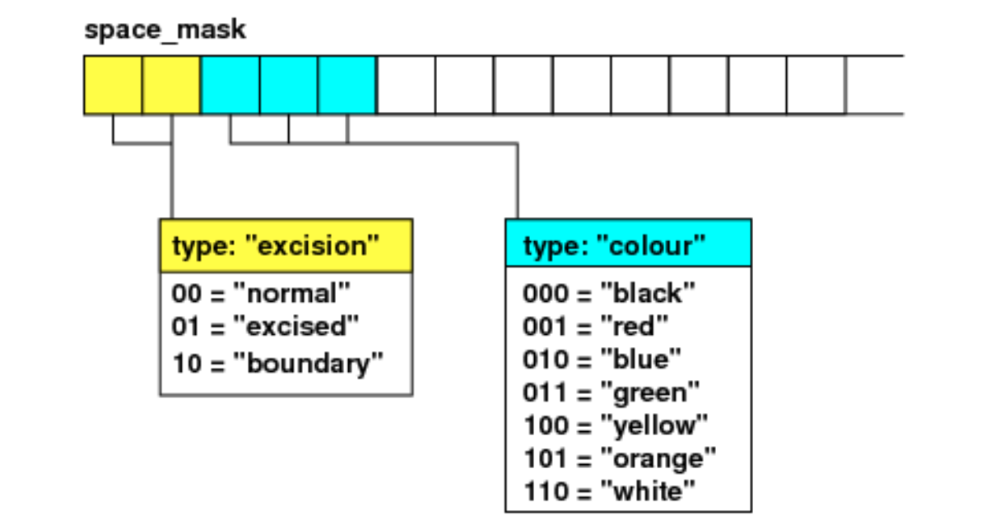

<!DOCTYPE html>
<!--[if IE 8]><html class="no-js lt-ie9" lang="en" > <![endif]-->
<!--[if gt IE 8]><!--> <html class="no-js" lang="en" > <!--<![endif]-->
<head>
  <meta charset="utf-8">
  
  <meta name="viewport" content="width=device-width, initial-scale=1.0">
  
  <title>Thorn Guide &mdash; Cactus 0.0.1 documentation</title>
  

  
  
  
  

  
  <script type="text/javascript" src="../_static/js/modernizr.min.js"></script>
  
    
      <script type="text/javascript" id="documentation_options" data-url_root="../" src="../_static/documentation_options.js"></script>
        <script type="text/javascript" src="../_static/jquery.js"></script>
        <script type="text/javascript" src="../_static/underscore.js"></script>
        <script type="text/javascript" src="../_static/doctools.js"></script>
        <script type="text/javascript" src="../_static/language_data.js"></script>
        <script async="async" type="text/javascript" src="https://cdnjs.cloudflare.com/ajax/libs/mathjax/2.7.5/latest.js?config=TeX-AMS-MML_HTMLorMML"></script>
    
    <script type="text/javascript" src="../_static/js/theme.js"></script>

    

  
  <link rel="stylesheet" href="../_static/css/theme.css" type="text/css" />
  <link rel="stylesheet" href="../_static/pygments.css" type="text/css" />
  <link rel="stylesheet" href="../_static/graphviz.css" type="text/css" />
    <link rel="index" title="Index" href="../genindex.html" />
    <link rel="search" title="Search" href="../search.html" />
    <link rel="next" title="Thorn Write" href="ThornWrite.html" />
    <link rel="prev" title="Get Start" href="GetStart.html" /> 
</head>

<body class="wy-body-for-nav">

   
  <div class="wy-grid-for-nav">
    
    <nav data-toggle="wy-nav-shift" class="wy-nav-side">
      <div class="wy-side-scroll">
        <div class="wy-side-nav-search" >
          

          
            <a href="../index.html" class="icon icon-home"> Cactus
          

          
          </a>

          
            
            
          

          
<div role="search">
  <form id="rtd-search-form" class="wy-form" action="../search.html" method="get">
    <input type="text" name="q" placeholder="Search docs" />
    <input type="hidden" name="check_keywords" value="yes" />
    <input type="hidden" name="area" value="default" />
  </form>
</div>

          
        </div>

        <div class="wy-menu wy-menu-vertical" data-spy="affix" role="navigation" aria-label="main navigation">
          
            
            
              
            
            
              <p class="caption"><span class="caption-text">Contents:</span></p>
<ul class="current">
<li class="toctree-l1"><a class="reference internal" href="GetStart.html">Get Start</a></li>
<li class="toctree-l1 current"><a class="current reference internal" href="#">Thorn Guide</a><ul>
<li class="toctree-l2"><a class="reference internal" href="#parameter-file-syntax">Parameter File Syntax</a></li>
<li class="toctree-l2"><a class="reference internal" href="#flesh">Flesh</a><ul>
<li class="toctree-l3"><a class="reference internal" href="#parameter">parameter</a><ul>
<li class="toctree-l4"><a class="reference internal" href="#warning">Warning</a></li>
</ul>
</li>
</ul>
</li>
<li class="toctree-l2"><a class="reference internal" href="#cactusbase">CactusBase</a><ul>
<li class="toctree-l3"><a class="reference internal" href="#coordbase">CoordBase</a><ul>
<li class="toctree-l4"><a class="reference internal" href="#id1">Parameter</a></li>
<li class="toctree-l4"><a class="reference internal" href="#id2">Warning</a></li>
</ul>
</li>
<li class="toctree-l3"><a class="reference internal" href="#cartgrid3d">CartGrid3D</a><ul>
<li class="toctree-l4"><a class="reference internal" href="#id3">Parameter</a></li>
</ul>
</li>
<li class="toctree-l3"><a class="reference internal" href="#boundary">Boundary</a><ul>
<li class="toctree-l4"><a class="reference internal" href="#id4">Warning</a></li>
</ul>
</li>
<li class="toctree-l3"><a class="reference internal" href="#ioutil">IOUtil</a><ul>
<li class="toctree-l4"><a class="reference internal" href="#id5">Parameter</a></li>
<li class="toctree-l4"><a class="reference internal" href="#id6">Warning</a></li>
</ul>
</li>
<li class="toctree-l3"><a class="reference internal" href="#iobasic">IOBasic</a><ul>
<li class="toctree-l4"><a class="reference internal" href="#reduction-operations">Reduction Operations</a></li>
<li class="toctree-l4"><a class="reference internal" href="#id7">Parameter</a></li>
<li class="toctree-l4"><a class="reference internal" href="#id8">Warning</a></li>
</ul>
</li>
<li class="toctree-l3"><a class="reference internal" href="#ioascii">IOASCII</a><ul>
<li class="toctree-l4"><a class="reference internal" href="#id9">Parameter</a></li>
<li class="toctree-l4"><a class="reference internal" href="#id10">Warning</a></li>
</ul>
</li>
<li class="toctree-l3"><a class="reference internal" href="#time">Time</a><ul>
<li class="toctree-l4"><a class="reference internal" href="#id11">Parameter</a></li>
</ul>
</li>
<li class="toctree-l3"><a class="reference internal" href="#symbase">SymBase</a></li>
<li class="toctree-l3"><a class="reference internal" href="#initbase">InitBase</a><ul>
<li class="toctree-l4"><a class="reference internal" href="#id12">Parameter</a></li>
</ul>
</li>
<li class="toctree-l3"><a class="reference internal" href="#fortran">Fortran</a></li>
</ul>
</li>
<li class="toctree-l2"><a class="reference internal" href="#llama">Llama</a><ul>
<li class="toctree-l3"><a class="reference internal" href="#coordinates">Coordinates</a><ul>
<li class="toctree-l4"><a class="reference internal" href="#id13">Parameter</a></li>
</ul>
</li>
<li class="toctree-l3"><a class="reference internal" href="#coordinatessymmetry">CoordinatesSymmetry</a><ul>
<li class="toctree-l4"><a class="reference internal" href="#id14">Parameter</a></li>
</ul>
</li>
</ul>
</li>
<li class="toctree-l2"><a class="reference internal" href="#cactusnumerical">CactusNumerical</a><ul>
<li class="toctree-l3"><a class="reference internal" href="#reflectionsymmetry">ReflectionSymmetry</a><ul>
<li class="toctree-l4"><a class="reference internal" href="#id15">Parameter</a></li>
<li class="toctree-l4"><a class="reference internal" href="#id16">Warning</a></li>
</ul>
</li>
<li class="toctree-l3"><a class="reference internal" href="#mol">MoL</a><ul>
<li class="toctree-l4"><a class="reference internal" href="#id17">Parameter</a></li>
<li class="toctree-l4"><a class="reference internal" href="#id18">Warning</a></li>
</ul>
</li>
<li class="toctree-l3"><a class="reference internal" href="#dissipation">Dissipation</a><ul>
<li class="toctree-l4"><a class="reference internal" href="#id19">Parameter</a></li>
</ul>
</li>
<li class="toctree-l3"><a class="reference internal" href="#summationbyparts">SummationByParts</a><ul>
<li class="toctree-l4"><a class="reference internal" href="#id20">Warning</a></li>
</ul>
</li>
<li class="toctree-l3"><a class="reference internal" href="#sphericalsurface">SphericalSurface</a><ul>
<li class="toctree-l4"><a class="reference internal" href="#id21">Parameter</a></li>
</ul>
</li>
<li class="toctree-l3"><a class="reference internal" href="#spacemask">SpaceMask</a><ul>
<li class="toctree-l4"><a class="reference internal" href="#id22">Parameter</a></li>
</ul>
</li>
<li class="toctree-l3"><a class="reference internal" href="#slab">Slab</a></li>
</ul>
</li>
<li class="toctree-l2"><a class="reference internal" href="#cactuspugh">CactusPUGH</a><ul>
<li class="toctree-l3"><a class="reference internal" href="#pugh">PUGH</a><ul>
<li class="toctree-l4"><a class="reference internal" href="#id23">Parameter</a></li>
</ul>
</li>
<li class="toctree-l3"><a class="reference internal" href="#pughslab">PUGHSlab</a></li>
</ul>
</li>
<li class="toctree-l2"><a class="reference internal" href="#carpet">Carpet</a><ul>
<li class="toctree-l3"><a class="reference internal" href="#id24">Carpet</a><ul>
<li class="toctree-l4"><a class="reference internal" href="#id25">Parameter</a></li>
<li class="toctree-l4"><a class="reference internal" href="#id26">Warning</a></li>
</ul>
</li>
<li class="toctree-l3"><a class="reference internal" href="#carpetlib">CarpetLib</a></li>
<li class="toctree-l3"><a class="reference internal" href="#carpetregrid2">CarpetRegrid2</a><ul>
<li class="toctree-l4"><a class="reference internal" href="#id27">Parameter</a></li>
<li class="toctree-l4"><a class="reference internal" href="#id28">Warning</a></li>
</ul>
</li>
<li class="toctree-l3"><a class="reference internal" href="#carpettracker">CarpetTracker</a><ul>
<li class="toctree-l4"><a class="reference internal" href="#id29">Parameter</a></li>
</ul>
</li>
<li class="toctree-l3"><a class="reference internal" href="#carpetinterp-carpetinterp2">CarpetInterp/CarpetInterp2</a></li>
<li class="toctree-l3"><a class="reference internal" href="#carpetiobasic">CarpetIOBasic</a><ul>
<li class="toctree-l4"><a class="reference internal" href="#id30">Parameter</a></li>
<li class="toctree-l4"><a class="reference internal" href="#id31">Warning</a></li>
</ul>
</li>
<li class="toctree-l3"><a class="reference internal" href="#carpetioscalar">CarpetIOScalar</a><ul>
<li class="toctree-l4"><a class="reference internal" href="#id32">Parameter</a></li>
</ul>
</li>
<li class="toctree-l3"><a class="reference internal" href="#carpetioascii">CarpetIOASCII</a><ul>
<li class="toctree-l4"><a class="reference internal" href="#id33">Parameter</a></li>
</ul>
</li>
<li class="toctree-l3"><a class="reference internal" href="#carpetiohdf5">CarpetIOHDF5</a><ul>
<li class="toctree-l4"><a class="reference internal" href="#id34">Parameter</a></li>
</ul>
</li>
<li class="toctree-l3"><a class="reference internal" href="#carpetslab">CarpetSlab</a></li>
<li class="toctree-l3"><a class="reference internal" href="#carpetreduce">CarpetReduce</a></li>
<li class="toctree-l3"><a class="reference internal" href="#carpetmask">CarpetMask</a></li>
</ul>
</li>
<li class="toctree-l2"><a class="reference internal" href="#einsteinbase">EinsteinBase</a><ul>
<li class="toctree-l3"><a class="reference internal" href="#admbase">ADMBase</a><ul>
<li class="toctree-l4"><a class="reference internal" href="#id35">Parameter</a></li>
<li class="toctree-l4"><a class="reference internal" href="#id36">Warning</a></li>
</ul>
</li>
<li class="toctree-l3"><a class="reference internal" href="#staticconformal">StaticConformal</a><ul>
<li class="toctree-l4"><a class="reference internal" href="#id37">Parameter</a></li>
</ul>
</li>
<li class="toctree-l3"><a class="reference internal" href="#hydrobase">HydroBase</a></li>
<li class="toctree-l3"><a class="reference internal" href="#tmunubase">TmunuBase</a></li>
<li class="toctree-l3"><a class="reference internal" href="#admmacros">ADMMacros</a></li>
<li class="toctree-l3"><a class="reference internal" href="#admcoupling">ADMCoupling</a></li>
</ul>
</li>
<li class="toctree-l2"><a class="reference internal" href="#einsteininitialdata">EinsteinInitialData</a><ul>
<li class="toctree-l3"><a class="reference internal" href="#twopunctures">TwoPunctures</a><ul>
<li class="toctree-l4"><a class="reference internal" href="#id38">Parameter</a></li>
</ul>
</li>
<li class="toctree-l3"><a class="reference internal" href="#tovsolver">TOVSolver</a><ul>
<li class="toctree-l4"><a class="reference internal" href="#id39">Parameter</a></li>
</ul>
</li>
<li class="toctree-l3"><a class="reference internal" href="#exact">Exact</a><ul>
<li class="toctree-l4"><a class="reference internal" href="#id40">Parameter</a></li>
</ul>
</li>
</ul>
</li>
<li class="toctree-l2"><a class="reference internal" href="#einsteineos">EinsteinEOS</a><ul>
<li class="toctree-l3"><a class="reference internal" href="#eos-polytrope">EOS_Polytrope</a><ul>
<li class="toctree-l4"><a class="reference internal" href="#id41">Parameter</a></li>
</ul>
</li>
<li class="toctree-l3"><a class="reference internal" href="#eos-hybrid">EOS_Hybrid</a><ul>
<li class="toctree-l4"><a class="reference internal" href="#id42">Parameter</a></li>
</ul>
</li>
<li class="toctree-l3"><a class="reference internal" href="#eos-omni">EOS_Omni</a><ul>
<li class="toctree-l4"><a class="reference internal" href="#id43">Parameter</a></li>
</ul>
</li>
</ul>
</li>
<li class="toctree-l2"><a class="reference internal" href="#einsteinevolve">EinsteinEvolve</a><ul>
<li class="toctree-l3"><a class="reference internal" href="#newrad">NewRad</a></li>
</ul>
</li>
<li class="toctree-l2"><a class="reference internal" href="#mclachlan">McLachlan</a><ul>
<li class="toctree-l3"><a class="reference internal" href="#ml-bssn">ML_BSSN</a><ul>
<li class="toctree-l4"><a class="reference internal" href="#id44">Parameter</a></li>
<li class="toctree-l4"><a class="reference internal" href="#id45">Warning</a></li>
</ul>
</li>
<li class="toctree-l3"><a class="reference internal" href="#ml-bssn-helper">ML_BSSN_Helper</a><ul>
<li class="toctree-l4"><a class="reference internal" href="#id46">Warning</a></li>
</ul>
</li>
<li class="toctree-l3"><a class="reference internal" href="#ml-admconstraints">ML_ADMConstraints</a><ul>
<li class="toctree-l4"><a class="reference internal" href="#output">Output</a></li>
</ul>
</li>
</ul>
</li>
<li class="toctree-l2"><a class="reference internal" href="#einsteinanalysis">EinsteinAnalysis</a><ul>
<li class="toctree-l3"><a class="reference internal" href="#admanalysis">ADMAnalysis</a><ul>
<li class="toctree-l4"><a class="reference internal" href="#id47">Warning</a></li>
<li class="toctree-l4"><a class="reference internal" href="#id48">Output</a></li>
</ul>
</li>
<li class="toctree-l3"><a class="reference internal" href="#admmass">ADMMass</a><ul>
<li class="toctree-l4"><a class="reference internal" href="#id49">Parameter</a></li>
<li class="toctree-l4"><a class="reference internal" href="#id50">Warning</a></li>
</ul>
</li>
<li class="toctree-l3"><a class="reference internal" href="#hydro-analysis">Hydro_Analysis</a><ul>
<li class="toctree-l4"><a class="reference internal" href="#id51">Parameter</a></li>
<li class="toctree-l4"><a class="reference internal" href="#id52">Output</a></li>
<li class="toctree-l4"><a class="reference internal" href="#id53">Warning</a></li>
</ul>
</li>
<li class="toctree-l3"><a class="reference internal" href="#quasilocalmeasures">QuasiLocalMeasures</a><ul>
<li class="toctree-l4"><a class="reference internal" href="#id54">Parameter</a></li>
<li class="toctree-l4"><a class="reference internal" href="#id55">Output</a></li>
</ul>
</li>
<li class="toctree-l3"><a class="reference internal" href="#puncturetracker">PunctureTracker</a><ul>
<li class="toctree-l4"><a class="reference internal" href="#id56">Parameter</a></li>
<li class="toctree-l4"><a class="reference internal" href="#id57">Warning</a></li>
<li class="toctree-l4"><a class="reference internal" href="#id58">Output</a></li>
</ul>
</li>
<li class="toctree-l3"><a class="reference internal" href="#nstracker">NSTracker</a><ul>
<li class="toctree-l4"><a class="reference internal" href="#id59">Parameter</a></li>
</ul>
</li>
<li class="toctree-l3"><a class="reference internal" href="#ahfinderdirect">AHFinderDirect</a><ul>
<li class="toctree-l4"><a class="reference internal" href="#id60">Parameter</a></li>
</ul>
</li>
</ul>
</li>
<li class="toctree-l2"><a class="reference internal" href="#ctthorns">CTThorns</a><ul>
<li class="toctree-l3"><a class="reference internal" href="#ct-multilevel">CT_MultiLevel</a></li>
</ul>
</li>
<li class="toctree-l2"><a class="reference internal" href="#cactusutils">CactusUtils</a><ul>
<li class="toctree-l3"><a class="reference internal" href="#nanchecker">NaNChecker</a><ul>
<li class="toctree-l4"><a class="reference internal" href="#id61">Parameter</a></li>
</ul>
</li>
<li class="toctree-l3"><a class="reference internal" href="#systemstatistics">SystemStatistics</a><ul>
<li class="toctree-l4"><a class="reference internal" href="#id62">Output</a></li>
</ul>
</li>
<li class="toctree-l3"><a class="reference internal" href="#terminationtrigger">TerminationTrigger</a><ul>
<li class="toctree-l4"><a class="reference internal" href="#id63">Parameter</a></li>
</ul>
</li>
</ul>
</li>
<li class="toctree-l2"><a class="reference internal" href="#cactusconnect">CactusConnect</a><ul>
<li class="toctree-l3"><a class="reference internal" href="#httpd">HTTPD</a></li>
<li class="toctree-l3"><a class="reference internal" href="#httpdextra">HTTPDExtra</a></li>
</ul>
</li>
</ul>
</li>
<li class="toctree-l1"><a class="reference internal" href="ThornWrite.html">Thorn Write</a></li>
<li class="toctree-l1"><a class="reference internal" href="Lorene.html">Lorene</a></li>
<li class="toctree-l1"><a class="reference internal" href="Kranc.html">Kranc</a></li>
<li class="toctree-l1"><a class="reference internal" href="Reference.html">Reference</a></li>
</ul>

            
          
        </div>
      </div>
    </nav>

    <section data-toggle="wy-nav-shift" class="wy-nav-content-wrap">

      
      <nav class="wy-nav-top" aria-label="top navigation">
        
          <i data-toggle="wy-nav-top" class="fa fa-bars"></i>
          <a href="../index.html">Cactus</a>
        
      </nav>


      <div class="wy-nav-content">
        
        <div class="rst-content">
        
          


<div role="navigation" aria-label="breadcrumbs navigation">

  <ul class="wy-breadcrumbs">
    
      <li><a href="../index.html">Docs</a> &raquo;</li>
        
      <li>Thorn Guide</li>
    
    
      <li class="wy-breadcrumbs-aside">
        
            
            <a href="../_sources/note/Thorn.rst.txt" rel="nofollow"> View page source</a>
          
        
      </li>
    
  </ul>

  
  <hr/>
</div>
          <div role="main" class="document" itemscope="itemscope" itemtype="http://schema.org/Article">
           <div itemprop="articleBody">
            
  <div class="section" id="thorn-guide">
<h1>Thorn Guide<a class="headerlink" href="#thorn-guide" title="Permalink to this headline">¶</a></h1>
<div class="section" id="parameter-file-syntax">
<h2>Parameter File Syntax<a class="headerlink" href="#parameter-file-syntax" title="Permalink to this headline">¶</a></h2>
<p>A parameter file is used to control the behaviour of a Cactus executable.
It specifies initial values for parameters as defined in the various thorns’ param.ccl files.
The name of a parameter file is often given the suffix .par, but this is not mandatory.</p>
<p>A parameter file is a text file whose lines are either comments or parameter statements.
Comments are begin with either ‘#’ or ‘!’.
A parameter statement consists of one or more parameter names, followed by an ‘=’, followed by the value for this parameter.</p>
<p>The first parameter statement in any parameter file should set ActiveThorns, which is a special parameter that tells the program which thorns are to be activated.
Only parameters from active thorns can be set (and only those routines scheduled by active thorns are run).
By default, all thorns are inactive.</p>
</div>
<div class="section" id="flesh">
<h2>Flesh<a class="headerlink" href="#flesh" title="Permalink to this headline">¶</a></h2>
<div class="section" id="parameter">
<h3>parameter<a class="headerlink" href="#parameter" title="Permalink to this headline">¶</a></h3>
<ul>
<li><p>Description of this simulation</p>
<div class="highlight-default notranslate"><div class="highlight"><pre><span></span><span class="gp">&gt;&gt;&gt; </span><span class="n">Cactus</span><span class="p">::</span><span class="n">cctk_run_title</span> <span class="o">=</span> <span class="s2">&quot;Description of this simulation&quot;</span>
</pre></div>
</div>
</li>
<li><p>Give detailed information for each warning statement</p>
<div class="highlight-default notranslate"><div class="highlight"><pre><span></span><span class="gp">&gt;&gt;&gt; </span><span class="n">Cactus</span><span class="p">::</span><span class="n">cctk_full_warnings</span> <span class="o">=</span> <span class="n">yes</span>
<span class="go">WARNING level 3 from host ubuntu process 0</span>
<span class="go">    while executing schedule bin CCTK_BASEGRID, routine IOASCII::IOASCII_Choose1D</span>
<span class="go">    in thorn IOUtil, file /home4/yuliu/Cactus/arrangements/CactusBase/IOUtil/src/Utils.c:361:</span>
<span class="go">    -&gt; IOUtil_1DLines: Found no default Cartesian coordinate system associated with grid variables of dimension 2, and no slice center index coordinates were given either - slice center will not be set up for output of 1D lines from 2D variables</span>
<span class="gp">&gt;&gt;&gt; </span><span class="n">Cactus</span><span class="p">::</span><span class="n">cctk_full_warnings</span> <span class="o">=</span> <span class="n">no</span>
<span class="go">WARNING[L3,P0] (IOUtil): IOUtil_1DLines: Found no default Cartesian coordinate system associated with grid variables of dimension 2, and no slice center index coordinates were given either - slice center will not be set up for output of 1D lines from 2D variables</span>
</pre></div>
</div>
</li>
<li><p>Print the scheduling tree to standard output</p>
<div class="highlight-default notranslate"><div class="highlight"><pre><span></span><span class="gp">&gt;&gt;&gt; </span><span class="n">Cactus</span><span class="p">::</span><span class="n">cctk_show_schedule</span> <span class="o">=</span> <span class="n">yes</span>
<span class="go">if (recover initial data)</span>
<span class="go">    Recover parameters</span>
<span class="go">endif</span>
<span class="go">Startup routines</span>
<span class="go">    [CCTK_STARTUP]</span>
<span class="go">Startup routines which need an existing grid hierarchy</span>
<span class="go">    [CCTK_WRAGH]</span>
<span class="go">Parameter checking routines</span>
<span class="go">    [CCTK_PARAMCHECK]</span>
<span class="go">Initialisation</span>
<span class="go">    if (NOT (recover initial data AND recovery_mode is &#39;strict&#39;))</span>
<span class="go">        [CCTK_PREREGRIDINITIAL]</span>
<span class="go">        Set up grid hierarchy</span>
<span class="go">        [CCTK_POSTREGRIDINITIAL]</span>
<span class="go">        [CCTK_BASEGRID]</span>
<span class="go">        [CCTK_INITIAL]</span>
<span class="go">        [CCTK_POSTINITIAL]</span>
<span class="go">        Initialise finer grids recursively</span>
<span class="go">        Restrict from finer grids</span>
<span class="go">        [CCTK_POSTRESTRICTINITIAL]</span>
<span class="go">        [CCTK_POSTPOSTINITIAL]</span>
<span class="go">        [CCTK_POSTSTEP]</span>
<span class="go">    endif</span>
<span class="go">    if (recover initial data)</span>
<span class="go">        [CCTK_BASEGRID]</span>
<span class="go">        [CCTK_RECOVER_VARIABLES]</span>
<span class="go">        [CCTK_POST_RECOVER_VARIABLES]</span>
<span class="go">    endif</span>
<span class="go">    if (checkpoint initial data)</span>
<span class="go">        [CCTK_CPINITIAL]</span>
<span class="go">    endif</span>
<span class="go">    if (analysis)</span>
<span class="go">        [CCTK_ANALYSIS]</span>
<span class="go">    endif</span>
<span class="go">Output grid variables</span>
<span class="go">do loop over timesteps</span>
<span class="go">    [CCTK_PREREGRID]</span>
<span class="go">    Change grid hierarchy</span>
<span class="go">    [CCTK_POSTREGRID]</span>
<span class="go">    Rotate timelevels</span>
<span class="go">    iteration = iteration+1</span>
<span class="go">    t = t+dt</span>
<span class="go">    [CCTK_PRESTEP]</span>
<span class="go">    [CCTK_EVOL]</span>
<span class="go">    Evolve finer grids recursively</span>
<span class="go">    Restrict from finer grids</span>
<span class="go">    [CCTK_POSTRESTRICT]</span>
<span class="go">    [CCTK_POSTSTEP]</span>
<span class="go">    if (checkpoint)</span>
<span class="go">        [CCTK_CHECKPOINT]</span>
<span class="go">    endif</span>
<span class="go">    if (analysis)</span>
<span class="go">        [CCTK_ANALYSIS]</span>
<span class="go">    endif</span>
<span class="go">    Output grid variables</span>
<span class="go">enddo</span>
<span class="go">Termination routines</span>
<span class="go">    [CCTK_TERMINATE]</span>
<span class="go">Shutdown routines</span>
<span class="go">    [CCTK_SHUTDOWN]</span>
<span class="go">Routines run after changing the grid hierarchy:</span>
<span class="go">    [CCTK_POSTREGRID]</span>
<span class="gp">&gt;&gt;&gt; </span><span class="n">Cactus</span><span class="p">::</span><span class="n">cctk_show_schedule</span> <span class="o">=</span> <span class="n">no</span>
<span class="go">None</span>
</pre></div>
</div>
</li>
<li><p>Provide runtime of each thorn</p>
<div class="highlight-default notranslate"><div class="highlight"><pre><span></span><span class="gp">&gt;&gt;&gt; </span><span class="n">Cactus</span><span class="p">::</span><span class="n">cctk_timer_output</span> <span class="o">=</span> <span class="s2">&quot;full&quot;</span>
<span class="go">===================================================================================================</span>
<span class="go">Thorn           | Scheduled routine in time bin           | gettimeofday [secs] | getrusage [secs]</span>
<span class="go">===================================================================================================</span>
<span class="go">CoordBase       | Register a GH extension to store the coo|          0.00000400 |       0.00000000</span>
<span class="go">---------------------------------------------------------------------------------------------------</span>
<span class="go">                | Total time for CCTK_STARTUP             |          0.00000400 |       0.00000000</span>
<span class="go">===================================================================================================</span>
<span class="go">---------------------------------------------------------------------------------------------------</span>
<span class="go">                | Total time for simulation               |          0.00004400 |       0.00000000</span>
<span class="go">===================================================================================================</span>
<span class="gp">&gt;&gt;&gt; </span><span class="n">Cactus</span><span class="p">::</span><span class="n">cctk_timer_output</span> <span class="o">=</span> <span class="s2">&quot;off&quot;</span>
<span class="go">None</span>
</pre></div>
</div>
</li>
<li><p>Condition on which to terminate evolution loop</p>
<div class="highlight-default notranslate"><div class="highlight"><pre><span></span><span class="gp">&gt;&gt;&gt; </span><span class="n">Cactus</span><span class="p">::</span><span class="n">terminate</span> <span class="o">=</span> <span class="s2">&quot;iteration&quot;</span>
<span class="gp">&gt;&gt;&gt; </span><span class="n">Cactus</span><span class="p">::</span><span class="n">cctk_itlast</span> <span class="o">=</span> <span class="mi">0</span>
<span class="go">----------------</span>
<span class="go">it  |          |</span>
<span class="go">    |    t     |</span>
<span class="go">----------------</span>
<span class="go">  0 |    0.000 |</span>
<span class="gp">&gt;&gt;&gt; </span><span class="n">Cactus</span><span class="p">::</span><span class="n">terminate</span> <span class="o">=</span> <span class="s2">&quot;iteration&quot;</span>
<span class="gp">&gt;&gt;&gt; </span><span class="n">Cactus</span><span class="p">::</span><span class="n">cctk_itlast</span> <span class="o">=</span> <span class="mi">5</span>
<span class="go">----------------</span>
<span class="go">it  |          |</span>
<span class="go">    |    t     |</span>
<span class="go">----------------</span>
<span class="go">  0 |    0.000 |</span>
<span class="go">  1 |    1.000 |</span>
<span class="go">  2 |    2.000 |</span>
<span class="go">  3 |    3.000 |</span>
<span class="go">  4 |    4.000 |</span>
<span class="go">  5 |    5.000 |</span>
<span class="gp">&gt;&gt;&gt; </span><span class="n">Cactus</span><span class="p">::</span><span class="n">terminate</span> <span class="o">=</span> <span class="s2">&quot;time&quot;</span>
<span class="gp">&gt;&gt;&gt; </span><span class="n">Cactus</span><span class="p">::</span><span class="n">cctk_initial_time</span> <span class="o">=</span> <span class="mi">10</span>
<span class="gp">&gt;&gt;&gt; </span><span class="n">Cactus</span><span class="p">::</span><span class="n">cctk_final_time</span> <span class="o">=</span> <span class="mi">15</span>
<span class="go">----------------</span>
<span class="go">it  |          |</span>
<span class="go">    |    t     |</span>
<span class="go">----------------</span>
<span class="go">  0 |   10.000 |</span>
<span class="go">  1 |   11.000 |</span>
<span class="go">  2 |   12.000 |</span>
<span class="go">  3 |   13.000 |</span>
<span class="go">  4 |   14.000 |</span>
<span class="go">  5 |   15.000 |</span>
</pre></div>
</div>
</li>
</ul>
<div class="section" id="warning">
<h4>Warning<a class="headerlink" href="#warning" title="Permalink to this headline">¶</a></h4>
<ul class="simple">
<li><p>Only level 0 are actually errors. All warnings that are level 1 and higher can be ignored (high level means a lower priority warning).</p></li>
</ul>
</div>
</div>
</div>
<div class="section" id="cactusbase">
<h2>CactusBase<a class="headerlink" href="#cactusbase" title="Permalink to this headline">¶</a></h2>
<p>Provides infrastructure thorns for boundary conditions, setting up the coordinates, Input and Output, symmetries and time.</p>
<div class="section" id="coordbase">
<h3>CoordBase<a class="headerlink" href="#coordbase" title="Permalink to this headline">¶</a></h3>
<p>The CoordBase thorn provides a method of registering coordinate systems and their properties.</p>
<p>CoordBase provides a way for specifying the extent of the simulation domain that is independent of the actual coordinate and symmetry thorns. This is necessary because the size of the physical domain is not necessarily the same as the size of the computational grid, which is usually enlarged by symmetry zones and/or boundary zones.</p>
<div class="admonition note">
<p class="admonition-title">Note</p>
<p>The black hole “source” region has a length scale of <span class="math notranslate nohighlight">\(G M / c^{2}\)</span>, where G is Newton’s constant, M is the total mass of the two black holes, and c is the speed of light. The gravitational waves produced by the source have a length scale up to <span class="math notranslate nohighlight">\(\sim 100 G M / c^{2}\)</span>. The source region requires grid zones of size <span class="math notranslate nohighlight">\(\lesssim 0.01 G M / c^{2}\)</span> to accurately capture the details of the black holes’ interaction, while the extent of the grid needs to be several hundred <span class="math notranslate nohighlight">\(G M / c^{2}\)</span> to accurately capture the details of the gravitational wave signal.</p>
</div>
<div class="section" id="id1">
<h4>Parameter<a class="headerlink" href="#id1" title="Permalink to this headline">¶</a></h4>
<ul>
<li><p>Specifying the extent of the physical domain and the location of the boundary points.</p>
<blockquote>
<div><div class="highlight-default notranslate"><div class="highlight"><pre><span></span><span class="gp">&gt;&gt;&gt; </span><span class="n">CoordBase</span><span class="p">::</span><span class="n">xmin</span> <span class="o">=</span> <span class="o">-</span><span class="mf">10.0</span>
<span class="gp">&gt;&gt;&gt; </span><span class="n">CoordBase</span><span class="p">::</span><span class="n">ymin</span> <span class="o">=</span> <span class="o">-</span><span class="mf">10.0</span>
<span class="gp">&gt;&gt;&gt; </span><span class="n">CoordBase</span><span class="p">::</span><span class="n">zmin</span> <span class="o">=</span> <span class="o">-</span><span class="mf">10.0</span>
<span class="gp">&gt;&gt;&gt; </span><span class="n">CoordBase</span><span class="p">::</span><span class="n">xmax</span> <span class="o">=</span> <span class="o">+</span><span class="mf">10.0</span>
<span class="gp">&gt;&gt;&gt; </span><span class="n">CoordBase</span><span class="p">::</span><span class="n">ymax</span> <span class="o">=</span> <span class="o">+</span><span class="mf">10.0</span>
<span class="gp">&gt;&gt;&gt; </span><span class="n">CoordBase</span><span class="p">::</span><span class="n">zmax</span> <span class="o">=</span> <span class="o">+</span><span class="mf">10.0</span>
<span class="gp">&gt;&gt;&gt; </span><span class="n">CoordBase</span><span class="p">::</span><span class="n">dx</span>   <span class="o">=</span>     <span class="mi">1</span>
<span class="gp">&gt;&gt;&gt; </span><span class="n">CoordBase</span><span class="p">::</span><span class="n">dy</span>   <span class="o">=</span>     <span class="mi">1</span>
<span class="gp">&gt;&gt;&gt; </span><span class="n">CoordBase</span><span class="p">::</span><span class="n">dz</span>   <span class="o">=</span>     <span class="mi">1</span>
</pre></div>
</div>
<div class="figure align-default">

</div>
<div class="highlight-default notranslate"><div class="highlight"><pre><span></span><span class="gp">&gt;&gt;&gt; </span><span class="n">CoordBase</span><span class="p">::</span><span class="n">xmin</span> <span class="o">=</span> <span class="o">-</span><span class="mf">10.0</span>
<span class="gp">&gt;&gt;&gt; </span><span class="n">CoordBase</span><span class="p">::</span><span class="n">ymin</span> <span class="o">=</span> <span class="o">-</span><span class="mf">10.0</span>
<span class="gp">&gt;&gt;&gt; </span><span class="n">CoordBase</span><span class="p">::</span><span class="n">zmin</span> <span class="o">=</span> <span class="o">-</span><span class="mf">10.0</span>
<span class="gp">&gt;&gt;&gt; </span><span class="n">CoordBase</span><span class="p">::</span><span class="n">xmax</span> <span class="o">=</span> <span class="o">+</span><span class="mf">10.0</span>
<span class="gp">&gt;&gt;&gt; </span><span class="n">CoordBase</span><span class="p">::</span><span class="n">ymax</span> <span class="o">=</span> <span class="o">+</span><span class="mf">10.0</span>
<span class="gp">&gt;&gt;&gt; </span><span class="n">CoordBase</span><span class="p">::</span><span class="n">zmax</span> <span class="o">=</span> <span class="o">+</span><span class="mf">10.0</span>
<span class="gp">&gt;&gt;&gt; </span><span class="n">CoordBase</span><span class="p">::</span><span class="n">dx</span>   <span class="o">=</span>     <span class="mi">1</span>
<span class="gp">&gt;&gt;&gt; </span><span class="n">CoordBase</span><span class="p">::</span><span class="n">dy</span>   <span class="o">=</span>     <span class="mi">1</span>
<span class="gp">&gt;&gt;&gt; </span><span class="n">CoordBase</span><span class="p">::</span><span class="n">dz</span>   <span class="o">=</span>     <span class="mi">1</span>
<span class="gp">&gt;&gt;&gt; </span><span class="n">CoordBase</span><span class="p">::</span><span class="n">boundary_shiftout_x_lower</span> <span class="o">=</span> <span class="mi">1</span>
<span class="gp">&gt;&gt;&gt; </span><span class="n">CoordBase</span><span class="p">::</span><span class="n">boundary_shiftout_y_lower</span> <span class="o">=</span> <span class="mi">1</span>
<span class="gp">&gt;&gt;&gt; </span><span class="n">CoordBase</span><span class="p">::</span><span class="n">boundary_shiftout_z_lower</span> <span class="o">=</span> <span class="mi">1</span>
<span class="gp">&gt;&gt;&gt; </span><span class="n">driver</span><span class="p">::</span><span class="n">ghost_size</span>       <span class="o">=</span> <span class="mi">3</span>
</pre></div>
</div>
<div class="figure align-default">

</div>
<div class="highlight-default notranslate"><div class="highlight"><pre><span></span><span class="gp">&gt;&gt;&gt; </span><span class="n">CoordBase</span><span class="p">::</span><span class="n">xmin</span> <span class="o">=</span> <span class="o">-</span><span class="mf">10.0</span>
<span class="gp">&gt;&gt;&gt; </span><span class="n">CoordBase</span><span class="p">::</span><span class="n">ymin</span> <span class="o">=</span> <span class="o">-</span><span class="mf">10.0</span>
<span class="gp">&gt;&gt;&gt; </span><span class="n">CoordBase</span><span class="p">::</span><span class="n">zmin</span> <span class="o">=</span> <span class="o">-</span><span class="mf">10.0</span>
<span class="gp">&gt;&gt;&gt; </span><span class="n">CoordBase</span><span class="p">::</span><span class="n">xmax</span> <span class="o">=</span> <span class="o">+</span><span class="mf">10.0</span>
<span class="gp">&gt;&gt;&gt; </span><span class="n">CoordBase</span><span class="p">::</span><span class="n">ymax</span> <span class="o">=</span> <span class="o">+</span><span class="mf">10.0</span>
<span class="gp">&gt;&gt;&gt; </span><span class="n">CoordBase</span><span class="p">::</span><span class="n">zmax</span> <span class="o">=</span> <span class="o">+</span><span class="mf">10.0</span>
<span class="gp">&gt;&gt;&gt; </span><span class="n">CoordBase</span><span class="p">::</span><span class="n">dx</span>   <span class="o">=</span>     <span class="mi">1</span>
<span class="gp">&gt;&gt;&gt; </span><span class="n">CoordBase</span><span class="p">::</span><span class="n">dy</span>   <span class="o">=</span>     <span class="mi">1</span>
<span class="gp">&gt;&gt;&gt; </span><span class="n">CoordBase</span><span class="p">::</span><span class="n">dz</span>   <span class="o">=</span>     <span class="mi">1</span>
<span class="gp">&gt;&gt;&gt; </span><span class="n">CoordBase</span><span class="p">::</span><span class="n">boundary_size_x_lower</span>     <span class="o">=</span> <span class="mi">3</span>
<span class="gp">&gt;&gt;&gt; </span><span class="n">CoordBase</span><span class="p">::</span><span class="n">boundary_size_y_lower</span>     <span class="o">=</span> <span class="mi">3</span>
<span class="gp">&gt;&gt;&gt; </span><span class="n">CoordBase</span><span class="p">::</span><span class="n">boundary_size_z_lower</span>     <span class="o">=</span> <span class="mi">3</span>
<span class="gp">&gt;&gt;&gt; </span><span class="n">CoordBase</span><span class="p">::</span><span class="n">boundary_size_x_upper</span>     <span class="o">=</span> <span class="mi">3</span>
<span class="gp">&gt;&gt;&gt; </span><span class="n">CoordBase</span><span class="p">::</span><span class="n">boundary_size_y_upper</span>     <span class="o">=</span> <span class="mi">3</span>
<span class="gp">&gt;&gt;&gt; </span><span class="n">CoordBase</span><span class="p">::</span><span class="n">boundary_size_z_upper</span>     <span class="o">=</span> <span class="mi">3</span>
<span class="gp">&gt;&gt;&gt; </span><span class="n">CoordBase</span><span class="p">::</span><span class="n">boundary_shiftout_x_lower</span> <span class="o">=</span> <span class="mi">1</span>
<span class="gp">&gt;&gt;&gt; </span><span class="n">CoordBase</span><span class="p">::</span><span class="n">boundary_shiftout_y_lower</span> <span class="o">=</span> <span class="mi">1</span>
<span class="gp">&gt;&gt;&gt; </span><span class="n">CoordBase</span><span class="p">::</span><span class="n">boundary_shiftout_z_lower</span> <span class="o">=</span> <span class="mi">1</span>
<span class="gp">&gt;&gt;&gt; </span><span class="n">driver</span><span class="p">::</span><span class="n">ghost_size</span>       <span class="o">=</span> <span class="mi">3</span>
</pre></div>
</div>
<div class="figure align-default">

</div>
</div></blockquote>
</li>
</ul>
</div>
<div class="section" id="id2">
<h4>Warning<a class="headerlink" href="#id2" title="Permalink to this headline">¶</a></h4>
<ul>
<li><p>The boundary must be contained in the active part of the domain boundaries &lt;= domain_active</p>
<div class="highlight-default notranslate"><div class="highlight"><pre><span></span><span class="gp">&gt;&gt;&gt; </span><span class="n">CoordBase</span><span class="p">::</span><span class="n">xmin</span> <span class="o">=</span> <span class="o">-</span><span class="mf">200.0</span>
<span class="gp">&gt;&gt;&gt; </span><span class="n">CoordBase</span><span class="p">::</span><span class="n">xmax</span> <span class="o">=</span> <span class="o">+</span><span class="mf">200.0</span>
</pre></div>
</div>
</li>
</ul>
</div>
</div>
<div class="section" id="cartgrid3d">
<h3>CartGrid3D<a class="headerlink" href="#cartgrid3d" title="Permalink to this headline">¶</a></h3>
<p>CartGrid3D allows you to set up coordinates on a 3D Cartesian grid in a flexible manner.</p>
<div class="graphviz"><object data="../_images/graphviz-584f1397c709744472364afca9eb20891b77d406.svg" type="image/svg+xml" class="graphviz">
<p class="warning">digraph foo {
&quot;CartGrid3D&quot; -&gt; &quot;Coordinate&quot;;
}</p></object></div>
<div class="section" id="id3">
<h4>Parameter<a class="headerlink" href="#id3" title="Permalink to this headline">¶</a></h4>
<ul>
<li><p>Get specification from CoordBase</p>
<div class="highlight-default notranslate"><div class="highlight"><pre><span></span><span class="gp">&gt;&gt;&gt; </span><span class="n">CartGrid3D</span><span class="p">::</span><span class="nb">type</span> <span class="o">=</span> <span class="s2">&quot;coordbase&quot;</span>
</pre></div>
</div>
</li>
<li><p>Get specification from MultiPatch</p>
<div class="highlight-default notranslate"><div class="highlight"><pre><span></span><span class="gp">&gt;&gt;&gt; </span><span class="n">CartGrid3D</span><span class="p">::</span><span class="nb">type</span> <span class="o">=</span> <span class="s2">&quot;multipatch&quot;</span>
<span class="gp">&gt;&gt;&gt; </span><span class="n">CartGrid3D</span><span class="p">::</span><span class="n">set_coordinate_ranges_on</span> <span class="o">=</span> <span class="s2">&quot;all maps&quot;</span>
</pre></div>
</div>
</li>
</ul>
</div>
</div>
<div class="section" id="boundary">
<h3>Boundary<a class="headerlink" href="#boundary" title="Permalink to this headline">¶</a></h3>
<p>Provides a generic interface to boundary conditions, and provides a set of standard boundary conditions for one, two, and three dimensional grid variables.</p>
<div class="graphviz"><object data="../_images/graphviz-71b8dca871b39f9584d43c12c13035088557e719.svg" type="image/svg+xml" class="graphviz">
<p class="warning">digraph foo {
&quot;Boundary&quot; -&gt; &quot;SymBase&quot;;
}</p></object></div>
<div class="section" id="id4">
<h4>Warning<a class="headerlink" href="#id4" title="Permalink to this headline">¶</a></h4>
<ul>
<li><p>The aliased function ‘SymmetryTableHandleForGrid’ (required by thorn ‘Boundary’) has not been provided by any active thorn !</p>
<div class="highlight-default notranslate"><div class="highlight"><pre><span></span><span class="gp">&gt;&gt;&gt; </span><span class="n">ActiveThorns</span> <span class="o">=</span> <span class="s2">&quot;SymBase&quot;</span>
</pre></div>
</div>
</li>
</ul>
</div>
</div>
<div class="section" id="ioutil">
<h3>IOUtil<a class="headerlink" href="#ioutil" title="Permalink to this headline">¶</a></h3>
<p>Thorns providing IO methods typically have string parameters which list the variables which should be output, how frequently (i.e. how many iterations between output), and where the output should go.</p>
<div class="graphviz"><object data="../_images/graphviz-144cf42f0e662e9d9e6a008d8814f67c61921fee.svg" type="image/svg+xml" class="graphviz">
<p class="warning">digraph foo {
&quot;IOUtil&quot; -&gt; &quot;CarpetSlab&quot;;
&quot;IOUtil&quot; -&gt; &quot;PUGHSlab&quot;;
}</p></object></div>
<div class="section" id="id5">
<h4>Parameter<a class="headerlink" href="#id5" title="Permalink to this headline">¶</a></h4>
<ul>
<li><p>The name of the directory to be used for output.</p>
<div class="highlight-default notranslate"><div class="highlight"><pre><span></span>&gt;&gt;&gt; IO::out_dir = $parfile
</pre></div>
</div>
</li>
<li><p>How often, in terms of iterations, each of the Cactus I/O methods will write output.</p>
<div class="highlight-default notranslate"><div class="highlight"><pre><span></span><span class="gp">&gt;&gt;&gt; </span><span class="n">IO</span><span class="p">::</span><span class="n">out_every</span> <span class="o">=</span> <span class="mi">2</span>
<span class="go">------------------------------</span>
<span class="go">it |          | *::coarse_dx |</span>
<span class="go">   |    t     | scalar value |</span>
<span class="go">------------------------------</span>
<span class="go"> 0 |    0.000 |   0.25000000 |</span>
<span class="go"> 2 |    2.000 |   0.25000000 |</span>
<span class="go"> 4 |    4.000 |   0.25000000 |</span>
<span class="go"> 6 |    6.000 |   0.25000000 |</span>
<span class="go"> 8 |    8.000 |   0.25000000 |</span>
</pre></div>
</div>
</li>
<li><p>writing to file is performed only by processor zero. This processor gathers all the output data from the other processors and then writes to a single file.</p>
<div class="highlight-default notranslate"><div class="highlight"><pre><span></span><span class="gp">&gt;&gt;&gt; </span><span class="n">IO</span><span class="p">::</span><span class="n">out_mode</span> <span class="o">=</span> <span class="s2">&quot;onefile&quot;</span>
</pre></div>
</div>
</li>
<li><p>Every processor writes its own chunk of data into a separate output file.</p>
<div class="highlight-default notranslate"><div class="highlight"><pre><span></span><span class="gp">&gt;&gt;&gt; </span><span class="n">IO</span><span class="p">::</span><span class="n">out_mode</span> <span class="o">=</span> <span class="s2">&quot;proc&quot;</span>
</pre></div>
</div>
</li>
</ul>
<div class="admonition note">
<p class="admonition-title">Note</p>
<p>For a run on multiple processors, scalar, 1D, and 2D output will always be written from only processor zero (that is, required data from all other processors will be sent to processor zero, which then outputs all the gathered data). For full-dimensional output of grid arrays this may become a quite expensive operation since output by only a single processor will probably result in an I/O bottleneck and delay further computation. For this reason Cactus offers different I/O modes for such output which can be controlled by the <em>IO::out_mode</em> parameter, in combination with <em>IO::out_unchunked</em> and <em>IO::out_proc_every</em>.</p>
</div>
<ul>
<li><p>Checkpointing</p>
<div class="highlight-default notranslate"><div class="highlight"><pre><span></span><span class="gp">&gt;&gt;&gt; </span><span class="n">IO</span><span class="p">::</span><span class="n">checkpoint_ID</span> <span class="o">=</span> <span class="s2">&quot;yes&quot;</span>             <span class="c1"># Checkpoint initial data</span>
<span class="go">INFO (CarpetIOHDF5): Dumping initial checkpoint at iteration 0, simulation time 0</span>
<span class="gp">&gt;&gt;&gt; </span><span class="n">IO</span><span class="p">::</span><span class="n">checkpoint_every</span> <span class="o">=</span> <span class="mi">1</span>              <span class="c1"># How often to checkpoint</span>
<span class="gp">&gt;&gt;&gt; </span><span class="n">IO</span><span class="p">::</span><span class="n">checkpoint_on_terminate</span> <span class="o">=</span> <span class="s2">&quot;yes&quot;</span>   <span class="c1"># Checkpoint after last iteration</span>
<span class="go">INFO (CarpetIOHDF5): Dumping termination checkpoint at iteration 2432, simulation time 47.5</span>
<span class="gp">&gt;&gt;&gt; </span><span class="n">IO</span><span class="p">::</span><span class="n">checkpoint_dir</span> <span class="o">=</span> <span class="s2">&quot;../checkpoints&quot;</span> <span class="c1"># Output directory for checkpoint files</span>
<span class="go">[checkpoint.chkpt.it_0.file_0.h5]</span>
<span class="go">[checkpoint.chkpt.it_0.file_1.h5]</span>
<span class="go">. . .</span>
<span class="go">[checkpoint.chkpt.it_128.file_0.h5]</span>
<span class="go">. . .</span>
</pre></div>
</div>
</li>
<li><p>Recover</p>
<div class="highlight-default notranslate"><div class="highlight"><pre><span></span><span class="gp">&gt;&gt;&gt; </span><span class="n">IO</span><span class="p">::</span><span class="n">recover_dir</span> <span class="o">=</span> <span class="s2">&quot;../checkpoints&quot;</span> <span class="c1"># Directory to look for recovery files</span>
<span class="gp">&gt;&gt;&gt; </span><span class="n">IO</span><span class="p">::</span><span class="n">recover</span> <span class="o">=</span> <span class="s2">&quot;autoprobe&quot;</span>
</pre></div>
</div>
</li>
</ul>
</div>
<div class="section" id="id6">
<h4>Warning<a class="headerlink" href="#id6" title="Permalink to this headline">¶</a></h4>
<ul>
<li><p>No driver thorn activated to provide storage for variables</p>
<div class="highlight-default notranslate"><div class="highlight"><pre><span></span><span class="gp">&gt;&gt;&gt; </span><span class="n">ActiveThorns</span> <span class="o">=</span> <span class="s2">&quot;CarpetSlab&quot;</span>
<span class="go">AMR driver provided by Carpet</span>
<span class="gp">&gt;&gt;&gt; </span><span class="n">ActiveThorns</span> <span class="o">=</span> <span class="s2">&quot;PUGHSlab&quot;</span>
<span class="go">Driver provided by PUGH</span>
</pre></div>
</div>
</li>
</ul>
</div>
</div>
<div class="section" id="iobasic">
<h3>IOBasic<a class="headerlink" href="#iobasic" title="Permalink to this headline">¶</a></h3>
<p>Thorn IOBasic provides I/O methods for outputting scalar values in ASCII format into files and for printing them as runtime information to screen.</p>
<ul class="simple">
<li><p>This method outputs the information into ASCII files named “&lt;scalar_name&gt;.{asc|xg}” (for CCTK_SCALAR variables) and “&lt;var_name&gt;_&lt;reduction&gt;.{asc|xg}” (for CCTK_GF and CCTK_ARRAY variables where reduction would stand for the type of reduction operations (eg. minimum, maximum, L1, and L2 norm)</p></li>
<li><p>This method prints the data as runtime information to stdout. The output occurs as a table with columns containing the current iteration number, the physical time at this iteration, and more columns for scalar/reduction values of each variable to be output.</p></li>
</ul>
<div class="section" id="reduction-operations">
<h4>Reduction Operations<a class="headerlink" href="#reduction-operations" title="Permalink to this headline">¶</a></h4>
<ul>
<li><p>The minimum of the values</p>
<blockquote>
<div><div class="math notranslate nohighlight">
\[\min :=\min _{i} a_{i}\]</div>
</div></blockquote>
</li>
<li><p>The maximum of the values</p>
<blockquote>
<div><div class="math notranslate nohighlight">
\[\max :=\max _{i} a_{i}\]</div>
</div></blockquote>
</li>
<li><p>The norm1 of the values</p>
<blockquote>
<div><div class="math notranslate nohighlight">
\[\frac{\Sigma\left|a_{i}\right|}{count}\]</div>
</div></blockquote>
</li>
<li><p>The norm2 of the values</p>
<blockquote>
<div><div class="math notranslate nohighlight">
\[\sqrt{\frac{\sum_{i}\left|a_{i}\right|^{2}}{count}}\]</div>
</div></blockquote>
</li>
</ul>
</div>
<div class="section" id="id7">
<h4>Parameter<a class="headerlink" href="#id7" title="Permalink to this headline">¶</a></h4>
<ul>
<li><p>Print the information of CCTK_SCALAR variables</p>
<div class="highlight-default notranslate"><div class="highlight"><pre><span></span><span class="gp">&gt;&gt;&gt; </span><span class="n">IOBasic</span><span class="p">::</span><span class="n">outInfo_vars</span> <span class="o">=</span> <span class="s2">&quot;grid::coarse_dx&quot;</span>
<span class="go">-------------------------------</span>
<span class="go">it  |          | *::coarse_dx |</span>
<span class="go">    |    t     | scalar value |</span>
<span class="go">-------------------------------</span>
<span class="go">  0 |    0.000 |   0.25000000 |</span>
</pre></div>
</div>
</li>
<li><p>Print the information of CCTK_GF and CCTK_ARRAY variables with the type of reduction</p>
<div class="highlight-default notranslate"><div class="highlight"><pre><span></span><span class="gp">&gt;&gt;&gt; </span><span class="n">IOBasic</span><span class="p">::</span><span class="n">outInfo_vars</span> <span class="o">=</span> <span class="s2">&quot;wavetoy::phi&quot;</span>
<span class="gp">&gt;&gt;&gt; </span><span class="n">IOBasic</span><span class="p">::</span><span class="n">outInfo_reductions</span> <span class="o">=</span> <span class="s2">&quot;minimum maximum&quot;</span>
<span class="go">----------------------------------------------</span>
<span class="go">it  |          | WAVETOY::phi                |</span>
<span class="go">    |    t     | minimum      | maximum      |</span>
<span class="go">----------------------------------------------</span>
<span class="go">  0 |    0.000 | 7.104375e-13 |   0.99142726 |</span>
<span class="gp">&gt;&gt;&gt; </span><span class="n">IOBasic</span><span class="p">::</span><span class="n">outInfo_vars</span> <span class="o">=</span> <span class="s2">&quot;wavetoy::phi{reductions = &#39;norm2&#39;}&quot;</span>
<span class="go">-------------------------------</span>
<span class="go">it  |          | WAVETOY::phi |</span>
<span class="go">    |    t     | norm2        |</span>
<span class="go">-------------------------------</span>
<span class="go">  0 |    0.000 |   0.10894195 |</span>
</pre></div>
</div>
</li>
<li><p>Outputs CCTK_SCALAR variabless into ASCII files</p>
<div class="highlight-default notranslate"><div class="highlight"><pre><span></span><span class="gp">&gt;&gt;&gt; </span><span class="n">IOBasic</span><span class="p">::</span><span class="n">outScalar_vars</span> <span class="o">=</span> <span class="s2">&quot;grid::coarse_dx&quot;</span>
<span class="go">[~/simulations/example/output-0000/example/coarse_dx.xg]</span>
<span class="go">&quot;Parameter file /home4/yuliu/simulations/example/output-0000/example.par</span>
<span class="go">&quot;Created Sep 05 2019 05:05:37-0400</span>
<span class="go">&quot;x-label time</span>
<span class="go">&quot;y-label GRID::coarse_dx</span>
<span class="go">&quot;coarse_dx v time</span>
<span class="go">0.0000000000000     0.2500000000000</span>
</pre></div>
</div>
</li>
</ul>
</div>
<div class="section" id="id8">
<h4>Warning<a class="headerlink" href="#id8" title="Permalink to this headline">¶</a></h4>
<ul>
<li><p>WARNING[L1,P0] (IOBasic): Unknown reduction operator ‘minimum’. Maybe you forgot to activate thorn LocalReduce? (Driver provided by Carpet)</p>
<div class="highlight-default notranslate"><div class="highlight"><pre><span></span><span class="gp">&gt;&gt;&gt; </span><span class="n">ActiveThorns</span> <span class="o">=</span> <span class="s2">&quot;CarpetIOBasic CarpetReduce&quot;</span>
</pre></div>
</div>
</li>
</ul>
</div>
</div>
<div class="section" id="ioascii">
<h3>IOASCII<a class="headerlink" href="#ioascii" title="Permalink to this headline">¶</a></h3>
<p>Thorn IOASCII provides I/O methods for 1D, 2D, and 3D output of grid arrays and grid functions into files in ASCII format.</p>
<div class="section" id="id9">
<h4>Parameter<a class="headerlink" href="#id9" title="Permalink to this headline">¶</a></h4>
<ul>
<li><p>Outputs CCTK_GF and CCTK_ARRAY variables into ASCII files</p>
<div class="highlight-default notranslate"><div class="highlight"><pre><span></span><span class="gp">&gt;&gt;&gt; </span><span class="n">IOASCII</span><span class="p">::</span><span class="n">out1D_every</span> <span class="o">=</span> <span class="mi">1</span>
<span class="gp">&gt;&gt;&gt; </span><span class="n">IOASCII</span><span class="p">::</span><span class="n">out1D_style</span> <span class="o">=</span> <span class="s2">&quot;gnuplot f(x)&quot;</span>
<span class="gp">&gt;&gt;&gt; </span><span class="n">IOASCII</span><span class="p">::</span><span class="n">out1D_vars</span> <span class="o">=</span> <span class="s2">&quot;wavetoy::phi&quot;</span>
<span class="go">[~/simulations/example1/output-0000/example1/phi_x_[1][1].asc]</span>
<span class="go">#Parameter file /home4/yuliu/simulations/example/output-0000/example.par</span>
<span class="go">#Created Sep 07 2019 03:55:52-0400</span>
<span class="go">#x-label x</span>
<span class="go">#y-label WAVETOY::phi (y = 0.1500000000000, z = 0.1500000000000), (yi = 1, zi = 1)</span>
<span class="go">#Time = 0.0000000000000</span>
<span class="go">-0.1500000000000            0.9914272633971</span>
<span class="go">0.1500000000000             0.9914272633971</span>
<span class="go">0.4500000000000             0.9689242170281</span>
<span class="go">0.7500000000000             0.9254388283880</span>
<span class="go">. . .</span>
</pre></div>
</div>
</li>
</ul>
</div>
<div class="section" id="id10">
<h4>Warning<a class="headerlink" href="#id10" title="Permalink to this headline">¶</a></h4>
<ul>
<li><p>The aliased function ‘Hyperslab_GetList’ (required by thorn ‘IOASCII’) has not been provided by any active thorn ! (Driver provided by Carpet)</p>
<div class="highlight-default notranslate"><div class="highlight"><pre><span></span><span class="gp">&gt;&gt;&gt; </span><span class="n">ActiveThorns</span> <span class="o">=</span> <span class="s2">&quot;CarpetIOASCII&quot;</span>
</pre></div>
</div>
</li>
</ul>
</div>
</div>
<div class="section" id="time">
<h3>Time<a class="headerlink" href="#time" title="Permalink to this headline">¶</a></h3>
<p>Calculates the timestep used for an evolution by either</p>
<ul class="simple">
<li><p>setting the timestep directly from a parameter value</p></li>
<li><p>using a Courant-type condition to set the timestep based on the grid-spacing used.</p></li>
</ul>
<div class="section" id="id11">
<h4>Parameter<a class="headerlink" href="#id11" title="Permalink to this headline">¶</a></h4>
<ul>
<li><p>The standard timestep condition dt = dtfac*max(delta_space)</p>
<div class="highlight-default notranslate"><div class="highlight"><pre><span></span><span class="gp">&gt;&gt;&gt; </span><span class="n">grid</span><span class="p">::</span><span class="n">dxyz</span> <span class="o">=</span> <span class="mf">0.3</span>
<span class="gp">&gt;&gt;&gt; </span><span class="n">time</span><span class="p">::</span><span class="n">dtfac</span> <span class="o">=</span> <span class="mf">0.1</span>
<span class="go">----------------------------------</span>
<span class="go">   it  |          | WAVETOY::phi |</span>
<span class="go">       |    t     | norm2        |</span>
<span class="go">----------------------------------</span>
<span class="go">     0 |    0.000 |   0.10894195 |</span>
<span class="go">     1 |    0.030 |   0.10892065 |</span>
<span class="go">     2 |    0.060 |   0.10885663 |</span>
<span class="go">     3 |    0.090 |   0.10874996 |</span>
</pre></div>
</div>
</li>
<li><p>Absolute value for timestep</p>
<div class="highlight-default notranslate"><div class="highlight"><pre><span></span><span class="gp">&gt;&gt;&gt; </span><span class="n">time</span><span class="p">::</span><span class="n">timestep_method</span> <span class="o">=</span> <span class="s2">&quot;given&quot;</span>
<span class="gp">&gt;&gt;&gt; </span><span class="n">time</span><span class="p">::</span><span class="n">timestep</span> <span class="o">=</span> <span class="mf">0.1</span>
<span class="go">----------------------------------</span>
<span class="go">   it  |          | WAVETOY::phi |</span>
<span class="go">       |    t     | norm2        |</span>
<span class="go">----------------------------------</span>
<span class="go">     0 |    0.000 |   0.10894195 |</span>
<span class="go">     1 |    0.100 |   0.10870525 |</span>
<span class="go">     2 |    0.200 |   0.10799700 |</span>
<span class="go">     3 |    0.300 |   0.10682694 |</span>
<span class="gp">&gt;&gt;&gt; </span><span class="n">time</span><span class="p">::</span><span class="n">timestep_method</span> <span class="o">=</span> <span class="s2">&quot;given&quot;</span>
<span class="gp">&gt;&gt;&gt; </span><span class="n">time</span><span class="p">::</span><span class="n">timestep</span> <span class="o">=</span> <span class="mf">0.2</span>
<span class="go">----------------------------------</span>
<span class="go">   it  |          | WAVETOY::phi |</span>
<span class="go">       |    t     | norm2        |</span>
<span class="go">----------------------------------</span>
<span class="go">     0 |    0.000 |   0.10894195 |</span>
<span class="go">     1 |    0.200 |   0.10799478 |</span>
<span class="go">     2 |    0.400 |   0.10520355 |</span>
<span class="go">     3 |    0.600 |   0.10072358 |</span>
</pre></div>
</div>
</li>
</ul>
</div>
</div>
<div class="section" id="symbase">
<h3>SymBase<a class="headerlink" href="#symbase" title="Permalink to this headline">¶</a></h3>
<p>Thorn SymBase provides a mechanism by which symmetry conditions can register routines that handle this mapping when a global interpolator is called.</p>
</div>
<div class="section" id="initbase">
<h3>InitBase<a class="headerlink" href="#initbase" title="Permalink to this headline">¶</a></h3>
<p>Thorn InitBase specifis how initial data are to be set up.</p>
<div class="section" id="id12">
<h4>Parameter<a class="headerlink" href="#id12" title="Permalink to this headline">¶</a></h4>
<ul>
<li><p>Procedure for setting up initial data</p>
<div class="highlight-default notranslate"><div class="highlight"><pre><span></span><span class="gp">&gt;&gt;&gt; </span><span class="n">InitBase</span><span class="p">::</span><span class="n">initial_data_setup_method</span> <span class="o">=</span> <span class="s2">&quot;init_single_level&quot;</span>
</pre></div>
</div>
</li>
</ul>
</div>
</div>
<div class="section" id="fortran">
<h3>Fortran<a class="headerlink" href="#fortran" title="Permalink to this headline">¶</a></h3>
<p>This thorn provides Fortran interfaces for the flesh functions.</p>
</div>
</div>
<div class="section" id="llama">
<h2>Llama<a class="headerlink" href="#llama" title="Permalink to this headline">¶</a></h2>
<p>The binary black hole evolution was carried out on a 7-patch grid structure.</p>
<div class="figure align-default">

</div>
<p>A Cartesian mesh-refined region which covers the near-zone, and six radially oriented patches covering the wave zone.</p>
<div class="section" id="coordinates">
<h3>Coordinates<a class="headerlink" href="#coordinates" title="Permalink to this headline">¶</a></h3>
<div class="graphviz"><object data="../_images/graphviz-9c7320c555411d19c8c8b46247a962814936bcb6.svg" type="image/svg+xml" class="graphviz">
<p class="warning">digraph foo {
&quot;Coordinates&quot; -&gt; &quot;CartGrid3D&quot;;
&quot;Coordinates&quot; -&gt; &quot;Carpet&quot;;
}</p></object></div>
<div class="section" id="id13">
<h4>Parameter<a class="headerlink" href="#id13" title="Permalink to this headline">¶</a></h4>
<ul>
<li><p>Inner radius for the spherical grids.</p>
<div class="highlight-default notranslate"><div class="highlight"><pre><span></span><span class="gp">&gt;&gt;&gt; </span><span class="n">Coordinates</span><span class="p">::</span><span class="n">sphere_inner_radius</span>     <span class="o">=</span> <span class="mf">1.8</span>
</pre></div>
</div>
</li>
<li><p>Location of the physical outer boundary.</p>
<div class="highlight-default notranslate"><div class="highlight"><pre><span></span><span class="gp">&gt;&gt;&gt; </span><span class="n">Coordinates</span><span class="p">::</span><span class="n">sphere_outer_radius</span>     <span class="o">=</span> <span class="mf">20.0</span>
</pre></div>
</div>
</li>
</ul>
<p>Coordinates::coordinate_system       = “Thornburg04nc”
Coordinates::h_radial                = 0.1
Coordinates::n_angular               = 20
Coordinates::outer_boundary_size     = 1
Coordinates::patch_boundary_size     = 2
Coordinates::additional_overlap_size = 2</p>
</div>
</div>
<div class="section" id="coordinatessymmetry">
<h3>CoordinatesSymmetry<a class="headerlink" href="#coordinatessymmetry" title="Permalink to this headline">¶</a></h3>
<div class="section" id="id14">
<h4>Parameter<a class="headerlink" href="#id14" title="Permalink to this headline">¶</a></h4>
<ul>
<li><p>Reflection symmetry at the lower z boundary</p>
<div class="highlight-default notranslate"><div class="highlight"><pre><span></span><span class="gp">&gt;&gt;&gt; </span><span class="n">CoordinatesSymmetry</span><span class="p">::</span><span class="n">reflection_z</span> <span class="o">=</span> <span class="s2">&quot;yes&quot;</span>
</pre></div>
</div>
</li>
</ul>
</div>
</div>
</div>
<div class="section" id="cactusnumerical">
<h2>CactusNumerical<a class="headerlink" href="#cactusnumerical" title="Permalink to this headline">¶</a></h2>
<p>Provides numerical infrastructure thorns for time integration, artificial dissipation, symmetry boundary conditions, setting up spherical surfaces, interpolation, Method of Lines (MoL) implementation.</p>
<div class="section" id="reflectionsymmetry">
<h3>ReflectionSymmetry<a class="headerlink" href="#reflectionsymmetry" title="Permalink to this headline">¶</a></h3>
<p>Provide reflection symmetries, i.e., bitant, quadrant, and octant mode.</p>
<div class="section" id="id15">
<h4>Parameter<a class="headerlink" href="#id15" title="Permalink to this headline">¶</a></h4>
<ul>
<li><p>Reflection symmetry at the lower z boundary</p>
<blockquote>
<div><div class="highlight-default notranslate"><div class="highlight"><pre><span></span><span class="gp">&gt;&gt;&gt; </span><span class="n">CoordBase</span><span class="p">::</span><span class="n">xmin</span>       <span class="o">=</span> <span class="o">-</span><span class="mf">10.0</span>
<span class="gp">&gt;&gt;&gt; </span><span class="n">CoordBase</span><span class="p">::</span><span class="n">ymin</span>       <span class="o">=</span> <span class="o">-</span><span class="mf">10.0</span>
<span class="gp">&gt;&gt;&gt; </span><span class="n">CoordBase</span><span class="p">::</span><span class="n">zmin</span>       <span class="o">=</span>  <span class="mf">0.00</span>
<span class="gp">&gt;&gt;&gt; </span><span class="n">CoordBase</span><span class="p">::</span><span class="n">xmax</span>       <span class="o">=</span> <span class="o">+</span><span class="mf">10.0</span>
<span class="gp">&gt;&gt;&gt; </span><span class="n">CoordBase</span><span class="p">::</span><span class="n">ymax</span>       <span class="o">=</span> <span class="o">+</span><span class="mf">10.0</span>
<span class="gp">&gt;&gt;&gt; </span><span class="n">CoordBase</span><span class="p">::</span><span class="n">zmax</span>       <span class="o">=</span> <span class="o">+</span><span class="mf">10.0</span>
<span class="gp">&gt;&gt;&gt; </span><span class="n">CoordBase</span><span class="p">::</span><span class="n">dx</span>         <span class="o">=</span>     <span class="mi">1</span>
<span class="gp">&gt;&gt;&gt; </span><span class="n">CoordBase</span><span class="p">::</span><span class="n">dy</span>         <span class="o">=</span>     <span class="mi">1</span>
<span class="gp">&gt;&gt;&gt; </span><span class="n">CoordBase</span><span class="p">::</span><span class="n">dz</span>         <span class="o">=</span>     <span class="mi">1</span>
<span class="gp">&gt;&gt;&gt; </span><span class="n">ReflectionSymmetry</span><span class="p">::</span><span class="n">reflection_z</span> <span class="o">=</span> <span class="s2">&quot;yes&quot;</span>
<span class="gp">&gt;&gt;&gt; </span><span class="n">ReflectionSymmetry</span><span class="p">::</span><span class="n">avoid_origin_z</span> <span class="o">=</span> <span class="s2">&quot;no&quot;</span>
<span class="gp">&gt;&gt;&gt; </span><span class="n">CoordBase</span><span class="p">::</span><span class="n">boundary_size_x_lower</span> <span class="o">=</span> <span class="mi">3</span>
<span class="gp">&gt;&gt;&gt; </span><span class="n">CoordBase</span><span class="p">::</span><span class="n">boundary_size_y_lower</span> <span class="o">=</span> <span class="mi">3</span>
<span class="gp">&gt;&gt;&gt; </span><span class="n">CoordBase</span><span class="p">::</span><span class="n">boundary_size_z_lower</span> <span class="o">=</span> <span class="mi">3</span>
<span class="gp">&gt;&gt;&gt; </span><span class="n">CoordBase</span><span class="p">::</span><span class="n">boundary_size_x_upper</span> <span class="o">=</span> <span class="mi">3</span>
<span class="gp">&gt;&gt;&gt; </span><span class="n">CoordBase</span><span class="p">::</span><span class="n">boundary_size_y_upper</span> <span class="o">=</span> <span class="mi">3</span>
<span class="gp">&gt;&gt;&gt; </span><span class="n">CoordBase</span><span class="p">::</span><span class="n">boundary_size_z_upper</span> <span class="o">=</span> <span class="mi">3</span>
<span class="gp">&gt;&gt;&gt; </span><span class="n">CoordBase</span><span class="p">::</span><span class="n">boundary_shiftout_x_lower</span> <span class="o">=</span> <span class="mi">1</span>
<span class="gp">&gt;&gt;&gt; </span><span class="n">CoordBase</span><span class="p">::</span><span class="n">boundary_shiftout_y_lower</span> <span class="o">=</span> <span class="mi">1</span>
<span class="gp">&gt;&gt;&gt; </span><span class="n">CoordBase</span><span class="p">::</span><span class="n">boundary_shiftout_z_lower</span> <span class="o">=</span> <span class="mi">1</span>
<span class="go">INFO (SymBase): Symmetry on lower z-face: reflection_symmetry</span>
</pre></div>
</div>
<div class="figure align-default">

</div>
</div></blockquote>
</li>
</ul>
</div>
<div class="section" id="id16">
<h4>Warning<a class="headerlink" href="#id16" title="Permalink to this headline">¶</a></h4>
<ul class="simple">
<li><p>The lower z face is a symmetry boundary.  The symmetry condition and the corresponding CoordBase boundary must either be both staggered or both not staggered.</p></li>
</ul>
<p># TODO:</p>
<ul>
<li><p>The lower z face is a symmetry boundary.  If the symmetry condition is staggered, then the corresponding CoordBase shiftout must be 0; otherwise it must be 1.</p>
<div class="highlight-default notranslate"><div class="highlight"><pre><span></span><span class="gp">&gt;&gt;&gt; </span><span class="n">CoordBase</span><span class="p">::</span><span class="n">boundary_shiftout_z_lower</span> <span class="o">=</span> <span class="mi">1</span>
</pre></div>
</div>
</li>
</ul>
</div>
</div>
<div class="section" id="mol">
<h3>MoL<a class="headerlink" href="#mol" title="Permalink to this headline">¶</a></h3>
<p>The Method of Lines (MoL) converts a (system of) partial differential equation(s) into an ordinary differential equation containing some spatial differential operator. As an example, consider writing the hyperbolic system of PDE’s</p>
<div class="math notranslate nohighlight">
\[\partial_{t} q+A^{i}(q) \partial_{i} B(q)=s(q)\]</div>
<p>in the alternative form</p>
<div class="math notranslate nohighlight">
\[\partial_{t} q=L(q)\]</div>
<p>Given this separation of the time and space discretizations, well known stable ODE integrators such as Runge-Kutta can be used to do the time integration.</p>
<div class="section" id="id17">
<h4>Parameter<a class="headerlink" href="#id17" title="Permalink to this headline">¶</a></h4>
<ul>
<li><p>chooses between the different methods.</p>
<div class="highlight-default notranslate"><div class="highlight"><pre><span></span><span class="gp">&gt;&gt;&gt; </span><span class="n">MoL</span><span class="p">::</span><span class="n">ODE_Method</span> <span class="o">=</span> <span class="s2">&quot;RK4&quot;</span>
<span class="go">INFO (MoL): Using Runge-Kutta 4 as the time integrator.</span>
</pre></div>
</div>
</li>
<li><p>controls the number of intermediate steps for the ODE solver. For the generic Runge-Kutta solvers it controls the order of accuracy of the method.</p>
<div class="highlight-default notranslate"><div class="highlight"><pre><span></span><span class="gp">&gt;&gt;&gt; </span><span class="n">MoL</span><span class="p">::</span><span class="n">MoL_Intermediate_Steps</span> <span class="o">=</span> <span class="mi">4</span>
</pre></div>
</div>
</li>
<li><p>controls the amount of scratch space used.</p>
<div class="highlight-default notranslate"><div class="highlight"><pre><span></span><span class="gp">&gt;&gt;&gt; </span><span class="n">MoL</span><span class="p">::</span><span class="n">MoL_Num_Scratch_Levels</span> <span class="o">=</span> <span class="mi">1</span>
</pre></div>
</div>
</li>
</ul>
</div>
<div class="section" id="id18">
<h4>Warning<a class="headerlink" href="#id18" title="Permalink to this headline">¶</a></h4>
<ul>
<li><p>When using the efficient RK4 evolver the number of intermediate steps must be 4, and the number of scratch levels at least 1.</p>
<div class="highlight-default notranslate"><div class="highlight"><pre><span></span><span class="gp">&gt;&gt;&gt; </span><span class="n">MoL</span><span class="p">::</span><span class="n">MoL_Intermediate_Steps</span> <span class="o">=</span> <span class="mi">4</span>
<span class="gp">&gt;&gt;&gt; </span><span class="n">MoL</span><span class="p">::</span><span class="n">MoL_Num_Scratch_Levels</span> <span class="o">=</span> <span class="mi">1</span>
</pre></div>
</div>
</li>
</ul>
</div>
</div>
<div class="section" id="dissipation">
<h3>Dissipation<a class="headerlink" href="#dissipation" title="Permalink to this headline">¶</a></h3>
<p>Add fourth order Kreiss-Oliger dissipation to the right hand side of
evolution equations.</p>
<p>The additional dissipation terms appear as follows</p>
<div class="math notranslate nohighlight">
\[\partial_{t} \boldsymbol{U}=\partial_{t} \boldsymbol{U}+(-1)^{(p+3) / 2} \epsilon \frac{1}{2^{p+1}}\left(h_{x}^{p} \frac{\partial^{(p+1)}}{\partial x^{(p+1)}}+h_{y}^{p} \frac{\partial^{(p+1)}}{\partial y^{(p+1)}}+h_{z}^{p} \frac{\partial^{(p+1)}}{\partial z^{(p+1)}}\right) \boldsymbol{U}\]</div>
<p>where <span class="math notranslate nohighlight">\(h_{x}\)</span>, <span class="math notranslate nohighlight">\(h_{y}\)</span>, and <span class="math notranslate nohighlight">\(h_{z}\)</span> are the local grid spacings in each Cartesian direction. <span class="math notranslate nohighlight">\(\epsilon\)</span> is a positive, adjustable parameter controlling the amount of dissipation added, and must be less that 1 for stability.</p>
<div class="section" id="id19">
<h4>Parameter<a class="headerlink" href="#id19" title="Permalink to this headline">¶</a></h4>
<ul>
<li><p>Dissipation order and strength</p>
<div class="highlight-default notranslate"><div class="highlight"><pre><span></span><span class="gp">&gt;&gt;&gt; </span><span class="n">Dissipation</span><span class="p">::</span><span class="n">order</span> <span class="o">=</span> <span class="mi">5</span>
<span class="gp">&gt;&gt;&gt; </span><span class="n">Dissipation</span><span class="p">::</span><span class="n">epsdis</span> <span class="o">=</span> <span class="mf">0.1</span>
</pre></div>
</div>
</li>
</ul>
<div class="admonition note">
<p class="admonition-title">Note</p>
<p>Currently available values of order are <span class="math notranslate nohighlight">\(p \in\{1,3,5,7,9\}\)</span>. To apply dissipation at order p requires that we have at least <span class="math notranslate nohighlight">\((p + 1) / 2\)</span> ghostzones respectively.</p>
</div>
<ul>
<li><p>List of evolved grid functions that should have dissipation added</p>
<div class="highlight-default notranslate"><div class="highlight"><pre><span></span><span class="gp">&gt;&gt;&gt; </span><span class="n">Dissipation</span><span class="p">::</span><span class="nb">vars</span> <span class="o">=</span> <span class="s2">&quot;ML_BSSN::ML_log_confac</span>
<span class="go">                         ML_BSSN::ML_metric</span>
<span class="go">                         ML_BSSN::ML_trace_curv</span>
<span class="go">                         ML_BSSN::ML_curv</span>
<span class="go">                         ML_BSSN::ML_Gamma</span>
<span class="go">                         ML_BSSN::ML_lapse</span>
<span class="go">                         ML_BSSN::ML_shift</span>
<span class="go">                         ML_BSSN::ML_dtlapse</span>
<span class="go">                         ML_BSSN::ML_dtshift&quot;</span>
</pre></div>
</div>
</li>
</ul>
</div>
</div>
<div class="section" id="summationbyparts">
<h3>SummationByParts<a class="headerlink" href="#summationbyparts" title="Permalink to this headline">¶</a></h3>
<div class="section" id="id20">
<h4>Warning<a class="headerlink" href="#id20" title="Permalink to this headline">¶</a></h4>
<ul>
<li><p>You need ghostsize &gt;= 4 to run with 8 order finite differences</p>
<div class="highlight-default notranslate"><div class="highlight"><pre><span></span><span class="gp">&gt;&gt;&gt; </span><span class="n">SummationByParts</span><span class="p">::</span><span class="n">order</span> <span class="o">=</span> <span class="mi">4</span>
</pre></div>
</div>
</li>
</ul>
</div>
</div>
<div class="section" id="sphericalsurface">
<h3>SphericalSurface<a class="headerlink" href="#sphericalsurface" title="Permalink to this headline">¶</a></h3>
<p>SphericalSurface defines two-dimensional surfaces with spherical topology. The thorn itself only acts as a repository for other thorns to set and retrieve such surfaces, making it a pure infrastructure thorn.</p>
<p>Within the ET, uses of spherical surfaces include the following: storing apparent horizon information (used by AHFinderDirect); tracking black hole location (by thorn CarpetTracker), information which is then used to determine where to perform mesh refinement.</p>
<div class="section" id="id21">
<h4>Parameter<a class="headerlink" href="#id21" title="Permalink to this headline">¶</a></h4>
<ul>
<li><p>Number of surfaces</p>
<div class="highlight-default notranslate"><div class="highlight"><pre><span></span><span class="gp">&gt;&gt;&gt; </span><span class="n">SphericalSurface</span><span class="p">::</span><span class="n">nsurfaces</span> <span class="o">=</span> <span class="mi">5</span>
</pre></div>
</div>
</li>
<li><p>Surface Definition: Maximum number of grid points in the theta amd phi direction</p>
<div class="highlight-default notranslate"><div class="highlight"><pre><span></span><span class="gp">&gt;&gt;&gt; </span><span class="n">SphericalSurface</span><span class="p">::</span><span class="n">maxntheta</span> <span class="o">=</span> <span class="mi">39</span>
<span class="gp">&gt;&gt;&gt; </span><span class="n">SphericalSurface</span><span class="p">::</span><span class="n">maxnphi</span>   <span class="o">=</span> <span class="mi">76</span>
</pre></div>
</div>
</li>
<li><p>Surface Definition. Some of spherical surface index may be used by PunctureTracker.</p>
<div class="highlight-default notranslate"><div class="highlight"><pre><span></span><span class="gp">&gt;&gt;&gt; </span><span class="n">SphericalSurface</span><span class="p">::</span><span class="n">name</span>        <span class="p">[</span><span class="mi">0</span><span class="p">]</span> <span class="o">=</span> <span class="s2">&quot;Righthand NS&quot;</span>
<span class="gp">&gt;&gt;&gt; </span><span class="n">SphericalSurface</span><span class="p">::</span><span class="n">ntheta</span>      <span class="p">[</span><span class="mi">0</span><span class="p">]</span> <span class="o">=</span> <span class="mi">39</span>
<span class="gp">&gt;&gt;&gt; </span><span class="n">SphericalSurface</span><span class="p">::</span><span class="n">nphi</span>        <span class="p">[</span><span class="mi">0</span><span class="p">]</span> <span class="o">=</span> <span class="mi">76</span>
<span class="gp">&gt;&gt;&gt; </span><span class="n">SphericalSurface</span><span class="p">::</span><span class="n">nghoststheta</span><span class="p">[</span><span class="mi">0</span><span class="p">]</span> <span class="o">=</span> <span class="mi">2</span>
<span class="gp">&gt;&gt;&gt; </span><span class="n">SphericalSurface</span><span class="p">::</span><span class="n">nghostsphi</span>  <span class="p">[</span><span class="mi">0</span><span class="p">]</span> <span class="o">=</span> <span class="mi">2</span>
</pre></div>
</div>
</li>
<li><p>Place surface at a certain radius</p>
<div class="highlight-default notranslate"><div class="highlight"><pre><span></span><span class="gp">&gt;&gt;&gt; </span><span class="n">SphericalSurface</span><span class="p">::</span><span class="n">set_spherical</span><span class="p">[</span><span class="mi">0</span><span class="p">]</span> <span class="o">=</span> <span class="n">yes</span>
<span class="gp">&gt;&gt;&gt; </span><span class="n">SphericalSurface</span><span class="p">::</span><span class="n">radius</span>       <span class="p">[</span><span class="mi">0</span><span class="p">]</span> <span class="o">=</span> <span class="mi">250</span>
</pre></div>
</div>
</li>
</ul>
</div>
</div>
<div class="section" id="spacemask">
<h3>SpaceMask<a class="headerlink" href="#spacemask" title="Permalink to this headline">¶</a></h3>
<p>The mask is a grid function which can be used to assign a state to each point on the grid. It is used as a bit field, with different bits, or combinations of bits, assigned to represent various states.</p>
<p>For instance, a programmer wants to record whether each point of the grid has state “interior”, “excised” or “boundary”. 2-bits of the mask (enough to represent the three possible states of the type) are allocated to hold this information.  If a new type is required, bits are allocated to it from the remaining free bits in the mask.</p>
<div class="figure align-default">

</div>
<div class="section" id="id22">
<h4>Parameter<a class="headerlink" href="#id22" title="Permalink to this headline">¶</a></h4>
<ul>
<li><p>Turn on storage for mask</p>
<div class="highlight-default notranslate"><div class="highlight"><pre><span></span><span class="gp">&gt;&gt;&gt; </span><span class="n">SpaceMask</span><span class="p">::</span><span class="n">use_mask</span> <span class="o">=</span> <span class="s2">&quot;yes&quot;</span>
</pre></div>
</div>
</li>
</ul>
</div>
</div>
<div class="section" id="slab">
<h3>Slab<a class="headerlink" href="#slab" title="Permalink to this headline">¶</a></h3>
<p>A slab is a sub-array of another array. The Slab thorn provides a routine to copy a slab from one array into a slab of another array. This can be used to change the processor distribution of some data, or to apply symmetry or periodicity boundary conditions, or to collect data onto a single processor to process it more easily.</p>
</div>
</div>
<div class="section" id="cactuspugh">
<h2>CactusPUGH<a class="headerlink" href="#cactuspugh" title="Permalink to this headline">¶</a></h2>
<div class="section" id="pugh">
<h3>PUGH<a class="headerlink" href="#pugh" title="Permalink to this headline">¶</a></h3>
<p>This thorn provides a unigrid parallel driver with MPI.</p>
<div class="figure align-default">

</div>
<div class="section" id="id23">
<h4>Parameter<a class="headerlink" href="#id23" title="Permalink to this headline">¶</a></h4>
<ul>
<li><p>To set the size of the grid in each spatial direction use:</p>
<div class="highlight-default notranslate"><div class="highlight"><pre><span></span><span class="gp">&gt;&gt;&gt; </span><span class="n">PUGH</span><span class="p">::</span><span class="n">global_nsize</span> <span class="o">=</span> <span class="mi">40</span>
</pre></div>
</div>
</li>
<li><p>To set the global size of a 2D grid to be 40×20 use:</p>
<div class="highlight-default notranslate"><div class="highlight"><pre><span></span><span class="gp">&gt;&gt;&gt; </span><span class="n">PUGH</span><span class="p">::</span><span class="n">global_nx</span> <span class="o">=</span> <span class="mi">40</span>
<span class="gp">&gt;&gt;&gt; </span><span class="n">PUGH</span><span class="p">::</span><span class="n">global_ny</span> <span class="o">=</span> <span class="mi">20</span>
</pre></div>
</div>
</li>
<li><p>The width of the ghost zone in each direction</p>
<div class="highlight-default notranslate"><div class="highlight"><pre><span></span><span class="gp">&gt;&gt;&gt; </span><span class="n">driver</span><span class="p">::</span><span class="n">ghost_size</span> <span class="o">=</span> <span class="mi">3</span>
</pre></div>
</div>
</li>
<li><p>By default, no periodic boundary conditions are applied. To apply periodic boundary conditions in all directions, set</p>
<div class="highlight-default notranslate"><div class="highlight"><pre><span></span><span class="gp">&gt;&gt;&gt; </span><span class="n">PUGH</span><span class="p">::</span><span class="n">periodic</span> <span class="o">=</span> <span class="s2">&quot;yes&quot;</span>
</pre></div>
</div>
</li>
</ul>
</div>
</div>
<div class="section" id="pughslab">
<h3>PUGHSlab<a class="headerlink" href="#pughslab" title="Permalink to this headline">¶</a></h3>
<p>Many I/O thorns output data from distributed CCTK array variables. If – in a multiprocessor run – output is done by only one processor, it needs to collect the data from the others. This ties the I/O thorn to the driver since it has to know about domain-decomposed data layout, interprocessor ghostzones, etc.</p>
<div class="graphviz"><object data="../_images/graphviz-13d3b7a655191e14d591571b33e279b4fffa5ab0.svg" type="image/svg+xml" class="graphviz">
<p class="warning">digraph foo {
&quot;PUGHSlab&quot; -&gt; &quot;PUGH&quot;;
}</p></object></div>
</div>
</div>
<div class="section" id="carpet">
<h2>Carpet<a class="headerlink" href="#carpet" title="Permalink to this headline">¶</a></h2>
<p>Carpet is a mesh refinement driver. It knows about a hierarchy of refinement levels, where each level is decomposed into a set of cuboid grid patches. The grid patch is the smallest unit of grid points that Carpet deals with. Carpet parallelises by assigning sets of grid patches to processors.</p>
<p>Each grid patch can be divided in up to four zones: the interior, the outer boundary, and the ghost zone, and the refinement boundary. The interior is where the actual compuations go on. The outer boundary is where the users’ outer boundary condition is applied; from Carpet’s point of view, these two are the same. The ghost zones are boundaries to other grid patches on the same refinement level (that might live on a different processor). The refinement boundary is the boundary of the refined region in a level, and it is filled by prolongation (interpolation) from the next coarser level.</p>
<div class="admonition note">
<p class="admonition-title">Note</p>
<p>To regrid means to select a new set of grid patches for each refinement level. To recompose the grid hierarchy means to move data around. Regridding is only about bookkeeping, while recomposing is about data munging.</p>
</div>
<p>Grid patches that are on the same refinement level never overlap except with their ghost zones. Conversly, all ghost zones must overlap with a non-ghost zone of another grid patch of the same level.</p>
<div class="section" id="id24">
<h3>Carpet<a class="headerlink" href="#id24" title="Permalink to this headline">¶</a></h3>
<p>This thorn provides a parallel AMR (adaptive mesh refinement) driver with MPI.</p>
<div class="section" id="id25">
<h4>Parameter<a class="headerlink" href="#id25" title="Permalink to this headline">¶</a></h4>
<ul>
<li><p>Use the domain description from CoordBase to specify the global extent of the coarsest grid.</p>
<div class="highlight-default notranslate"><div class="highlight"><pre><span></span><span class="gp">&gt;&gt;&gt; </span><span class="n">Carpet</span><span class="p">::</span><span class="n">domain_from_coordbase</span> <span class="o">=</span> <span class="n">yes</span>
</pre></div>
</div>
</li>
<li><p>Use the domain description from MultiPatch</p>
<div class="highlight-default notranslate"><div class="highlight"><pre><span></span><span class="gp">&gt;&gt;&gt; </span><span class="n">Carpet</span><span class="p">::</span><span class="n">domain_from_multipatch</span> <span class="o">=</span> <span class="n">yes</span>
</pre></div>
</div>
</li>
<li><p>Maximum number of refinement levels, including the base level</p>
<div class="highlight-default notranslate"><div class="highlight"><pre><span></span><span class="gp">&gt;&gt;&gt; </span><span class="n">Carpet</span><span class="p">::</span><span class="n">max_refinement_levels</span> <span class="o">=</span> <span class="mi">2</span>
</pre></div>
</div>
</li>
<li><p>Fill past time levels from current time level after calling initial data routines.</p>
<p>The boundary values of the finer grids have to be calculated from the coarser grids through interpolation. An because the time steps on the finer grids are smaller, there is not always a corresponding value on the coarser grids available. This makes it necessary to interpolate in time between time steps on the coarser grids. three time levels allow for a second order interpolation in time.</p>
<div class="highlight-default notranslate"><div class="highlight"><pre><span></span><span class="gp">&gt;&gt;&gt; </span><span class="n">Carpet</span><span class="p">::</span><span class="n">init_fill_timelevels</span> <span class="o">=</span> <span class="s2">&quot;yes&quot;</span>
</pre></div>
</div>
</li>
<li><p>Set up 3 timelevels of initial data</p>
<div class="highlight-default notranslate"><div class="highlight"><pre><span></span><span class="gp">&gt;&gt;&gt; </span><span class="n">Carpet</span><span class="p">::</span><span class="n">init_3_timelevels</span> <span class="o">=</span> <span class="s2">&quot;yes&quot;</span>
</pre></div>
</div>
</li>
<li><p>Order of prolongation operator in space and time</p>
<div class="highlight-default notranslate"><div class="highlight"><pre><span></span><span class="gp">&gt;&gt;&gt; </span><span class="n">Carpet</span><span class="p">::</span><span class="n">prolongation_order_space</span> <span class="o">=</span> <span class="mi">5</span>
<span class="gp">&gt;&gt;&gt; </span><span class="n">Carpet</span><span class="p">::</span><span class="n">prolongation_order_time</span>  <span class="o">=</span> <span class="mi">2</span>
</pre></div>
</div>
</li>
<li><p>Refinement factor</p>
<div class="highlight-default notranslate"><div class="highlight"><pre><span></span><span class="gp">&gt;&gt;&gt; </span><span class="n">Carpet</span><span class="p">::</span><span class="n">refinement_factor</span> <span class="o">=</span> <span class="mi">2</span>
</pre></div>
</div>
</li>
<li><p>Each coarse grid point coincides with a fine grid point.</p>
<div class="highlight-default notranslate"><div class="highlight"><pre><span></span><span class="gp">&gt;&gt;&gt; </span><span class="n">Carpet</span><span class="p">::</span><span class="n">refinement_centering</span> <span class="o">=</span> <span class="s2">&quot;vertex&quot;</span>
</pre></div>
</div>
</li>
<li><p>File name to output grid coordinates.</p>
<div class="highlight-default notranslate"><div class="highlight"><pre><span></span><span class="gp">&gt;&gt;&gt; </span><span class="n">Carpet</span><span class="p">::</span><span class="n">grid_coordinates_filename</span> <span class="o">=</span> <span class="s2">&quot;carpet-grid.asc&quot;</span>
<span class="go">[~/simulations/example/output-0000/example/carpet-grid.asc]</span>
<span class="go"># grid coordinates</span>
<span class="go"># format: map reflevel region mglevel   bounding-box</span>
<span class="go">iteration 0</span>
<span class="go">maps 1</span>
<span class="go">0 mglevels 1</span>
<span class="go">0 0 reflevels 1</span>
<span class="go">0 0 0 regions 1</span>
<span class="go">0 0 0 0   ([-12,-12,-12]:[12,12,12]:[1,1,1]/[0,0,0]:[0,0,0]/[25,25,25]/15625)</span>
</pre></div>
</div>
</li>
</ul>
</div>
<div class="section" id="id26">
<h4>Warning<a class="headerlink" href="#id26" title="Permalink to this headline">¶</a></h4>
<ul class="simple">
<li><p>INFO (Carpet): There are not enough time levels for the desired temporal prolongation order in the grid function group “ADMBASE::METRIC”.  With Carpet::prolongation_order_time=2, you need at least 3 time levels.</p></li>
</ul>
</div>
</div>
<div class="section" id="carpetlib">
<h3>CarpetLib<a class="headerlink" href="#carpetlib" title="Permalink to this headline">¶</a></h3>
<p>This thorn contains the backend library that provides mesh refinement.</p>
</div>
<div class="section" id="carpetregrid2">
<h3>CarpetRegrid2<a class="headerlink" href="#carpetregrid2" title="Permalink to this headline">¶</a></h3>
<p>Set up refined regions.</p>
<div class="section" id="id27">
<h4>Parameter<a class="headerlink" href="#id27" title="Permalink to this headline">¶</a></h4>
<ul>
<li><p>Set up refined regions by specifying a set of centres and radii about them.</p>
<blockquote>
<div><div class="highlight-default notranslate"><div class="highlight"><pre><span></span><span class="gp">&gt;&gt;&gt; </span><span class="n">Carpet</span><span class="p">::</span><span class="n">max_refinement_levels</span> <span class="o">=</span> <span class="mi">5</span>
<span class="gp">&gt;&gt;&gt; </span><span class="n">CarpetRegrid2</span><span class="p">::</span><span class="n">num_centres</span> <span class="o">=</span> <span class="mi">1</span>
<span class="gp">&gt;&gt;&gt; </span><span class="n">CarpetRegrid2</span><span class="p">::</span><span class="n">num_levels_1</span> <span class="o">=</span> <span class="mi">5</span>
<span class="gp">&gt;&gt;&gt; </span><span class="n">CarpetRegrid2</span><span class="p">::</span><span class="n">position_x_1</span> <span class="o">=</span> <span class="mf">0.0</span>
<span class="gp">&gt;&gt;&gt; </span><span class="n">CarpetRegrid2</span><span class="p">::</span><span class="n">radius_1</span><span class="p">[</span> <span class="mi">1</span><span class="p">]</span> <span class="o">=</span> <span class="mf">8.0</span>
<span class="gp">&gt;&gt;&gt; </span><span class="n">CarpetRegrid2</span><span class="p">::</span><span class="n">radius_1</span><span class="p">[</span> <span class="mi">2</span><span class="p">]</span> <span class="o">=</span> <span class="mi">4</span>
<span class="gp">&gt;&gt;&gt; </span><span class="n">CarpetRegrid2</span><span class="p">::</span><span class="n">radius_1</span><span class="p">[</span> <span class="mi">3</span><span class="p">]</span> <span class="o">=</span> <span class="mi">2</span>
<span class="gp">&gt;&gt;&gt; </span><span class="n">CarpetRegrid2</span><span class="p">::</span><span class="n">radius_1</span><span class="p">[</span> <span class="mi">4</span><span class="p">]</span> <span class="o">=</span> <span class="mi">1</span>
<span class="gp">&gt;&gt;&gt; </span><span class="n">Carpet</span><span class="p">::</span><span class="n">refinement_factor</span> <span class="o">=</span> <span class="mi">2</span>
</pre></div>
</div>
<div class="figure align-default">

</div>
<div class="highlight-default notranslate"><div class="highlight"><pre><span></span><span class="gp">&gt;&gt;&gt; </span><span class="n">Carpet</span><span class="p">::</span><span class="n">max_refinement_levels</span> <span class="o">=</span> <span class="mi">5</span>
<span class="gp">&gt;&gt;&gt; </span><span class="n">CarpetRegrid2</span><span class="p">::</span><span class="n">num_centres</span> <span class="o">=</span> <span class="mi">2</span>
<span class="gp">&gt;&gt;&gt; </span><span class="n">CarpetRegrid2</span><span class="p">::</span><span class="n">num_levels_1</span> <span class="o">=</span> <span class="mi">5</span>
<span class="gp">&gt;&gt;&gt; </span><span class="n">CarpetRegrid2</span><span class="p">::</span><span class="n">position_x_1</span> <span class="o">=</span> <span class="mf">2.0</span>
<span class="gp">&gt;&gt;&gt; </span><span class="n">CarpetRegrid2</span><span class="p">::</span><span class="n">radius_1</span><span class="p">[</span> <span class="mi">1</span><span class="p">]</span> <span class="o">=</span> <span class="mf">4.0</span>
<span class="gp">&gt;&gt;&gt; </span><span class="n">CarpetRegrid2</span><span class="p">::</span><span class="n">radius_1</span><span class="p">[</span> <span class="mi">2</span><span class="p">]</span> <span class="o">=</span> <span class="mf">2.0</span>
<span class="gp">&gt;&gt;&gt; </span><span class="n">CarpetRegrid2</span><span class="p">::</span><span class="n">radius_1</span><span class="p">[</span> <span class="mi">3</span><span class="p">]</span> <span class="o">=</span> <span class="mf">1.0</span>
<span class="gp">&gt;&gt;&gt; </span><span class="n">CarpetRegrid2</span><span class="p">::</span><span class="n">radius_1</span><span class="p">[</span> <span class="mi">4</span><span class="p">]</span> <span class="o">=</span> <span class="mf">0.5</span>
<span class="gp">&gt;&gt;&gt; </span><span class="n">CarpetRegrid2</span><span class="p">::</span><span class="n">num_levels_2</span> <span class="o">=</span> <span class="mi">5</span>
<span class="gp">&gt;&gt;&gt; </span><span class="n">CarpetRegrid2</span><span class="p">::</span><span class="n">position_x_2</span> <span class="o">=</span> <span class="o">-</span><span class="mf">2.0</span>
<span class="gp">&gt;&gt;&gt; </span><span class="n">CarpetRegrid2</span><span class="p">::</span><span class="n">radius_2</span><span class="p">[</span> <span class="mi">1</span><span class="p">]</span> <span class="o">=</span> <span class="mf">4.0</span>
<span class="gp">&gt;&gt;&gt; </span><span class="n">CarpetRegrid2</span><span class="p">::</span><span class="n">radius_2</span><span class="p">[</span> <span class="mi">2</span><span class="p">]</span> <span class="o">=</span> <span class="mf">2.0</span>
<span class="gp">&gt;&gt;&gt; </span><span class="n">CarpetRegrid2</span><span class="p">::</span><span class="n">radius_2</span><span class="p">[</span> <span class="mi">3</span><span class="p">]</span> <span class="o">=</span> <span class="mf">1.0</span>
<span class="gp">&gt;&gt;&gt; </span><span class="n">CarpetRegrid2</span><span class="p">::</span><span class="n">radius_2</span><span class="p">[</span> <span class="mi">4</span><span class="p">]</span> <span class="o">=</span> <span class="mf">0.5</span>
<span class="gp">&gt;&gt;&gt; </span><span class="n">Carpet</span><span class="p">::</span><span class="n">refinement_factor</span> <span class="o">=</span> <span class="mi">2</span>
</pre></div>
</div>
<div class="figure align-default">

</div>
</div></blockquote>
</li>
<li><p>Regrid every n time steps</p>
<div class="highlight-default notranslate"><div class="highlight"><pre><span></span><span class="gp">&gt;&gt;&gt; </span><span class="n">CarpetRegrid2</span><span class="p">::</span><span class="n">regrid_every</span> <span class="o">=</span> <span class="mi">128</span>
</pre></div>
</div>
</li>
</ul>
</div>
<div class="section" id="id28">
<h4>Warning<a class="headerlink" href="#id28" title="Permalink to this headline">¶</a></h4>
<ul>
<li><p>PARAMETER ERROR (CarpetRegrid2): The number of requested refinement levels is larger than the maximum number of levels specified by Carpet::max_refinement_levels</p>
<div class="highlight-default notranslate"><div class="highlight"><pre><span></span><span class="gp">&gt;&gt;&gt; </span><span class="n">Carpet</span><span class="p">::</span><span class="n">max_refinement_levels</span> <span class="o">=</span> <span class="o">&lt;</span><span class="n">number</span><span class="o">&gt;</span>
</pre></div>
</div>
</li>
</ul>
</div>
</div>
<div class="section" id="carpettracker">
<h3>CarpetTracker<a class="headerlink" href="#carpettracker" title="Permalink to this headline">¶</a></h3>
<p>Object coordinates are updated by CarpetTracker, which provides a simple interface to the object trackers PunctureTracker and NSTracker in order to have the refined region follow the moving objects.</p>
<div class="graphviz"><object data="../_images/graphviz-ed5725d32410a76bf7d2d58f3ca67c9119b15a51.svg" type="image/svg+xml" class="graphviz">
<p class="warning">digraph foo {
&quot;CarpetTracker&quot; -&gt; &quot;SphericalSurface&quot;;
}</p></object></div>
<div class="section" id="id29">
<h4>Parameter<a class="headerlink" href="#id29" title="Permalink to this headline">¶</a></h4>
<ul>
<li><p>Spherical surface name which is the source for the location of the refine regions.</p>
<div class="highlight-default notranslate"><div class="highlight"><pre><span></span><span class="gp">&gt;&gt;&gt; </span><span class="n">CarpetTracker</span><span class="p">::</span><span class="n">surface_name</span><span class="p">[</span><span class="mi">0</span><span class="p">]</span> <span class="o">=</span> <span class="s2">&quot;Righthand NS&quot;</span>
</pre></div>
</div>
</li>
</ul>
</div>
</div>
<div class="section" id="carpetinterp-carpetinterp2">
<h3>CarpetInterp/CarpetInterp2<a class="headerlink" href="#carpetinterp-carpetinterp2" title="Permalink to this headline">¶</a></h3>
<p>This thorn provides a parallel interpolator for Carpet.</p>
</div>
<div class="section" id="carpetiobasic">
<h3>CarpetIOBasic<a class="headerlink" href="#carpetiobasic" title="Permalink to this headline">¶</a></h3>
<p>This thorn provides info output for Carpet.</p>
<div class="section" id="id30">
<h4>Parameter<a class="headerlink" href="#id30" title="Permalink to this headline">¶</a></h4>
<ul>
<li><p>Variables to output in scalar form</p>
<div class="highlight-default notranslate"><div class="highlight"><pre><span></span><span class="gp">&gt;&gt;&gt; </span><span class="n">IOBasic</span><span class="p">::</span><span class="n">outInfo_vars</span> <span class="o">=</span> <span class="s2">&quot;ADMBase::gxx&quot;</span>
<span class="go">-----------------------------------------------</span>
<span class="go">Iteration      Time |              ADMBASE::gxx</span>
<span class="go">                    |      minimum      maximum</span>
<span class="go">-----------------------------------------------</span>
<span class="go">        0     0.000 |    1.0000000    1.0000000</span>
</pre></div>
</div>
</li>
</ul>
</div>
<div class="section" id="id31">
<h4>Warning<a class="headerlink" href="#id31" title="Permalink to this headline">¶</a></h4>
<ul>
<li><p>Reduction operator “maximum” does not exist (maybe there is no reduction thorn active?)</p>
<div class="highlight-default notranslate"><div class="highlight"><pre><span></span><span class="gp">&gt;&gt;&gt; </span><span class="n">ActiveThorns</span> <span class="o">=</span> <span class="s2">&quot;CarpetReduce&quot;</span>
</pre></div>
</div>
</li>
</ul>
</div>
</div>
<div class="section" id="carpetioscalar">
<h3>CarpetIOScalar<a class="headerlink" href="#carpetioscalar" title="Permalink to this headline">¶</a></h3>
<p>This thorn provides scalar output for Carpet.</p>
<div class="section" id="id32">
<h4>Parameter<a class="headerlink" href="#id32" title="Permalink to this headline">¶</a></h4>
<ul>
<li><p>Variables to output in scalar form</p>
<div class="highlight-default notranslate"><div class="highlight"><pre><span></span><span class="gp">&gt;&gt;&gt; </span><span class="n">IOScalar</span><span class="p">::</span><span class="n">outScalar_vars</span> <span class="o">=</span> <span class="s2">&quot;&quot;</span>
</pre></div>
</div>
</li>
<li><p>Write one file per group instead of per variable</p>
<div class="highlight-default notranslate"><div class="highlight"><pre><span></span><span class="gp">&gt;&gt;&gt; </span><span class="n">IOScalar</span><span class="p">::</span><span class="n">one_file_per_group</span> <span class="o">=</span> <span class="n">yes</span>
</pre></div>
</div>
</li>
</ul>
</div>
</div>
<div class="section" id="carpetioascii">
<h3>CarpetIOASCII<a class="headerlink" href="#carpetioascii" title="Permalink to this headline">¶</a></h3>
<p>This thorn provides ASCII output for Carpet. The CarpetIOASCII I/O methods can output any type of CCTK grid variables (grid scalars, grid functions, and grid arrays of arbitrary dimension); data is written into separate files named “&lt;varname&gt;.asc”.</p>
<p>It reproduces most of the functionality of thorn IOASCII from the standard CactusBase arrangement. Where possible the names of parameters and their use is identical. However, this thorn outputs considerably more information than the standard IOASCII thorn. Information about, e.g., the refinement level and the index position of the output are also given. All the output can be visualized using gnuplot.</p>
<div class="section" id="id33">
<h4>Parameter<a class="headerlink" href="#id33" title="Permalink to this headline">¶</a></h4>
<ul>
<li><p>Variables to output in 1D ASCII file format</p>
<div class="highlight-default notranslate"><div class="highlight"><pre><span></span><span class="gp">&gt;&gt;&gt; </span><span class="n">IOASCII</span><span class="p">::</span><span class="n">out1D_vars</span> <span class="o">=</span> <span class="s2">&quot;ADMBase::gxx&quot;</span>
<span class="go">[~/simulations/example/output-0000/example/gxx.x.asc]</span>
<span class="go"># 1D ASCII output created by CarpetIOASCII</span>
<span class="go"># created on ubuntu by yuliu on Sep 10 2019 at 03:33:33-0400</span>
<span class="go"># parameter filename: &quot;/home4/yuliu/simulations/example/output-0000/example.par&quot;</span>
<span class="go">#</span>
<span class="go"># gxx x (gxx)</span>
<span class="go">#</span>
<span class="go"># iteration 0   time 0</span>
<span class="go"># time level 0</span>
<span class="go"># refinement level 0   multigrid level 0   map 0   component 0</span>
<span class="go"># column format: 1:it       2:tl    3:rl 4:c 5:ml   6:ix 7:iy 8:iz  9:time  10:x 11:y 12:z  13:data</span>
<span class="go">. . .</span>
<span class="gp">&gt;&gt;&gt; </span><span class="n">IOASCII</span><span class="p">::</span><span class="n">out2D_vars</span> <span class="o">=</span> <span class="s2">&quot;ADMBase::gxx&quot;</span>
<span class="go">[~/simulations/example/output-0000/example/gxx.xy.asc]</span>
<span class="go"># 2D ASCII output created by CarpetIOASCII</span>
<span class="go"># created on ubuntu by yuliu on Sep 10 2019 at 04:14:22-0400</span>
<span class="go"># parameter filename: &quot;/home4/yuliu/simulations/example/output-0000/example.par&quot;</span>
<span class="go">#</span>
<span class="go"># gxx x y (gxx)</span>
<span class="go">#</span>
<span class="go"># iteration 0   time 0</span>
<span class="go"># time level 0</span>
<span class="go"># refinement level 0   multigrid level 0   map 0   component 0</span>
<span class="go"># column format: 1:it       2:tl    3:rl 4:c 5:ml   6:ix 7:iy 8:iz  9:time  10:x 11:y 12:z  13:data</span>
<span class="go">0   0       0 0 0   0 0 12  0       -12 -12 0       1</span>
<span class="go">0   0       0 0 0   1 0 12  0       -11 -12 0       1</span>
<span class="go">0   0       0 0 0   2 0 12  0       -10 -12 0       1</span>
<span class="go">. . .</span>
<span class="go">0   0       0 0 0   0 1 12  0       -12 -11 0       1</span>
<span class="go">0   0       0 0 0   1 1 12  0       -11 -11 0       1</span>
<span class="go">0   0       0 0 0   2 0 12  0       -10 -11 0       1</span>
<span class="go">. . .</span>
<span class="go">0   0       0 0 0   0 2 12  0       -12 -10 0       1</span>
<span class="go">0   0       0 0 0   1 2 12  0       -11 -10 0       1</span>
<span class="go">0   0       0 0 0   2 2 12  0       -10 -10 0       1</span>
<span class="gp">&gt;&gt;&gt; </span><span class="n">IOASCII</span><span class="p">::</span><span class="n">out3D_vars</span> <span class="o">=</span> <span class="s2">&quot;ADMBase::gxx&quot;</span>
<span class="go">[~/simulations/example/output-0000/example.par]</span>
<span class="go"># 3D ASCII output created by CarpetIOASCII</span>
<span class="go"># created on ubuntu by yuliu on Sep 10 2019 at 04:19:51-0400</span>
<span class="go"># parameter filename: &quot;/home4/yuliu/simulations/example/output-0000/example.par&quot;</span>
<span class="go">#</span>
<span class="go"># gxx x y z (gxx)</span>
<span class="go">#</span>
<span class="go"># iteration 0   time 0</span>
<span class="go"># time level 0</span>
<span class="go"># refinement level 0   multigrid level 0   map 0   component 0</span>
<span class="go"># column format: 1:it   2:tl    3:rl 4:c 5:ml   6:ix 7:iy 8:iz  9:time  10:x 11:y 12:z  13:data</span>
<span class="go">0       0       0 0 0   0 0 0   0       -12 -12 -12     1</span>
<span class="go">0       0       0 0 0   1 0 0   0       -11 -12 -12     1</span>
<span class="go">0       0       0 0 0   2 0 0   0       -10 -12 -12     1</span>
<span class="go">. . .</span>
<span class="go">0       0       0 0 0   0 1 0   0       -12 -11 -12     1</span>
<span class="go">0       0       0 0 0   1 1 0   0       -11 -11 -12     1</span>
<span class="go">0       0       0 0 0   2 1 0   0       -10 -11 -12     1</span>
<span class="go">. . .</span>
<span class="go">0       0       0 0 0   0 2 0   0       -12 -10 -12     1</span>
<span class="go">0       0       0 0 0   1 2 0   0       -11 -10 -12     1</span>
<span class="go">0       0       0 0 0   2 2 0   0       -10 -10 -12     1</span>
<span class="go">. . .</span>
<span class="go">0       0       0 0 0   0 0 1   0       -12 -12 -11     1</span>
<span class="go">0       0       0 0 0   1 0 1   0       -11 -12 -11     1</span>
<span class="go">0       0       0 0 0   2 0 1   0       -10 -12 -11     1</span>
<span class="go">. . .</span>
<span class="go">0       0       0 0 0   0 1 0   0       -12 -11 -11     1</span>
<span class="go">0       0       0 0 0   1 1 0   0       -11 -11 -11     1</span>
<span class="go">0       0       0 0 0   2 1 0   0       -10 -11 -11     1</span>
<span class="go">. . .</span>
<span class="go">0       0       0 0 0   0 2 0   0       -12 -10 -11     1</span>
<span class="go">0       0       0 0 0   1 2 0   0       -11 -10 -11     1</span>
<span class="go">0       0       0 0 0   2 2 0   0       -10 -10 -11     1</span>
<span class="go">. . .</span>
<span class="go">0       0       0 0 0   0 0 1   0       -12 -12 -10     1</span>
<span class="go">0       0       0 0 0   1 0 1   0       -11 -12 -10     1</span>
<span class="go">0       0       0 0 0   2 0 1   0       -10 -12 -10     1</span>
<span class="go">. . .</span>
<span class="go">0       0       0 0 0   0 1 0   0       -12 -11 -10     1</span>
<span class="go">0       0       0 0 0   1 1 0   0       -11 -11 -10     1</span>
<span class="go">0       0       0 0 0   2 1 0   0       -10 -11 -10     1</span>
<span class="go">. . .</span>
<span class="go">0       0       0 0 0   0 2 0   0       -12 -10 -10     1</span>
<span class="go">0       0       0 0 0   1 2 0   0       -11 -10 -10     1</span>
<span class="go">0       0       0 0 0   2 2 0   0       -10 -10 -10     1</span>
</pre></div>
</div>
</li>
<li><p>Write one file per group instead of per variable</p>
<div class="highlight-default notranslate"><div class="highlight"><pre><span></span><span class="gp">&gt;&gt;&gt; </span><span class="n">IOASCII</span><span class="p">::</span><span class="n">out3D_vars</span> <span class="o">=</span> <span class="s2">&quot;ADMBase::gxx&quot;</span>
<span class="gp">&gt;&gt;&gt; </span><span class="n">IOASCII</span><span class="p">::</span><span class="n">one_file_per_group</span> <span class="o">=</span> <span class="n">yes</span>
<span class="go">[~/simulations/example/output-0000/example/admbase-metric.xyz.asc]</span>
<span class="go"># 3D ASCII output created by CarpetIOASCII</span>
<span class="go"># created on ubuntu by yuliu on Sep 10 2019 at 04:28:57-0400</span>
<span class="go"># parameter filename: &quot;/home4/yuliu/simulations/example/output-0000/example.par&quot;</span>
<span class="go">#</span>
<span class="go"># ADMBASE::METRIC x y z (admbase-metric)</span>
<span class="go">#</span>
<span class="go"># iteration 0   time 0</span>
<span class="go"># time level 0</span>
<span class="go"># refinement level 0   multigrid level 0   map 0   component 0</span>
<span class="go"># column format: 1:it   2:tl    3:rl 4:c 5:ml   6:ix 7:iy 8:iz  9:time  10:x 11:y 12:z  13:data</span>
<span class="go"># data columns: 13:gxx 14:gxy 15:gxz 16:gyy 17:gyz 18:gzz</span>
<span class="gp">&gt;&gt;&gt; </span><span class="n">IOASCII</span><span class="p">::</span><span class="n">out3D_vars</span> <span class="o">=</span> <span class="s2">&quot;ADMBase::gxx&quot;</span>
<span class="gp">&gt;&gt;&gt; </span><span class="n">IOASCII</span><span class="p">::</span><span class="n">one_file_per_group</span> <span class="o">=</span> <span class="n">no</span>
<span class="go">[~/simulations/example/output-0000/example/gxx.xyz.asc]</span>
</pre></div>
</div>
</li>
</ul>
</div>
</div>
<div class="section" id="carpetiohdf5">
<h3>CarpetIOHDF5<a class="headerlink" href="#carpetiohdf5" title="Permalink to this headline">¶</a></h3>
<p>Thorn CarpetIOHDF5 provides HDF5-based output to the Carpet mesh refinement driver in Cactus. The CarpetIOHDF5 I/O method can output any type of CCTK grid variables (grid scalars, grid functions, and grid arrays of arbitrary dimension); data is written into separate files named “&lt;varname&gt;.h5”. <strong>HDF5 is highly recommended over ASCII for performance and storage-size reasons.</strong></p>
<div class="admonition note">
<p class="admonition-title">Note</p>
<p>The default is to output distributed grid variables in parallel, each processor writing a file &lt;varname&gt;.file_&lt;processor ID&gt;.h5. Unchunked means that an entire Cactus grid array (gathered across all processors) is stored in a single HDF5 dataset whereas chunked means that all the processor-local patches of this array are stored as separate HDF5 datasets (called chunks). Consequently, for unchunked data all interprocessor ghostzones are excluded from the output. In contrast, for chunked data the interprocessor ghostzones are included in the output. When visualising chunked datasets, they probably need to be recombined for a global view on the data. This needs to be done within the visualisation tool.</p>
</div>
<div class="section" id="id34">
<h4>Parameter<a class="headerlink" href="#id34" title="Permalink to this headline">¶</a></h4>
<ul>
<li><p>Variables to output in CarpetIOHDF5 file format. The variables must be given by their fully qualified variable or group name.</p>
<div class="highlight-default notranslate"><div class="highlight"><pre><span></span><span class="gp">&gt;&gt;&gt; </span><span class="n">IOHDF5</span><span class="p">::</span><span class="n">out_vars</span> <span class="o">=</span> <span class="s2">&quot;ADMBase::gxx&quot;</span>
</pre></div>
</div>
</li>
<li><p>Parallel (chunked) Output of Grid Variables or unchunked of Grid Variables.</p>
<div class="highlight-default notranslate"><div class="highlight"><pre><span></span><span class="gp">&gt;&gt;&gt; </span><span class="n">IO</span><span class="p">::</span><span class="n">out_mode</span> <span class="o">=</span> <span class="s2">&quot;onefile&quot;</span>
<span class="gp">&gt;&gt;&gt; </span><span class="n">IO</span><span class="p">::</span><span class="n">out_unchunked</span> <span class="o">=</span> <span class="mi">1</span>
<span class="go">[gxx.h5]</span>
<span class="gp">&gt;&gt;&gt; </span><span class="n">IO</span><span class="p">::</span><span class="n">out_mode</span> <span class="o">=</span> <span class="s2">&quot;proc&quot;</span>
<span class="go">[gxx.file_0.h5]</span>
<span class="go">[gxx.file_1.h5]</span>
<span class="go">[gxx.file_2.h5]</span>
<span class="go">. . .</span>
</pre></div>
</div>
</li>
<li><p>Do checkpointing with CarpetIOHDF5</p>
<div class="highlight-default notranslate"><div class="highlight"><pre><span></span><span class="gp">&gt;&gt;&gt; </span><span class="n">IOHDF5</span><span class="p">::</span><span class="n">checkpoint</span> <span class="o">=</span> <span class="s2">&quot;yes&quot;</span>
</pre></div>
</div>
</li>
</ul>
</div>
</div>
<div class="section" id="carpetslab">
<h3>CarpetSlab<a class="headerlink" href="#carpetslab" title="Permalink to this headline">¶</a></h3>
<p>This thorn provides hyperslabbing for Carpet.</p>
</div>
<div class="section" id="carpetreduce">
<h3>CarpetReduce<a class="headerlink" href="#carpetreduce" title="Permalink to this headline">¶</a></h3>
<p>This thorn provides parallel reduction operators for Carpet.</p>
</div>
<div class="section" id="carpetmask">
<h3>CarpetMask<a class="headerlink" href="#carpetmask" title="Permalink to this headline">¶</a></h3>
<p>Remove unwanted regions from Carpet’s reduction operations.</p>
</div>
</div>
<div class="section" id="einsteinbase">
<h2>EinsteinBase<a class="headerlink" href="#einsteinbase" title="Permalink to this headline">¶</a></h2>
<p>EinsteinBase thorns define and register basic variables within numerical relativity.</p>
<div class="section" id="admbase">
<h3>ADMBase<a class="headerlink" href="#admbase" title="Permalink to this headline">¶</a></h3>
<p>This thorn provides the basic variables used to communicate between thorns doing General Relativity in the 3+1 formalism.</p>
<div class="section" id="id35">
<h4>Parameter<a class="headerlink" href="#id35" title="Permalink to this headline">¶</a></h4>
<ul>
<li><p>Minkowski values in cartesian coordinates</p>
<div class="highlight-default notranslate"><div class="highlight"><pre><span></span><span class="gp">&gt;&gt;&gt; </span><span class="n">ADMBase</span><span class="p">::</span><span class="n">initial_data</span> <span class="o">=</span> <span class="s2">&quot;Cartesian Minkowski&quot;</span>
</pre></div>
</div>
</li>
</ul>
<p>TODO: Parameter</p>
</div>
<div class="section" id="id36">
<h4>Warning<a class="headerlink" href="#id36" title="Permalink to this headline">¶</a></h4>
<ul>
<li><p>The variable “ADMBASE::alp” has only 1 active time levels, which is not enough for boundary prolongation of order 1</p>
<div class="highlight-default notranslate"><div class="highlight"><pre><span></span><span class="gp">&gt;&gt;&gt; </span><span class="n">ADMBase</span><span class="p">::</span><span class="n">lapse_timelevels</span> <span class="o">=</span> <span class="mi">3</span>
<span class="gp">&gt;&gt;&gt; </span><span class="n">ADMBase</span><span class="p">::</span><span class="n">shift_timelevels</span> <span class="o">=</span> <span class="mi">3</span>
<span class="gp">&gt;&gt;&gt; </span><span class="n">ADMBase</span><span class="p">::</span><span class="n">metric_timelevels</span> <span class="o">=</span> <span class="mi">3</span>
</pre></div>
</div>
</li>
</ul>
</div>
</div>
<div class="section" id="staticconformal">
<h3>StaticConformal<a class="headerlink" href="#staticconformal" title="Permalink to this headline">¶</a></h3>
<p>StaticConformal provides aliased functions to convert between physical and conformal 3-metric values.</p>
<p>The transformation is</p>
<div class="math notranslate nohighlight">
\[g_{ij}^{\mbox{physical}} = \psi^4 g_{ij}^{\mbox{conformal}}\]</div>
<p>The extrinsic curvature is not transformed.</p>
<div class="section" id="id37">
<h4>Parameter<a class="headerlink" href="#id37" title="Permalink to this headline">¶</a></h4>
<ul>
<li><p>Metric is conformal with static conformal factor, extrinsic curvature is physical</p>
<div class="highlight-default notranslate"><div class="highlight"><pre><span></span><span class="gp">&gt;&gt;&gt; </span><span class="n">ADMBase</span><span class="p">::</span><span class="n">metric_type</span> <span class="o">=</span> <span class="s2">&quot;static conformal&quot;</span>
</pre></div>
</div>
</li>
</ul>
</div>
</div>
<div class="section" id="hydrobase">
<h3>HydroBase<a class="headerlink" href="#hydrobase" title="Permalink to this headline">¶</a></h3>
<p>HydroBase defines the primitive variables</p>
<ul class="simple">
<li><p>rho: rest mass density <span class="math notranslate nohighlight">\(\rho\)</span></p></li>
<li><p>press: pressure <span class="math notranslate nohighlight">\(P\)</span></p></li>
<li><p>eps: internal energy density <span class="math notranslate nohighlight">\(\epsilon\)</span></p></li>
<li><p>vel[3]: contravariant fluid three velocity <span class="math notranslate nohighlight">\(v^{i}\)</span> defined as</p></li>
</ul>
<div class="math notranslate nohighlight">
\[v^{i}=\frac{u^{i}}{\alpha u^{0}}+\frac{\beta^{i}}{\alpha}\]</div>
<ul class="simple">
<li><p>Y_e: electron fraction <span class="math notranslate nohighlight">\(Y_e\)</span></p></li>
<li><p>temperature: temperature <span class="math notranslate nohighlight">\(T\)</span></p></li>
<li><p>entropy: specific entropy per particle <span class="math notranslate nohighlight">\(s\)</span></p></li>
<li><p>Bvec[3]: contravariant magnetic field vector defined as</p></li>
</ul>
<div class="math notranslate nohighlight">
\[B^{i}=\frac{1}{\sqrt{4 \pi}} n_{\nu} F^{* \nu i}\]</div>
</div>
<div class="section" id="tmunubase">
<h3>TmunuBase<a class="headerlink" href="#tmunubase" title="Permalink to this headline">¶</a></h3>
<p>Provide grid functions for the stress-energy tensor <span class="math notranslate nohighlight">\(T_{\mu v}\)</span></p>
</div>
<div class="section" id="admmacros">
<h3>ADMMacros<a class="headerlink" href="#admmacros" title="Permalink to this headline">¶</a></h3>
<p>This thorn provides various macros which can be used to calculate quantities, such as the Christoffel Symbol or Riemann Tensor components, using the basic variables of thorn ADMBase.</p>
</div>
<div class="section" id="admcoupling">
<h3>ADMCoupling<a class="headerlink" href="#admcoupling" title="Permalink to this headline">¶</a></h3>
<p>This avoids explicit dependencies between the spacetime and matter evolution thorns.</p>
</div>
</div>
<div class="section" id="einsteininitialdata">
<h2>EinsteinInitialData<a class="headerlink" href="#einsteininitialdata" title="Permalink to this headline">¶</a></h2>
<div class="section" id="twopunctures">
<h3>TwoPunctures<a class="headerlink" href="#twopunctures" title="Permalink to this headline">¶</a></h3>
<p>Create initial for two puncture black holes using a single domain spectral method.</p>
<p>Following York’s conformal-transverse-traceless decomposition method, we make the following assumptions for the metric and the extrinsic curvature</p>
<div class="math notranslate nohighlight">
\[\begin{split}\begin{aligned} \gamma_{i j} &amp;=\psi^{4} \delta_{i j} \\ K_{i j} &amp;=\psi^{-2}\left(V_{j, i}+V_{i, j}-\frac{2}{3} \delta_{i j} \operatorname{div} \boldsymbol{V}\right) \end{aligned}\end{split}\]</div>
<p>The initial data described by this method are conformally flat and maximally sliced, <span class="math notranslate nohighlight">\(K = 0\)</span>. With this ansatz the Hamiltonian constraint yields an equation for the conformal factor <span class="math notranslate nohighlight">\(\psi\)</span></p>
<div class="math notranslate nohighlight">
\[\triangle \psi+\frac{1}{8} \psi^{5} K_{i j} K^{i j}=0\]</div>
<p>while the momentum constraint yields an equation for the vector potential <span class="math notranslate nohighlight">\(\boldsymbol{V}\)</span></p>
<div class="math notranslate nohighlight">
\[\triangle \boldsymbol{V}+\frac{1}{3} \operatorname{grad}(\operatorname{div} \boldsymbol{V})=0\]</div>
<div class="admonition note">
<p class="admonition-title">Note</p>
<p>TwoPunctures Thorn is restricted to problems involving two punctures.</p>
</div>
<p>One can proceed by choosing a non-trivial analytic solution of the Bowen-York type for the momentum constraint,</p>
<div class="math notranslate nohighlight">
\[\boldsymbol{V}=\sum_{n=1}^{2}\left(-\frac{7}{4\left|\boldsymbol{x}_{n}\right|} \boldsymbol{P}_{n}-\frac{\boldsymbol{x}_{n} \cdot \boldsymbol{P}_{n}}{4\left|\boldsymbol{x}_{n}\right|^{3}} \boldsymbol{x}_{n}+\frac{1}{\left|\boldsymbol{x}_{n}\right|^{3}} \boldsymbol{x}_{n} \times \boldsymbol{S}_{n}\right)\]</div>
<p>Hamiltonian constraint is obtained by writing the conformal factor <span class="math notranslate nohighlight">\(\psi\)</span> as a sum of a singular term and a finite correction <span class="math notranslate nohighlight">\(u\)</span></p>
<div class="math notranslate nohighlight">
\[\psi=1+\sum_{n=1}^{2} \frac{m_{n}}{2\left|\boldsymbol{x}_{n}\right|}+u\]</div>
<p>It is impossible to unambiguously define local black hole masses in general. In the following we choose the ADM mass</p>
<div class="math notranslate nohighlight">
\[M_{\pm}^{A D M}=\left(1+u_{\pm}\right) m_{\pm}+\frac{m_{+} m_{-}}{2 D}\]</div>
<p>Here <span class="math notranslate nohighlight">\(m_{+}\)</span> and <span class="math notranslate nohighlight">\(m_{-}\)</span> are the values of <span class="math notranslate nohighlight">\(u\)</span> at each puncture.</p>
<div class="graphviz"><object data="../_images/graphviz-9e44a3366e652cda2367bae027b31822425683ca.svg" type="image/svg+xml" class="graphviz">
<p class="warning">digraph foo {
&quot;TwoPunctures&quot; -&gt; &quot;ADMBase&quot;;
&quot;TwoPunctures&quot; -&gt; &quot;StaticConformal&quot;;
}</p></object></div>
<div class="section" id="id38">
<h4>Parameter<a class="headerlink" href="#id38" title="Permalink to this headline">¶</a></h4>
<ul>
<li><p>initial_data</p>
<div class="highlight-default notranslate"><div class="highlight"><pre><span></span><span class="gp">&gt;&gt;&gt; </span><span class="n">ADMBase</span><span class="p">::</span><span class="n">initial_data</span>  <span class="o">=</span> <span class="s2">&quot;twopunctures&quot;</span>
<span class="gp">&gt;&gt;&gt; </span><span class="n">ADMBase</span><span class="p">::</span><span class="n">initial_lapse</span> <span class="o">=</span> <span class="s2">&quot;twopunctures-averaged&quot;</span>
<span class="gp">&gt;&gt;&gt; </span><span class="n">ADMBase</span><span class="p">::</span><span class="n">initial_shift</span>   <span class="o">=</span> <span class="s2">&quot;zero&quot;</span>
<span class="gp">&gt;&gt;&gt; </span><span class="n">ADMBase</span><span class="p">::</span><span class="n">initial_dtlapse</span> <span class="o">=</span> <span class="s2">&quot;zero&quot;</span>
<span class="gp">&gt;&gt;&gt; </span><span class="n">ADMBase</span><span class="p">::</span><span class="n">initial_dtshift</span> <span class="o">=</span> <span class="s2">&quot;zero&quot;</span>
</pre></div>
</div>
</li>
<li><p>Coordinate of the puncture</p>
<div class="highlight-default notranslate"><div class="highlight"><pre><span></span><span class="gp">&gt;&gt;&gt; </span><span class="n">TwoPunctures</span><span class="p">::</span><span class="n">par_b</span>            <span class="o">=</span> <span class="mf">5.0</span>
<span class="gp">&gt;&gt;&gt; </span><span class="n">TwoPunctures</span><span class="p">::</span><span class="n">center_offset</span><span class="p">[</span><span class="mi">0</span><span class="p">]</span> <span class="o">=</span> <span class="o">-</span><span class="mf">0.538461538462</span>
</pre></div>
</div>
</li>
<li><p>ADM mass of Black holes</p>
<div class="highlight-default notranslate"><div class="highlight"><pre><span></span><span class="gp">&gt;&gt;&gt; </span><span class="n">TwoPunctures</span><span class="p">::</span><span class="n">target_M_plus</span>  <span class="o">=</span> <span class="mf">0.553846153846</span>
<span class="gp">&gt;&gt;&gt; </span><span class="n">TwoPunctures</span><span class="p">::</span><span class="n">target_M_minus</span> <span class="o">=</span> <span class="mf">0.446153846154</span>
<span class="gp">&gt;&gt;&gt; </span><span class="n">TwoPunctures</span><span class="p">::</span><span class="n">adm_tol</span> <span class="o">=</span> <span class="mf">1.0e-10</span>
<span class="go">INFO (TwoPunctures): Attempting to find bare masses.</span>
<span class="go">INFO (TwoPunctures): Target ADM masses: M_p=0.553846 and M_m=0.446154</span>
<span class="go">INFO (TwoPunctures): ADM mass tolerance: 1e-10</span>
<span class="go">INFO (TwoPunctures): Bare masses: mp=1, mm=1</span>
<span class="go">INFO (TwoPunctures): ADM mass error: M_p_err=0.500426421474965, M_m_err=0.607857653302066</span>
<span class="go">. . .</span>
<span class="go">INFO (TwoPunctures): Bare masses: mp=0.518419372531011, mm=0.391923877275946</span>
<span class="go">INFO (TwoPunctures): ADM mass error: M_p_err=2.35933494963092e-12, M_m_err=8.5276896655273e-11</span>
<span class="go">INFO (TwoPunctures): Found bare masses.</span>
<span class="gp">&gt;&gt;&gt; </span><span class="n">TwoPunctures</span><span class="p">::</span><span class="n">target_M_plus</span>  <span class="o">=</span> <span class="mf">0.553846153846</span>
<span class="gp">&gt;&gt;&gt; </span><span class="n">TwoPunctures</span><span class="p">::</span><span class="n">target_M_minus</span> <span class="o">=</span> <span class="mf">0.446153846154</span>
<span class="gp">&gt;&gt;&gt; </span><span class="n">TwoPunctures</span><span class="p">::</span><span class="n">par_m_plus</span>  <span class="o">=</span> <span class="mf">0.553846153846</span>
<span class="gp">&gt;&gt;&gt; </span><span class="n">TwoPunctures</span><span class="p">::</span><span class="n">par_m_minus</span> <span class="o">=</span> <span class="mf">0.446153846154</span>
<span class="gp">&gt;&gt;&gt; </span><span class="n">TwoPunctures</span><span class="p">::</span><span class="n">adm_tol</span> <span class="o">=</span> <span class="mf">1.0e-10</span>
<span class="go">INFO (TwoPunctures): Attempting to find bare masses.</span>
<span class="go">INFO (TwoPunctures): Target ADM masses: M_p=0.553846 and M_m=0.446154</span>
<span class="go">INFO (TwoPunctures): ADM mass tolerance: 1e-10</span>
<span class="go">INFO (TwoPunctures): Bare masses: mp=0.553846153846, mm=0.446153846154</span>
<span class="go">INFO (TwoPunctures): ADM mass error: M_p_err=0.0334459078036595, M_m_err=0.0445419016377125</span>
<span class="go">. . .</span>
<span class="go">INFO (TwoPunctures): Bare masses: mp=0.518419372531011, mm=0.391923877275946</span>
<span class="go">INFO (TwoPunctures): ADM mass error: M_p_err=2.35933494963092e-12, M_m_err=8.5276896655273e-11</span>
<span class="go">INFO (TwoPunctures): Found bare masses.</span>
</pre></div>
</div>
</li>
<li><p>momentum of the puncture</p>
<div class="highlight-default notranslate"><div class="highlight"><pre><span></span><span class="gp">&gt;&gt;&gt; </span><span class="n">TwoPunctures</span><span class="p">::</span><span class="n">par_P_plus</span> <span class="p">[</span><span class="mi">1</span><span class="p">]</span> <span class="o">=</span> <span class="o">+</span><span class="mf">0.3331917498</span>
<span class="gp">&gt;&gt;&gt; </span><span class="n">TwoPunctures</span><span class="p">::</span><span class="n">par_P_minus</span><span class="p">[</span><span class="mi">1</span><span class="p">]</span> <span class="o">=</span> <span class="o">-</span><span class="mf">0.3331917498</span>
</pre></div>
</div>
</li>
<li><p>spin of the puncture</p>
<div class="highlight-default notranslate"><div class="highlight"><pre><span></span><span class="gp">&gt;&gt;&gt; </span><span class="n">TwoPunctures</span><span class="p">::</span><span class="n">par_S_plus</span> <span class="p">[</span><span class="mi">1</span><span class="p">]</span> <span class="o">=</span> <span class="mf">0.0</span>
<span class="gp">&gt;&gt;&gt; </span><span class="n">TwoPunctures</span><span class="p">::</span><span class="n">par_S_minus</span><span class="p">[</span><span class="mi">1</span><span class="p">]</span> <span class="o">=</span> <span class="mf">0.0</span>
</pre></div>
</div>
</li>
<li><p>A small number to smooth out singularities at the puncture locations</p>
<div class="highlight-default notranslate"><div class="highlight"><pre><span></span><span class="gp">&gt;&gt;&gt; </span><span class="n">TwoPunctures</span><span class="p">::</span><span class="n">TP_epsilon</span> <span class="o">=</span> <span class="mf">1e-6</span>
</pre></div>
</div>
</li>
<li><p>Tiny number to avoid nans near or at the pucture locations</p>
<div class="highlight-default notranslate"><div class="highlight"><pre><span></span><span class="gp">&gt;&gt;&gt; </span><span class="n">TwoPunctures</span><span class="p">::</span><span class="n">TP_Tiny</span>    <span class="o">=</span> <span class="mf">1.0e-2</span>
</pre></div>
</div>
</li>
<li><p>Print screen output while solving</p>
<div class="highlight-default notranslate"><div class="highlight"><pre><span></span><span class="gp">&gt;&gt;&gt; </span><span class="n">TwoPunctures</span><span class="p">::</span><span class="n">verbose</span> <span class="o">=</span> <span class="n">yes</span>
<span class="go">INFO (TwoPunctures): Bare masses: mp=0.553846153846, mm=0.446153846154</span>
<span class="go">Newton: it=0         |F|=7.738745e-02</span>
<span class="go">bare mass: mp=0.553846       mm=0.446154</span>
<span class="go">bicgstab:  itmax 100, tol 7.738745e-05</span>
<span class="go">bicgstab:     0   6.428e-01</span>
<span class="go">bicgstab:     1   1.010e+00   1.021e+00   0.000e+00   6.116e-01</span>
<span class="go">bicgstab:     2   7.551e-02   1.622e+00   1.531e-02   4.085e-01</span>
<span class="go">bicgstab:     3   1.561e-02   2.836e-01   2.396e-02   8.846e-01</span>
<span class="go">bicgstab:     4   7.358e-03   2.473e-01  -1.079e-01   9.778e-01</span>
<span class="go">bicgstab:     5   3.429e-04   9.104e+00  -7.954e-01   4.003e-01</span>
<span class="go">bicgstab:     6   6.564e-05   3.724e-01  -4.164e-01   1.293e+00</span>
<span class="go">Newton: it=1         |F|=1.149396e-03</span>
<span class="go">INFO (TwoPunctures): ADM mass error: M_p_err=0.0334459078036595, M_m_err=0.0445419016377125</span>
<span class="gp">&gt;&gt;&gt; </span><span class="n">TwoPunctures</span><span class="p">::</span><span class="n">verbose</span> <span class="o">=</span> <span class="n">no</span>
<span class="go">INFO (TwoPunctures): Bare masses: mp=0.553846153846, mm=0.446153846154</span>
<span class="go">INFO (TwoPunctures): ADM mass error: M_p_err=0.0334459078036595, M_m_err=0.0445419016377125</span>
</pre></div>
</div>
</li>
</ul>
</div>
</div>
<div class="section" id="tovsolver">
<h3>TOVSolver<a class="headerlink" href="#tovsolver" title="Permalink to this headline">¶</a></h3>
<p>This thorn provides initial data for TOV star(s) in isotropic coordinates. The Tolman-Oppenheimer-Volkoff solution is a static perfect fluid “star”.</p>
<div class="graphviz"><object data="../_images/graphviz-9111e97853023fc19beac1a9f1f5945e0b06a050.svg" type="image/svg+xml" class="graphviz">
<p class="warning">digraph foo {
&quot;TOVSolver&quot; -&gt; &quot;ADMBase&quot;;
&quot;TOVSolver&quot; -&gt; &quot;HydroBase&quot;;
&quot;TOVSolver&quot; -&gt; &quot;Constants&quot;;
&quot;TOVSolver&quot; -&gt; &quot;StaticConformal&quot;;
}</p></object></div>
<div class="section" id="id39">
<h4>Parameter<a class="headerlink" href="#id39" title="Permalink to this headline">¶</a></h4>
<ul>
<li><p>TOV star initial data</p>
<div class="highlight-default notranslate"><div class="highlight"><pre><span></span><span class="gp">&gt;&gt;&gt; </span><span class="n">ADMBase</span><span class="p">::</span><span class="n">initial_data</span>            <span class="o">=</span> <span class="s2">&quot;tov&quot;</span>
<span class="gp">&gt;&gt;&gt; </span><span class="n">ADMBase</span><span class="p">::</span><span class="n">initial_lapse</span>           <span class="o">=</span> <span class="s2">&quot;tov&quot;</span>
<span class="gp">&gt;&gt;&gt; </span><span class="n">ADMBase</span><span class="p">::</span><span class="n">initial_shift</span>           <span class="o">=</span> <span class="s2">&quot;tov&quot;</span>
<span class="gp">&gt;&gt;&gt; </span><span class="n">ADMBase</span><span class="p">::</span><span class="n">initial_dtlapse</span>         <span class="o">=</span> <span class="s2">&quot;zero&quot;</span>
<span class="gp">&gt;&gt;&gt; </span><span class="n">ADMBase</span><span class="p">::</span><span class="n">initial_dtshift</span>         <span class="o">=</span> <span class="s2">&quot;zero&quot;</span>
</pre></div>
</div>
</li>
<li><p>Set up a TOV star described by a polytropic equation of state <span class="math notranslate nohighlight">\(p=K \rho^{\mathrm{T}}\)</span></p>
<blockquote>
<div><div class="highlight-default notranslate"><div class="highlight"><pre><span></span><span class="gp">&gt;&gt;&gt; </span><span class="n">TOVSolver</span><span class="p">::</span><span class="n">TOV_Rho_Central</span><span class="p">[</span><span class="mi">0</span><span class="p">]</span> <span class="o">=</span> <span class="mf">1.28e-3</span>
<span class="gp">&gt;&gt;&gt; </span><span class="n">TOVSolver</span><span class="p">::</span><span class="n">TOV_Gamma</span>          <span class="o">=</span> <span class="mf">2.0</span>
<span class="gp">&gt;&gt;&gt; </span><span class="n">TOVSolver</span><span class="p">::</span><span class="n">TOV_K</span>              <span class="o">=</span> <span class="mf">100.0</span>
</pre></div>
</div>
<div class="figure align-default">

</div>
</div></blockquote>
</li>
<li><p>Velocity of neutron star</p>
<div class="highlight-default notranslate"><div class="highlight"><pre><span></span><span class="gp">&gt;&gt;&gt; </span><span class="n">TOVSolver</span><span class="p">::</span><span class="n">TOV_Velocity_x</span><span class="p">[</span><span class="mi">0</span><span class="p">]</span>  <span class="o">=</span> <span class="mf">0.1</span>
<span class="gp">&gt;&gt;&gt; </span><span class="n">TOVSolver</span><span class="p">::</span><span class="n">TOV_Velocity_y</span><span class="p">[</span><span class="mi">0</span><span class="p">]</span>  <span class="o">=</span> <span class="mf">0.2</span>
<span class="gp">&gt;&gt;&gt; </span><span class="n">TOVSolver</span><span class="p">::</span><span class="n">TOV_Velocity_z</span><span class="p">[</span><span class="mi">0</span><span class="p">]</span>  <span class="o">=</span> <span class="mf">0.3</span>
</pre></div>
</div>
</li>
<li><p>Two or more of TOVs</p>
<blockquote>
<div><div class="highlight-default notranslate"><div class="highlight"><pre><span></span><span class="gp">&gt;&gt;&gt; </span><span class="n">Tovsolver</span><span class="p">::</span><span class="n">TOV_Num_TOVs</span>       <span class="o">=</span> <span class="mi">2</span>
<span class="gp">&gt;&gt;&gt; </span><span class="n">Tovsolver</span><span class="p">::</span><span class="n">TOV_Num_Radial</span>     <span class="o">=</span> <span class="mi">200000</span>
<span class="gp">&gt;&gt;&gt; </span><span class="n">Tovsolver</span><span class="p">::</span><span class="n">TOV_Combine_Method</span> <span class="o">=</span> <span class="s2">&quot;average&quot;</span>
<span class="gp">&gt;&gt;&gt; </span><span class="n">Tovsolver</span><span class="p">::</span><span class="n">TOV_Rho_Central</span><span class="p">[</span><span class="mi">0</span><span class="p">]</span> <span class="o">=</span> <span class="mf">0.16e-3</span>
<span class="gp">&gt;&gt;&gt; </span><span class="n">Tovsolver</span><span class="p">::</span><span class="n">TOV_Position_x</span><span class="p">[</span><span class="mi">0</span><span class="p">]</span>  <span class="o">=</span> <span class="o">-</span><span class="mf">15.0</span>
<span class="gp">&gt;&gt;&gt; </span><span class="n">Tovsolver</span><span class="p">::</span><span class="n">TOV_Rho_Central</span><span class="p">[</span><span class="mi">1</span><span class="p">]</span> <span class="o">=</span> <span class="mf">0.32e-3</span>
<span class="gp">&gt;&gt;&gt; </span><span class="n">Tovsolver</span><span class="p">::</span><span class="n">TOV_Position_x</span><span class="p">[</span><span class="mi">1</span><span class="p">]</span>  <span class="o">=</span> <span class="mf">15.0</span>
</pre></div>
</div>
<div class="figure align-default">

</div>
</div></blockquote>
</li>
</ul>
</div>
</div>
<div class="section" id="exact">
<h3>Exact<a class="headerlink" href="#exact" title="Permalink to this headline">¶</a></h3>
<p>All of these exact spacetimes have been found useful for testing different aspect of the code.</p>
<p>This thorn sets up the 3+1 ADM variables for any of a number of exact spacetimes/coordinates. Optionally, any 4-metric can be Lorentz-boosted in any direction. As another option, the ADM variables can be calculated on an arbitrary slice through the spacetime, using arbitrary coordinates on the slice.</p>
<div class="section" id="id40">
<h4>Parameter<a class="headerlink" href="#id40" title="Permalink to this headline">¶</a></h4>
<ul>
<li><p>The exact solution/coordinates</p></li>
<li><p>By default, this thorn sets up the ADM variables on an initial slice only. However, setting ADMBase::evolution_method so you get an exact spacetime, not just a single slice.</p>
<div class="highlight-default notranslate"><div class="highlight"><pre><span></span><span class="gp">&gt;&gt;&gt; </span><span class="n">ADMBase</span><span class="p">::</span><span class="n">evolution_method</span> <span class="o">=</span> <span class="s2">&quot;exact&quot;</span>
</pre></div>
</div>
</li>
</ul>
</div>
</div>
</div>
<div class="section" id="einsteineos">
<h2>EinsteinEOS<a class="headerlink" href="#einsteineos" title="Permalink to this headline">¶</a></h2>
<p>Equation of state (EoS) which relates the pressure to some thermodynamically independent quantities, e.g. <span class="math notranslate nohighlight">\(P = P(\rho, \epsilon)\)</span> are crucial for hydrodynamics and hydro codes.</p>
<div class="section" id="eos-polytrope">
<h3>EOS_Polytrope<a class="headerlink" href="#eos-polytrope" title="Permalink to this headline">¶</a></h3>
<p>Here the pressure is just a function of the density.</p>
<div class="math notranslate nohighlight">
\[P=K \rho^{\Gamma}\]</div>
<div class="section" id="id41">
<h4>Parameter<a class="headerlink" href="#id41" title="Permalink to this headline">¶</a></h4>
<ul>
<li><p>Adiabatic Index for Ideal Fluid</p>
<div class="highlight-default notranslate"><div class="highlight"><pre><span></span><span class="gp">&gt;&gt;&gt; </span><span class="n">EOS_2d_Polytrope</span><span class="p">::</span><span class="n">eos_gamma</span> <span class="o">=</span> <span class="mf">2.0</span>
</pre></div>
</div>
</li>
<li><p>Polytropic constant</p>
<div class="highlight-default notranslate"><div class="highlight"><pre><span></span><span class="gp">&gt;&gt;&gt; </span><span class="n">EOS_2d_Polytrope</span><span class="p">::</span><span class="n">eos_k</span> <span class="o">=</span> <span class="mf">80.0</span>
</pre></div>
</div>
</li>
</ul>
</div>
</div>
<div class="section" id="eos-hybrid">
<h3>EOS_Hybrid<a class="headerlink" href="#eos-hybrid" title="Permalink to this headline">¶</a></h3>
<p>This equation provides a hybrid ideal gas EoS, which consists of a polytropic pressure contribution and a thermal pressure contribution, <span class="math notranslate nohighlight">\(P=P_{\mathrm{p}}+P_{\mathrm{th}}\)</span>. This EoS, which despite its simplicity is particularly suitable for stellar core collapse simulations, is intended to model the degeneracy pressure of the electrons and (at supranuclear densities) the pressure due to nuclear forces in the polytropic part, and the heating of the matter by shock waves in the thermal part.</p>
<p>To approximate the stiffening of the EoS for densities larger than nuclear matter density <span class="math notranslate nohighlight">\(\rho_{\mathrm{nuc}}\)</span>, we assume that the adiabatic index <span class="math notranslate nohighlight">\(\gamma\)</span> jumps from <span class="math notranslate nohighlight">\(\gamma_{1}\)</span> to <span class="math notranslate nohighlight">\(\gamma_{2}\)</span> at <span class="math notranslate nohighlight">\(\rho = \rho_{\mathrm{nuc}}\)</span>.</p>
<div class="math notranslate nohighlight">
\[P= \frac{\gamma-\gamma_{\text {th }}}{\gamma-1} K \rho_{\text {nuc }}^{\gamma_{1}-\gamma} \rho^{\gamma}-\frac{\left(\gamma_{\text {th }}-1\right)\left(\gamma-\gamma_{1}\right)}{\left(\gamma_{1}-1\right)\left(\gamma_{2}-1\right)} K \rho_{\text {nuc }}^{\gamma_{1}-1} \rho +\left(\gamma_{\text {th }}-1\right) \rho \epsilon\]</div>
<div class="section" id="id42">
<h4>Parameter<a class="headerlink" href="#id42" title="Permalink to this headline">¶</a></h4>
<ul>
<li><p><span class="math notranslate nohighlight">\(\gamma_{th}\)</span> for EOS</p>
<div class="highlight-default notranslate"><div class="highlight"><pre><span></span><span class="gp">&gt;&gt;&gt; </span><span class="n">EOS_Hybrid</span><span class="p">::</span><span class="n">eos_gamma_th</span> <span class="o">=</span> <span class="mf">1.5</span>
</pre></div>
</div>
</li>
<li><p><span class="math notranslate nohighlight">\(\gamma_2\)</span> for EOS</p>
<div class="highlight-default notranslate"><div class="highlight"><pre><span></span><span class="gp">&gt;&gt;&gt; </span><span class="n">EOS_Hybrid</span><span class="p">::</span><span class="n">eos_gamma_supernuclear</span> <span class="o">=</span> <span class="mf">1.66666666666666</span>
</pre></div>
</div>
</li>
<li><p>Nuclear matter density</p>
<div class="highlight-default notranslate"><div class="highlight"><pre><span></span><span class="gp">&gt;&gt;&gt; </span><span class="n">EOS_Hybrid</span><span class="p">::</span><span class="n">rho_nuc</span> <span class="o">=</span> <span class="mf">1.e-10</span>
</pre></div>
</div>
</li>
</ul>
</div>
</div>
<div class="section" id="eos-omni">
<h3>EOS_Omni<a class="headerlink" href="#eos-omni" title="Permalink to this headline">¶</a></h3>
<p>This thorn provides a unified EOS (Equation Of State) interface and implements multiple analytic EOS, and also provides table reader and interpolation routines for finite-temperature microphysical EOS available from <a class="reference external" href="https://stellarcollapse.org/microphysics">Microphysics: Equation of State</a>.</p>
<ul>
<li><p>Polytropic</p>
<p>This polytropic EOS is used as fall-back when other EOS fail.</p>
<div class="math notranslate nohighlight">
\[P=K \rho^{\Gamma}\]</div>
</li>
<li><p>Gamma-Law</p>
<div class="math notranslate nohighlight">
\[p=(\gamma-1) \rho \epsilon\]</div>
<p>At the initial data stage, it may be necessary to set up initial values for <span class="math notranslate nohighlight">\(\epsilon\)</span></p>
<div class="math notranslate nohighlight">
\[\epsilon=\frac{K}{\gamma-1} \rho^{\gamma-1}\]</div>
<p>the parameters poly_gamma_ini and gl_k must be set for this.</p>
</li>
<li><p>Hybrid</p>
<div class="math notranslate nohighlight">
\[P= \frac{\gamma-\gamma_{\text {th }}}{\gamma-1} K \rho_{\text {nuc }}^{\gamma_{1}-\gamma} \rho^{\gamma}-\frac{\left(\gamma_{\text {th }}-1\right)\left(\gamma-\gamma_{1}\right)}{\left(\gamma_{1}-1\right)\left(\gamma_{2}-1\right)} K \rho_{\text {nuc }}^{\gamma_{1}-1} \rho +\left(\gamma_{\text {th }}-1\right) \rho \epsilon\]</div>
</li>
<li><p>Finite-Temperature Nuclear EOS</p>
<p>Complex microphysical finite-temperature equations of state come usually in tabulated form.</p>
</li>
<li><p>Cold Tabulated Nuclear EOS with Gamma Law</p>
<p>Many equations of state for neutron stars are generated under the assumption of zero temperature. This is perfectly appropriate for cold old neutron stars. In simulations of binary mergers, however, shocks will drive the temperature up, adding a thermal pressure component, which can be accounted for approximately with a Gamma-Law: <span class="math notranslate nohighlight">\(P_\mathrm{th} = (\Gamma_\mathrm{th} - 1)\rho\epsilon_\mathrm{th}\)</span></p>
<p>EOS_Omni implements such an equation of state. It reads in an ASCII EOS table.</p>
</li>
</ul>
<div class="section" id="id43">
<h4>Parameter<a class="headerlink" href="#id43" title="Permalink to this headline">¶</a></h4>
<ul>
<li><p>Polytropic EOS: K the polytropic constant set via poly_k, and <span class="math notranslate nohighlight">\(\gamma\)</span> is the adiabatic index set via poly_gamma.</p>
<div class="highlight-default notranslate"><div class="highlight"><pre><span></span><span class="gp">&gt;&gt;&gt; </span><span class="n">EOS_Omni</span><span class="p">::</span><span class="n">poly_gamma</span> <span class="o">=</span> <span class="mf">2.0</span>
<span class="gp">&gt;&gt;&gt; </span><span class="n">EOS_Omni</span><span class="p">::</span><span class="n">poly_k</span> <span class="o">=</span> <span class="mf">100.0</span>
</pre></div>
</div>
</li>
<li><p>Gamma-Law: <span class="math notranslate nohighlight">\(\gamma\)</span> is the adiabatic index set via gl_gamma</p>
<div class="highlight-default notranslate"><div class="highlight"><pre><span></span><span class="gp">&gt;&gt;&gt; </span><span class="n">EOS_Omni</span><span class="p">::</span><span class="n">poly_gamma_initial</span> <span class="o">=</span> <span class="mf">2.0</span>
<span class="gp">&gt;&gt;&gt; </span><span class="n">EOS_Omni</span><span class="p">::</span><span class="n">gl_gamma</span> <span class="o">=</span> <span class="mf">2.0</span>
<span class="gp">&gt;&gt;&gt; </span><span class="n">EOS_Omni</span><span class="p">::</span><span class="n">gl_k</span> <span class="o">=</span> <span class="mf">100.0</span>
</pre></div>
</div>
</li>
<li><p>Hybrid</p>
<div class="highlight-default notranslate"><div class="highlight"><pre><span></span><span class="gp">&gt;&gt;&gt; </span><span class="n">EOS_Omni</span><span class="p">::</span><span class="n">hybrid_gamma_th</span> <span class="o">=</span> <span class="mf">1.5</span>
<span class="gp">&gt;&gt;&gt; </span><span class="n">EOS_Omni</span><span class="p">::</span><span class="n">hybrid_gamma1</span> <span class="o">=</span> <span class="mf">1.325</span>
<span class="gp">&gt;&gt;&gt; </span><span class="n">EOS_Omni</span><span class="p">::</span><span class="n">hybrid_gamma2</span> <span class="o">=</span> <span class="mf">2.5</span>
<span class="gp">&gt;&gt;&gt; </span><span class="n">EOS_Omni</span><span class="p">::</span><span class="n">hybrid_k1</span> <span class="o">=</span> <span class="mf">0.4640517</span>
<span class="gp">&gt;&gt;&gt; </span><span class="n">EOS_Omni</span><span class="p">::</span><span class="n">hybrid_rho_nuc</span> <span class="o">=</span> <span class="mf">3.238607e-4</span>
</pre></div>
</div>
</li>
<li><p>Finite-Temperature Nuclear EOS</p>
<div class="highlight-default notranslate"><div class="highlight"><pre><span></span><span class="gp">&gt;&gt;&gt; </span><span class="n">EOS_Omni</span><span class="p">::</span><span class="n">nuceos_read_table</span> <span class="o">=</span> <span class="s2">&quot;yes&quot;</span>
<span class="gp">&gt;&gt;&gt; </span><span class="n">EOS_Omni</span><span class="p">::</span><span class="n">do_energy_shift</span> <span class="o">=</span> <span class="s2">&quot;yes&quot;</span>
<span class="gp">&gt;&gt;&gt; </span><span class="n">EOS_Omni</span><span class="p">::</span><span class="n">nuceos_table_name</span> <span class="o">=</span> <span class="s2">&quot;blah.h5&quot;</span>
</pre></div>
</div>
</li>
<li><p>Cold Tabulated Nuclear EOS with Gamma Law</p>
<div class="highlight-default notranslate"><div class="highlight"><pre><span></span><span class="gp">&gt;&gt;&gt; </span><span class="n">EOS_Omni</span><span class="p">::</span><span class="n">coldeos_read_table</span> <span class="o">=</span> <span class="s2">&quot;yes&quot;</span>
<span class="gp">&gt;&gt;&gt; </span><span class="n">EOS_Omni</span><span class="p">::</span><span class="n">coldeos_use_thermal_gamma_law</span> <span class="o">=</span> <span class="s2">&quot;yes&quot;</span>
<span class="gp">&gt;&gt;&gt; </span><span class="n">EOS_Omni</span><span class="p">::</span><span class="n">coldeos_table_name</span> <span class="o">=</span> <span class="s2">&quot;blah.asc&quot;</span>
</pre></div>
</div>
</li>
</ul>
</div>
</div>
</div>
<div class="section" id="einsteinevolve">
<h2>EinsteinEvolve<a class="headerlink" href="#einsteinevolve" title="Permalink to this headline">¶</a></h2>
<div class="section" id="newrad">
<h3>NewRad<a class="headerlink" href="#newrad" title="Permalink to this headline">¶</a></h3>
<p>This thorn implements the radiative boundary condition.</p>
</div>
</div>
<div class="section" id="mclachlan">
<h2>McLachlan<a class="headerlink" href="#mclachlan" title="Permalink to this headline">¶</a></h2>
<p>McLachlan is a state-of-the-art BSSN code for solving the Einstein equations.</p>
<div class="section" id="ml-bssn">
<h3>ML_BSSN<a class="headerlink" href="#ml-bssn" title="Permalink to this headline">¶</a></h3>
<div class="section" id="id44">
<h4>Parameter<a class="headerlink" href="#id44" title="Permalink to this headline">¶</a></h4>
<ul>
<li><p>Evolution method</p>
<div class="highlight-default notranslate"><div class="highlight"><pre><span></span><span class="gp">&gt;&gt;&gt; </span><span class="n">ADMBase</span><span class="p">::</span><span class="n">evolution_method</span>         <span class="o">=</span> <span class="s2">&quot;ML_BSSN&quot;</span>
<span class="gp">&gt;&gt;&gt; </span><span class="n">ADMBase</span><span class="p">::</span><span class="n">lapse_evolution_method</span>   <span class="o">=</span> <span class="s2">&quot;ML_BSSN&quot;</span>
<span class="gp">&gt;&gt;&gt; </span><span class="n">ADMBase</span><span class="p">::</span><span class="n">shift_evolution_method</span>   <span class="o">=</span> <span class="s2">&quot;ML_BSSN&quot;</span>
<span class="gp">&gt;&gt;&gt; </span><span class="n">ADMBase</span><span class="p">::</span><span class="n">dtlapse_evolution_method</span> <span class="o">=</span> <span class="s2">&quot;ML_BSSN&quot;</span>
<span class="gp">&gt;&gt;&gt; </span><span class="n">ADMBase</span><span class="p">::</span><span class="n">dtshift_evolution_method</span> <span class="o">=</span> <span class="s2">&quot;ML_BSSN&quot;</span>
</pre></div>
</div>
</li>
<li><p><span class="math notranslate nohighlight">\(\frac{d \alpha}{dt} = - f \alpha^{n} K\)</span></p>
<div class="highlight-default notranslate"><div class="highlight"><pre><span></span><span class="gp">&gt;&gt;&gt; </span><span class="n">ML_BSSN</span><span class="p">::</span><span class="n">harmonicN</span> <span class="o">=</span> <span class="mi">1</span>
<span class="gp">&gt;&gt;&gt; </span><span class="n">ML_BSSN</span><span class="p">::</span><span class="n">harmonicF</span> <span class="o">=</span> <span class="mf">2.0</span>
</pre></div>
</div>
</li>
<li><p><span class="math notranslate nohighlight">\(\frac{d \beta^{i}}{dt} = C Xt^{i}\)</span></p>
<div class="highlight-default notranslate"><div class="highlight"><pre><span></span><span class="gp">&gt;&gt;&gt; </span><span class="n">ML_BSSN</span><span class="p">::</span><span class="n">ShiftGammaCoeff</span> <span class="o">=</span> <span class="mf">0.75</span>
</pre></div>
</div>
</li>
<li><p><span class="math notranslate nohighlight">\(\frac{d \beta^{i}}{dt} = ... - betaDriver \alpha^{shiftAlphaPower} \beta^{i}\)</span></p>
<div class="highlight-default notranslate"><div class="highlight"><pre><span></span><span class="gp">&gt;&gt;&gt; </span><span class="n">ML_BSSN</span><span class="p">::</span><span class="n">BetaDriver</span> <span class="o">=</span> <span class="mf">1.0</span>
<span class="gp">&gt;&gt;&gt; </span><span class="n">ML_BSSN</span><span class="p">::</span><span class="n">shiftAlphaPower</span> <span class="o">=</span> <span class="mf">0.0</span>
</pre></div>
</div>
</li>
<li><p>Advect Lapse and shift?</p>
<div class="highlight-default notranslate"><div class="highlight"><pre><span></span><span class="gp">&gt;&gt;&gt; </span><span class="n">ML_BSSN</span><span class="p">::</span><span class="n">advectLapse</span> <span class="o">=</span> <span class="mi">1</span>
<span class="gp">&gt;&gt;&gt; </span><span class="n">ML_BSSN</span><span class="p">::</span><span class="n">advectShift</span> <span class="o">=</span> <span class="mi">1</span>
</pre></div>
</div>
</li>
<li><p>Boundary condition for BSSN RHS and some of the ADMBase variables.</p>
<div class="highlight-default notranslate"><div class="highlight"><pre><span></span><span class="gp">&gt;&gt;&gt; </span><span class="n">ML_BSSN</span><span class="p">::</span><span class="n">rhs_boundary_condition</span> <span class="o">=</span> <span class="s2">&quot;scalar&quot;</span>
</pre></div>
</div>
</li>
<li><p>Whether to apply dissipation to the RHSs</p>
<div class="highlight-default notranslate"><div class="highlight"><pre><span></span><span class="gp">&gt;&gt;&gt; </span><span class="n">ML_BSSN</span><span class="p">::</span><span class="n">epsDiss</span> <span class="o">=</span> <span class="mf">0.0</span>
<span class="go">&gt;&gt;&gt;</span>
<span class="gp">&gt;&gt;&gt; </span><span class="n">Dissipation</span><span class="p">::</span><span class="n">epsdis</span> <span class="o">=</span> <span class="mf">0.1</span>
<span class="gp">&gt;&gt;&gt; </span><span class="n">Dissipation</span><span class="p">::</span><span class="n">order</span> <span class="o">=</span> <span class="mi">5</span>
<span class="gp">&gt;&gt;&gt; </span><span class="n">Dissipation</span><span class="p">::</span><span class="nb">vars</span> <span class="o">=</span> <span class="s2">&quot;ML_BSSN::ML_log_confac</span>
<span class="gp">&gt;&gt;&gt; </span>                     <span class="n">ML_BSSN</span><span class="p">::</span><span class="n">ML_metric</span>
<span class="gp">&gt;&gt;&gt; </span>                     <span class="n">ML_BSSN</span><span class="p">::</span><span class="n">ML_trace_curv</span>
<span class="gp">&gt;&gt;&gt; </span>                     <span class="n">ML_BSSN</span><span class="p">::</span><span class="n">ML_curv</span>
<span class="gp">&gt;&gt;&gt; </span>                     <span class="n">ML_BSSN</span><span class="p">::</span><span class="n">ML_Gamma</span>
<span class="gp">&gt;&gt;&gt; </span>                     <span class="n">ML_BSSN</span><span class="p">::</span><span class="n">ML_lapse</span>
<span class="gp">&gt;&gt;&gt; </span>                     <span class="n">ML_BSSN</span><span class="p">::</span><span class="n">ML_shift</span>
<span class="gp">&gt;&gt;&gt; </span>                     <span class="n">ML_BSSN</span><span class="p">::</span><span class="n">ML_dtlapse</span>
<span class="gp">&gt;&gt;&gt; </span>                     <span class="n">ML_BSSN</span><span class="p">::</span><span class="n">ML_dtshift</span><span class="s2">&quot;</span>
</pre></div>
</div>
</li>
<li><p>Enforced minimum of the lapse function</p>
<div class="highlight-default notranslate"><div class="highlight"><pre><span></span><span class="gp">&gt;&gt;&gt; </span><span class="n">ML_BSSN</span><span class="p">::</span><span class="n">MinimumLapse</span> <span class="o">=</span> <span class="mf">1.0e-8</span>
</pre></div>
</div>
</li>
<li><p>Finite differencing order</p>
<div class="highlight-default notranslate"><div class="highlight"><pre><span></span><span class="gp">&gt;&gt;&gt; </span><span class="n">ML_BSSN</span><span class="p">::</span><span class="n">fdOrder</span> <span class="o">=</span> <span class="mi">4</span>
</pre></div>
</div>
</li>
</ul>
</div>
<div class="section" id="id45">
<h4>Warning<a class="headerlink" href="#id45" title="Permalink to this headline">¶</a></h4>
<ul>
<li><p>Insufficient ghost or boundary points for ML_BSSN_InitialADMBase2Interior</p>
<div class="highlight-default notranslate"><div class="highlight"><pre><span></span><span class="gp">&gt;&gt;&gt; </span><span class="n">ML_BSSN</span><span class="p">::</span><span class="n">fdOrder</span> <span class="o">=</span> <span class="mi">8</span>
<span class="gp">&gt;&gt;&gt; </span><span class="n">driver</span><span class="p">::</span><span class="n">ghost_size</span> <span class="o">=</span> <span class="mi">5</span>
<span class="gp">&gt;&gt;&gt; </span><span class="n">CoordBase</span><span class="p">::</span><span class="n">boundary_size_x_lower</span> <span class="o">=</span> <span class="mi">5</span>
<span class="gp">&gt;&gt;&gt; </span><span class="n">CoordBase</span><span class="p">::</span><span class="n">boundary_size_y_lower</span> <span class="o">=</span> <span class="mi">5</span>
<span class="gp">&gt;&gt;&gt; </span><span class="n">CoordBase</span><span class="p">::</span><span class="n">boundary_size_z_lower</span> <span class="o">=</span> <span class="mi">5</span>
<span class="gp">&gt;&gt;&gt; </span><span class="n">CoordBase</span><span class="p">::</span><span class="n">boundary_size_x_upper</span> <span class="o">=</span> <span class="mi">5</span>
<span class="gp">&gt;&gt;&gt; </span><span class="n">CoordBase</span><span class="p">::</span><span class="n">boundary_size_y_upper</span> <span class="o">=</span> <span class="mi">5</span>
<span class="gp">&gt;&gt;&gt; </span><span class="n">CoordBase</span><span class="p">::</span><span class="n">boundary_size_z_upper</span> <span class="o">=</span> <span class="mi">5</span>
</pre></div>
</div>
</li>
<li><p>Range error setting parameter ‘ML_BSSN::initial_boundary_condition’ to ‘extrapolate-gammas’</p>
<div class="highlight-default notranslate"><div class="highlight"><pre><span></span><span class="gp">&gt;&gt;&gt; </span><span class="n">ActiveThorns</span> <span class="o">=</span> <span class="s2">&quot;ML_BSSN_Helper CoordGauge&quot;</span>
</pre></div>
</div>
</li>
</ul>
</div>
</div>
<div class="section" id="ml-bssn-helper">
<h3>ML_BSSN_Helper<a class="headerlink" href="#ml-bssn-helper" title="Permalink to this headline">¶</a></h3>
<div class="section" id="id46">
<h4>Warning<a class="headerlink" href="#id46" title="Permalink to this headline">¶</a></h4>
<ul>
<li><p>The function ExtrapolateGammas has not been provided by any active thorn.</p>
<div class="highlight-default notranslate"><div class="highlight"><pre><span></span><span class="gp">&gt;&gt;&gt; </span><span class="n">ActiveThorns</span> <span class="o">=</span> <span class="s2">&quot;NewRad&quot;</span>
</pre></div>
</div>
</li>
</ul>
</div>
</div>
<div class="section" id="ml-admconstraints">
<h3>ML_ADMConstraints<a class="headerlink" href="#ml-admconstraints" title="Permalink to this headline">¶</a></h3>
<p>ML_ADMConstraints calculates the ADM constraints violation, but directly using potentially higher-order derivatives, and is, in general, preferred over ADMConstraints.</p>
<div class="graphviz"><object data="../_images/graphviz-7e616b71a8dfa5f6364ff4defbccec59290e1584.svg" type="image/svg+xml" class="graphviz">
<p class="warning">digraph foo {
&quot;ML_ADMConstraints&quot; -&gt; &quot;GenericFD&quot;;
&quot;ML_ADMConstraints&quot; -&gt; &quot;TmunuBase&quot;;
&quot;TmunuBase&quot; -&gt; &quot;ADMCoupling&quot;;
&quot;TmunuBase&quot; -&gt; &quot;ADMMacros&quot;;
}</p></object></div>
<div class="section" id="output">
<h4>Output<a class="headerlink" href="#output" title="Permalink to this headline">¶</a></h4>
<ul>
<li><p>Hamiltonian constraint</p>
<div class="highlight-default notranslate"><div class="highlight"><pre><span></span><span class="gp">&gt;&gt;&gt; </span><span class="n">IOHDF5</span><span class="p">::</span><span class="n">out2D_vars</span> <span class="o">=</span> <span class="s2">&quot;ML_ADMConstraints::ML_Ham&quot;</span>
</pre></div>
</div>
</li>
<li><p>Momentum constraints</p>
<div class="highlight-default notranslate"><div class="highlight"><pre><span></span><span class="gp">&gt;&gt;&gt; </span><span class="n">IOHDF5</span><span class="p">::</span><span class="n">out2D_vars</span> <span class="o">=</span> <span class="s2">&quot;ML_ADMConstraints::ML_mom&quot;</span>
</pre></div>
</div>
</li>
</ul>
</div>
</div>
</div>
<div class="section" id="einsteinanalysis">
<h2>EinsteinAnalysis<a class="headerlink" href="#einsteinanalysis" title="Permalink to this headline">¶</a></h2>
<div class="section" id="admanalysis">
<h3>ADMAnalysis<a class="headerlink" href="#admanalysis" title="Permalink to this headline">¶</a></h3>
<p>This thorn does basic analysis of the metric and extrinsic curvature tensors.</p>
<p>It calculates</p>
<ul class="simple">
<li><p>the trace of the extrinsic curvature (trK)</p></li>
<li><p>the determinant of the metric (detg)</p></li>
<li><p>the components of the metric in spherical coordinates
(grr,grq,grp,gqq,gqp,gpp)</p></li>
<li><p>the components of the extrinsic curvature in spherical coordinates (Krr,Krq,Krp,Kqq,Kqp,Kpp)</p></li>
<li><p>components of the Ricci tensor</p></li>
<li><p>the Ricci scalar</p></li>
</ul>
<div class="graphviz"><object data="../_images/graphviz-e7a7cd941f0916a7a23046aaade2095625743945.svg" type="image/svg+xml" class="graphviz">
<p class="warning">digraph foo {
&quot;ADMAnalysis&quot; -&gt; &quot;ADMMacros&quot;;
&quot;ADMAnalysis&quot; -&gt; &quot;StaticConformal&quot;;
}</p></object></div>
<div class="section" id="id47">
<h4>Warning<a class="headerlink" href="#id47" title="Permalink to this headline">¶</a></h4>
<ul class="simple">
<li><p>Cannot output variable because it has no storage</p></li>
</ul>
</div>
<div class="section" id="id48">
<h4>Output<a class="headerlink" href="#id48" title="Permalink to this headline">¶</a></h4>
<ul>
<li><p>The Ricci scalar</p>
<div class="highlight-default notranslate"><div class="highlight"><pre><span></span><span class="gp">&gt;&gt;&gt; </span><span class="n">IOHDF5</span><span class="p">::</span><span class="n">out2D_vars</span> <span class="o">=</span> <span class="s2">&quot;ADMAnalysis::ricci_scalar&quot;</span>
</pre></div>
</div>
</li>
</ul>
</div>
</div>
<div class="section" id="admmass">
<h3>ADMMass<a class="headerlink" href="#admmass" title="Permalink to this headline">¶</a></h3>
<p>Thorn ADMMass can compute the ADM mass from quantities in ADMBase.</p>
<p>The ADM mass can be defined as a surface integral over a sphere with infinite radius:</p>
<div class="graphviz"><object data="../_images/graphviz-4f38f925eb9a0539060701a236d86e9bc3cc9c35.svg" type="image/svg+xml" class="graphviz">
<p class="warning">digraph foo {
&quot;ADMMass&quot; -&gt; &quot;ADMMacros&quot;;
&quot;ADMMass&quot; -&gt; &quot;SpaceMask&quot;;
&quot;ADMMass&quot; -&gt; &quot;StaticConformal&quot;;
}</p></object></div>
<div class="section" id="id49">
<h4>Parameter<a class="headerlink" href="#id49" title="Permalink to this headline">¶</a></h4>
</div>
<div class="section" id="id50">
<h4>Warning<a class="headerlink" href="#id50" title="Permalink to this headline">¶</a></h4>
<ul>
<li><p>WARNING[L2,P0] (ADMMass): radius &lt; 0 / not set, not calculating the volume integral to get the ADM mass.</p>
<div class="highlight-default notranslate"><div class="highlight"><pre><span></span><span class="gp">&gt;&gt;&gt; </span><span class="n">ADMMass</span><span class="p">::</span><span class="n">ADMMass_surface_distance</span><span class="p">[</span><span class="mi">0</span><span class="p">]</span> <span class="o">=</span> <span class="mi">12</span>
</pre></div>
</div>
</li>
</ul>
</div>
</div>
<div class="section" id="hydro-analysis">
<h3>Hydro_Analysis<a class="headerlink" href="#hydro-analysis" title="Permalink to this headline">¶</a></h3>
<p>This thorn provides basic hydro analysis routines.</p>
<div class="section" id="id51">
<h4>Parameter<a class="headerlink" href="#id51" title="Permalink to this headline">¶</a></h4>
<ul>
<li><p>Look for the value and location of the maximum of rho</p>
<div class="highlight-default notranslate"><div class="highlight"><pre><span></span><span class="gp">&gt;&gt;&gt; </span><span class="n">Hydro_Analysis</span><span class="p">::</span><span class="n">Hydro_Analysis_comp_rho_max</span> <span class="o">=</span> <span class="s2">&quot;true&quot;</span>
<span class="gp">&gt;&gt;&gt; </span><span class="n">Hydro_Analysis</span><span class="p">::</span><span class="n">Hydro_Analysis_average_multiple_maxima_locations</span> <span class="o">=</span> <span class="s2">&quot;yes&quot;</span>
</pre></div>
</div>
</li>
<li><p>Look for the proper distance between the maximum of the density and the origin (along a straight coordinate line)</p>
<div class="highlight-default notranslate"><div class="highlight"><pre><span></span><span class="gp">&gt;&gt;&gt; </span><span class="n">Hydro_Analysis</span><span class="p">::</span><span class="n">Hydro_Analysis_comp_rho_max_origin_distance</span> <span class="o">=</span> <span class="s2">&quot;yes&quot;</span>
</pre></div>
</div>
</li>
<li><p>Name of the interpolator</p>
<div class="highlight-default notranslate"><div class="highlight"><pre><span></span><span class="gp">&gt;&gt;&gt; </span><span class="n">Hydro_Analysis</span><span class="p">::</span><span class="n">Hydro_Analysis_interpolator_name</span> <span class="o">=</span> <span class="s2">&quot;Lagrange polynomial interpolation (tensor product)&quot;</span>
</pre></div>
</div>
</li>
</ul>
</div>
<div class="section" id="id52">
<h4>Output<a class="headerlink" href="#id52" title="Permalink to this headline">¶</a></h4>
<ul>
<li><p>Coordinate location of the maximum of rho</p>
<div class="highlight-default notranslate"><div class="highlight"><pre><span></span><span class="gp">&gt;&gt;&gt; </span><span class="n">IOScalar</span><span class="p">::</span><span class="n">outScalar_vars</span> <span class="o">=</span> <span class="s2">&quot;Hydro_Analysis::Hydro_Analysis_rho_max_loc&quot;</span>
</pre></div>
</div>
</li>
<li><p>proper distance between the maximum of the density and the origin (along a straight coordinate line)</p>
<div class="highlight-default notranslate"><div class="highlight"><pre><span></span><span class="gp">&gt;&gt;&gt; </span><span class="n">IOScalar</span><span class="p">::</span><span class="n">outScalar_vars</span> <span class="o">=</span> <span class="s2">&quot;Hydro_Analysis::Hydro_Analysis_rho_max_origin_distance&quot;</span>
</pre></div>
</div>
</li>
</ul>
</div>
<div class="section" id="id53">
<h4>Warning<a class="headerlink" href="#id53" title="Permalink to this headline">¶</a></h4>
<ul>
<li><p>Cannot get handle for interpolation ! Forgot to activate an implementation providing interpolation operators (e.g. LocalInterp)?</p>
<div class="highlight-default notranslate"><div class="highlight"><pre><span></span><span class="gp">&gt;&gt;&gt; </span><span class="n">ActiveThorns</span> <span class="o">=</span> <span class="s2">&quot;LocalInterp&quot;</span>
</pre></div>
</div>
</li>
<li><p>No driver thorn activated to provide an interpolation routine for grid arrays</p>
<div class="highlight-default notranslate"><div class="highlight"><pre><span></span><span class="gp">&gt;&gt;&gt; </span><span class="n">ActiveThorns</span> <span class="o">=</span> <span class="s2">&quot;CarpetInterp&quot;</span>
</pre></div>
</div>
</li>
<li><p>No handle found for interpolation operator ‘Lagrange polynomial interpolation (tensor product)’</p>
<div class="highlight-default notranslate"><div class="highlight"><pre><span></span><span class="gp">&gt;&gt;&gt; </span><span class="n">ActiveThorns</span> <span class="o">=</span> <span class="s2">&quot;AEILocalInterp&quot;</span>
</pre></div>
</div>
</li>
</ul>
</div>
</div>
<div class="section" id="quasilocalmeasures">
<h3>QuasiLocalMeasures<a class="headerlink" href="#quasilocalmeasures" title="Permalink to this headline">¶</a></h3>
<p>Calculate quasi-local measures such as masses, momenta, or angular
momenta and related quantities on closed two-dimentional surfaces,
including on horizons.</p>
<div class="section" id="id54">
<h4>Parameter<a class="headerlink" href="#id54" title="Permalink to this headline">¶</a></h4>
<ul>
<li><p>Input a surface that the user specifies and can calculate useful quantities</p>
<div class="highlight-default notranslate"><div class="highlight"><pre><span></span><span class="gp">&gt;&gt;&gt; </span><span class="n">QuasiLocalMeasures</span><span class="p">::</span><span class="n">num_surfaces</span>   <span class="o">=</span> <span class="mi">1</span>
<span class="gp">&gt;&gt;&gt; </span><span class="n">QuasiLocalMeasures</span><span class="p">::</span><span class="n">spatial_order</span>  <span class="o">=</span> <span class="mi">4</span>
<span class="gp">&gt;&gt;&gt; </span><span class="n">QuasiLocalMeasures</span><span class="p">::</span><span class="n">interpolator</span> <span class="o">=</span> <span class="s2">&quot;Lagrange polynomial interpolation&quot;</span>
<span class="gp">&gt;&gt;&gt; </span><span class="n">QuasiLocalMeasures</span><span class="p">::</span><span class="n">interpolator_options</span> <span class="o">=</span> <span class="s2">&quot;order=4&quot;</span>
<span class="gp">&gt;&gt;&gt; </span><span class="n">QuasiLocalMeasures</span><span class="p">::</span><span class="n">surface_name</span><span class="p">[</span><span class="mi">0</span><span class="p">]</span> <span class="o">=</span> <span class="s2">&quot;waveextract surface at 100&quot;</span>
</pre></div>
</div>
</li>
</ul>
</div>
<div class="section" id="id55">
<h4>Output<a class="headerlink" href="#id55" title="Permalink to this headline">¶</a></h4>
<ul>
<li><p>Scalar quantities on the surface</p>
<div class="highlight-default notranslate"><div class="highlight"><pre><span></span><span class="gp">&gt;&gt;&gt; </span><span class="n">IOASCII</span><span class="p">::</span><span class="n">out0D_vars</span>  <span class="o">=</span> <span class="s2">&quot;QuasiLocalMeasures::qlm_scalars&quot;</span>
</pre></div>
</div>
</li>
</ul>
</div>
</div>
<div class="section" id="puncturetracker">
<h3>PunctureTracker<a class="headerlink" href="#puncturetracker" title="Permalink to this headline">¶</a></h3>
<p>PunctureTracker track BH positions evolved with moving puncture techniques. The BH position is stored as the centroid of a spherical surface (even though there is no surface) provided by SphericalSurface.</p>
<div class="graphviz"><object data="../_images/graphviz-0abe6a0b6edad534ae81c7d04ad4cd08d854c0bf.svg" type="image/svg+xml" class="graphviz">
<p class="warning">digraph foo {
&quot;PunctureTracker&quot; -&gt; &quot;SphericalSurface&quot;;
}</p></object></div>
<div class="section" id="id56">
<h4>Parameter<a class="headerlink" href="#id56" title="Permalink to this headline">¶</a></h4>
<ul>
<li><p>A spherical surface index where we can store the puncture location</p>
<div class="highlight-default notranslate"><div class="highlight"><pre><span></span><span class="gp">&gt;&gt;&gt; </span><span class="n">PunctureTracker</span><span class="p">::</span><span class="n">which_surface_to_store_info</span><span class="p">[</span><span class="mi">0</span><span class="p">]</span> <span class="o">=</span> <span class="mi">0</span>
<span class="gp">&gt;&gt;&gt; </span><span class="n">PunctureTracker</span><span class="p">::</span><span class="n">track</span>                      <span class="p">[</span><span class="mi">0</span><span class="p">]</span> <span class="o">=</span> <span class="n">yes</span>
<span class="gp">&gt;&gt;&gt; </span><span class="n">PunctureTracker</span><span class="p">::</span><span class="n">initial_x</span>                  <span class="p">[</span><span class="mi">0</span><span class="p">]</span> <span class="o">=</span>
<span class="gp">&gt;&gt;&gt; </span><span class="n">PunctureTracker</span><span class="p">::</span><span class="n">which_surface_to_store_info</span><span class="p">[</span><span class="mi">1</span><span class="p">]</span> <span class="o">=</span> <span class="mi">1</span>
<span class="gp">&gt;&gt;&gt; </span><span class="n">PunctureTracker</span><span class="p">::</span><span class="n">track</span>                      <span class="p">[</span><span class="mi">1</span><span class="p">]</span> <span class="o">=</span> <span class="n">yes</span>
<span class="gp">&gt;&gt;&gt; </span><span class="n">PunctureTracker</span><span class="p">::</span><span class="n">initial_x</span>                  <span class="p">[</span><span class="mi">1</span><span class="p">]</span> <span class="o">=</span>
</pre></div>
</div>
</li>
</ul>
</div>
<div class="section" id="id57">
<h4>Warning<a class="headerlink" href="#id57" title="Permalink to this headline">¶</a></h4>
<ul>
<li><p>No handle found for interpolation operator ‘Lagrange polynomial interpolation’</p>
<div class="highlight-default notranslate"><div class="highlight"><pre><span></span><span class="gp">&gt;&gt;&gt; </span><span class="n">ActiveThorns</span> <span class="o">=</span> <span class="s2">&quot;AEILocalInterp&quot;</span>
</pre></div>
</div>
</li>
<li><p>Error</p>
<div class="highlight-default notranslate"><div class="highlight"><pre><span></span><span class="gp">&gt;&gt;&gt; </span><span class="n">ActiveThorns</span> <span class="o">=</span> <span class="s2">&quot;SphericalSurface&quot;</span>
<span class="gp">&gt;&gt;&gt; </span><span class="n">SphericalSurface</span><span class="p">::</span><span class="n">nsurfaces</span> <span class="o">=</span> <span class="mi">2</span>
<span class="gp">&gt;&gt;&gt; </span><span class="n">SphericalSurface</span><span class="p">::</span><span class="n">maxntheta</span> <span class="o">=</span> <span class="mi">66</span>
<span class="gp">&gt;&gt;&gt; </span><span class="n">SphericalSurface</span><span class="p">::</span><span class="n">maxnphi</span>   <span class="o">=</span> <span class="mi">124</span>
<span class="gp">&gt;&gt;&gt; </span><span class="n">SphericalSurface</span><span class="p">::</span><span class="n">verbose</span>   <span class="o">=</span> <span class="n">yes</span>
</pre></div>
</div>
</li>
</ul>
</div>
<div class="section" id="id58">
<h4>Output<a class="headerlink" href="#id58" title="Permalink to this headline">¶</a></h4>
<ul>
<li><p>Location of punctures</p>
<div class="highlight-default notranslate"><div class="highlight"><pre><span></span><span class="gp">&gt;&gt;&gt; </span><span class="n">IOASCII</span><span class="p">::</span><span class="n">out0D_vars</span> <span class="o">=</span> <span class="s2">&quot;PunctureTracker::pt_loc&quot;</span>
</pre></div>
</div>
</li>
</ul>
</div>
</div>
<div class="section" id="nstracker">
<h3>NSTracker<a class="headerlink" href="#nstracker" title="Permalink to this headline">¶</a></h3>
<p>This thorn can track the location of a neutron star, e.g. to
guide mesh refinement.</p>
<div class="section" id="id59">
<h4>Parameter<a class="headerlink" href="#id59" title="Permalink to this headline">¶</a></h4>
<ul>
<li><p>A spherical surface index where we can store the puncture location</p>
<div class="highlight-default notranslate"><div class="highlight"><pre><span></span><span class="gp">&gt;&gt;&gt; </span><span class="n">NSTracker</span><span class="p">::</span><span class="n">NSTracker_SF_Name</span>          <span class="o">=</span> <span class="s2">&quot;Righthand NS&quot;</span>
<span class="gp">&gt;&gt;&gt; </span><span class="n">NSTracker</span><span class="p">::</span><span class="n">NSTracker_SF_Name_Opposite</span> <span class="o">=</span> <span class="s2">&quot;Lefthand NS&quot;</span>
<span class="gp">&gt;&gt;&gt; </span><span class="n">NSTracker</span><span class="p">::</span><span class="n">NSTracker_max_distance</span> <span class="o">=</span> <span class="mi">3</span>
<span class="gp">&gt;&gt;&gt; </span><span class="n">NSTracker</span><span class="p">::</span><span class="n">NSTracker_verbose</span> <span class="o">=</span> <span class="s2">&quot;yes&quot;</span>
<span class="gp">&gt;&gt;&gt; </span><span class="n">NSTracker</span><span class="p">::</span><span class="n">NSTracker_tracked_location</span> <span class="o">=</span> <span class="s2">&quot;Hydro_Analysis::Hydro_Analysis_rho_max_loc&quot;</span>
</pre></div>
</div>
</li>
</ul>
</div>
</div>
<div class="section" id="ahfinderdirect">
<h3>AHFinderDirect<a class="headerlink" href="#ahfinderdirect" title="Permalink to this headline">¶</a></h3>
<p>In 3+1 numerical relativity, it’s often useful to know the positions and shapes of any black holes in each slice.</p>
<p>Finding Apparent Horizons in a numerical spacetime. It calulates various quantities like horizon area and its corresponding mass.</p>
<div class="admonition note">
<p class="admonition-title">Note</p>
<p>The main complication here is that AHFinderDirect needs an initial guess for an AH shape, and if this initial guess is inaccurate AHFinderDirect may fail to find the AH.</p>
</div>
<div class="section" id="id60">
<h4>Parameter<a class="headerlink" href="#id60" title="Permalink to this headline">¶</a></h4>
<ul>
<li><p>How often should we try to find apparent horizons?</p>
<div class="highlight-default notranslate"><div class="highlight"><pre><span></span><span class="gp">&gt;&gt;&gt; </span><span class="n">AHFinderDirect</span><span class="p">::</span><span class="n">find_every</span> <span class="o">=</span> <span class="mi">128</span> <span class="c1"># every course</span>
</pre></div>
</div>
</li>
<li><p>Number of apparent horizons to search for</p>
<div class="highlight-default notranslate"><div class="highlight"><pre><span></span><span class="gp">&gt;&gt;&gt; </span><span class="n">AHFinderDirect</span><span class="p">::</span><span class="n">N_horizons</span> <span class="o">=</span> <span class="mi">2</span>
</pre></div>
</div>
</li>
<li><p>Move the origins with the horizons</p>
<div class="highlight-default notranslate"><div class="highlight"><pre><span></span><span class="gp">&gt;&gt;&gt; </span><span class="n">AHFinderDirect</span><span class="p">::</span><span class="n">move_origins</span> <span class="o">=</span> <span class="n">yes</span>
</pre></div>
</div>
</li>
<li><p>Which surface should we store the info?</p>
<div class="highlight-default notranslate"><div class="highlight"><pre><span></span><span class="gp">&gt;&gt;&gt; </span><span class="n">AHFinderDirect</span><span class="p">::</span><span class="n">origin_x</span> <span class="p">[</span><span class="mi">1</span><span class="p">]</span> <span class="o">=</span>
<span class="gp">&gt;&gt;&gt; </span><span class="n">AHFinderDirect</span><span class="p">::</span><span class="n">initial_guess__coord_sphere__x_center</span><span class="p">[</span><span class="mi">1</span><span class="p">]</span> <span class="o">=</span>
<span class="gp">&gt;&gt;&gt; </span><span class="n">AHFinderDirect</span><span class="p">::</span><span class="n">initial_guess__coord_sphere__radius</span> <span class="p">[</span><span class="mi">1</span><span class="p">]</span> <span class="o">=</span>
<span class="gp">&gt;&gt;&gt; </span><span class="n">AHFinderDirect</span><span class="p">::</span><span class="n">which_surface_to_store_info</span> <span class="p">[</span><span class="mi">1</span><span class="p">]</span> <span class="o">=</span> <span class="mi">2</span>
<span class="gp">&gt;&gt;&gt; </span><span class="n">AHFinderDirect</span><span class="p">::</span><span class="n">track_origin_source_x</span>        <span class="p">[</span><span class="mi">1</span><span class="p">]</span> <span class="o">=</span> <span class="s2">&quot;PunctureTracker::pt_loc_x[0]&quot;</span>
<span class="gp">&gt;&gt;&gt; </span><span class="n">AHFinderDirect</span><span class="p">::</span><span class="n">track_origin_source_y</span>        <span class="p">[</span><span class="mi">1</span><span class="p">]</span> <span class="o">=</span> <span class="s2">&quot;PunctureTracker::pt_loc_y[0]&quot;</span>
<span class="gp">&gt;&gt;&gt; </span><span class="n">AHFinderDirect</span><span class="p">::</span><span class="n">track_origin_source_z</span>        <span class="p">[</span><span class="mi">1</span><span class="p">]</span> <span class="o">=</span> <span class="s2">&quot;PunctureTracker::pt_loc_z[0]&quot;</span>
<span class="gp">&gt;&gt;&gt; </span><span class="n">AHFinderDirect</span><span class="p">::</span><span class="n">max_allowable_horizon_radius</span> <span class="p">[</span><span class="mi">1</span><span class="p">]</span> <span class="o">=</span> <span class="mi">3</span>
</pre></div>
</div>
</li>
</ul>
</div>
</div>
</div>
<div class="section" id="ctthorns">
<h2>CTThorns<a class="headerlink" href="#ctthorns" title="Permalink to this headline">¶</a></h2>
<div class="section" id="ct-multilevel">
<h3>CT_MultiLevel<a class="headerlink" href="#ct-multilevel" title="Permalink to this headline">¶</a></h3>
<p>This thorn implements a multigrid solver for systems of elliptic PDEs.</p>
</div>
</div>
<div class="section" id="cactusutils">
<h2>CactusUtils<a class="headerlink" href="#cactusutils" title="Permalink to this headline">¶</a></h2>
<div class="section" id="nanchecker">
<h3>NaNChecker<a class="headerlink" href="#nanchecker" title="Permalink to this headline">¶</a></h3>
<p>Thorn NaNChecker reports NaN values found in CCTK grid variables. The NaNChecker thorn can also mark the positions (in grid index points) of all the NaNs found for a given list of CCTK grid functions in a mask array and save this array to an HDF5 file.</p>
<div class="section" id="id61">
<h4>Parameter<a class="headerlink" href="#id61" title="Permalink to this headline">¶</a></h4>
<ul>
<li><p>How often to check for NaNs</p>
<div class="highlight-default notranslate"><div class="highlight"><pre><span></span><span class="gp">&gt;&gt;&gt; </span><span class="n">NaNChecker</span><span class="p">::</span><span class="n">check_every</span> <span class="o">=</span> <span class="mi">128</span> <span class="c1"># Every coarse grid step</span>
</pre></div>
</div>
</li>
<li><p>Groups and/or variables to check for NaNs</p>
<div class="highlight-default notranslate"><div class="highlight"><pre><span></span><span class="gp">&gt;&gt;&gt; </span><span class="n">NaNChecker</span><span class="p">::</span><span class="n">check_vars</span> <span class="o">=</span> <span class="s2">&quot;all&quot;</span>
<span class="go">WARNING level 1 from host ubuntu process 0</span>
<span class="go">while executing schedule bin NaNChecker_NaNCheck, routine NaNChecker::NaNChecker_NaNCheck_Check</span>
<span class="go">in thorn NaNChecker, file /home4/yuliu/Cactus/arrangements/CactusUtils/NaNChecker/src/NaNCheck.cc:875:</span>
<span class="go">-&gt; There were 142 NaN/Inf value(s) found in variable &#39;HYDROBASE::rho&#39;</span>
</pre></div>
</div>
</li>
<li><p>What to do if a NaN was found</p>
<div class="highlight-default notranslate"><div class="highlight"><pre><span></span><span class="gp">&gt;&gt;&gt; </span><span class="n">NaNChecker</span><span class="p">::</span><span class="n">action_if_found</span> <span class="o">=</span> <span class="s2">&quot;terminate&quot;</span>
<span class="go">WARNING level 1 from host ubuntu process 0</span>
<span class="go">while executing schedule bin CCTK_POSTSTEP, routine NaNChecker::NaNChecker_TakeAction</span>
<span class="go">in thorn NaNChecker, file /home4/yuliu/Cactus/arrangements/CactusUtils/NaNChecker/src/NaNCheck.cc:251:</span>
<span class="go">-&gt; &#39;action_if_found&#39; parameter is set to &#39;terminate&#39; - scheduling graceful termination of Cactus</span>
</pre></div>
</div>
</li>
<li><p>Tracking and Visualizing NaNs Positions</p>
<div class="highlight-default notranslate"><div class="highlight"><pre><span></span><span class="gp">&gt;&gt;&gt; </span><span class="n">NaNChecker</span><span class="p">::</span><span class="n">out_NaNmask</span> <span class="o">=</span> <span class="s2">&quot;no&quot;</span>
</pre></div>
</div>
</li>
</ul>
</div>
</div>
<div class="section" id="systemstatistics">
<h3>SystemStatistics<a class="headerlink" href="#systemstatistics" title="Permalink to this headline">¶</a></h3>
<p>Thorn SystemStatistics collects information about the system on which a Cactus process is running and stores it in Cactus variables. These variables can then be output and reduced using the standard Cactus methods such as IOBasic and IOScalar.</p>
<div class="section" id="id62">
<h4>Output<a class="headerlink" href="#id62" title="Permalink to this headline">¶</a></h4>
<ul>
<li><p>Run memory statistics in MB</p>
<blockquote>
<div><div class="highlight-default notranslate"><div class="highlight"><pre><span></span><span class="gp">&gt;&gt;&gt; </span><span class="n">IOBasic</span><span class="p">::</span><span class="n">outInfo_vars</span>  <span class="o">=</span> <span class="s2">&quot;SystemStatistics::maxrss_mb{reductions = &#39;maximum&#39;}&quot;</span>
<span class="gp">&gt;&gt;&gt; </span><span class="n">IOScalar</span><span class="p">::</span><span class="n">outScalar_vars</span> <span class="o">=</span> <span class="s2">&quot;SystemStatistics::process_memory_mb&quot;</span>
<span class="go">-------------------------------</span>
<span class="go">Iteration      Time | *axrss_mb</span>
<span class="go">                    |   maximum</span>
<span class="go">-------------------------------</span>
<span class="go">        0     0.000 |       166</span>
<span class="go">       32     1.000 |       172</span>
<span class="go">       64     2.000 |       172</span>
<span class="go">       96     3.000 |       172</span>
<span class="go">[systemstatistics-process_memory_mb.maximum.asc]</span>
</pre></div>
</div>
<div class="figure align-default">

</div>
</div></blockquote>
</li>
</ul>
</div>
</div>
<div class="section" id="terminationtrigger">
<h3>TerminationTrigger<a class="headerlink" href="#terminationtrigger" title="Permalink to this headline">¶</a></h3>
<p>This thorn watches the elapsed walltime. If only n minutes are left before the some limit set by the user, it triggers termination of the simulation.</p>
<div class="section" id="id63">
<h4>Parameter<a class="headerlink" href="#id63" title="Permalink to this headline">¶</a></h4>
<ul>
<li><p>Walltime in HOURS allocated for this job</p>
<div class="highlight-default notranslate"><div class="highlight"><pre><span></span><span class="gp">&gt;&gt;&gt; </span><span class="n">TerminationTrigger</span><span class="p">::</span><span class="n">max_walltime</span> <span class="o">=</span> <span class="mi">1</span>
</pre></div>
</div>
</li>
<li><p>When to trigger termination in MINUTES</p>
<div class="highlight-default notranslate"><div class="highlight"><pre><span></span><span class="gp">&gt;&gt;&gt; </span><span class="n">TerminationTrigger</span><span class="p">::</span><span class="n">on_remaining_walltime</span> <span class="o">=</span> <span class="mi">1</span>
</pre></div>
</div>
</li>
<li><p>Output remaining wall time every n minutes</p>
<div class="highlight-default notranslate"><div class="highlight"><pre><span></span><span class="gp">&gt;&gt;&gt; </span><span class="n">TerminationTrigger</span><span class="p">::</span><span class="n">output_remtime_every_minutes</span> <span class="o">=</span> <span class="mi">5</span>
</pre></div>
</div>
</li>
<li><p>Create an empty termination file at startup</p>
<div class="highlight-default notranslate"><div class="highlight"><pre><span></span><span class="gp">&gt;&gt;&gt; </span><span class="n">TerminationTrigger</span><span class="p">::</span><span class="n">create_termination_file</span> <span class="o">=</span> <span class="n">yes</span>
</pre></div>
</div>
</li>
</ul>
</div>
</div>
</div>
<div class="section" id="cactusconnect">
<h2>CactusConnect<a class="headerlink" href="#cactusconnect" title="Permalink to this headline">¶</a></h2>
<div class="section" id="httpd">
<h3>HTTPD<a class="headerlink" href="#httpd" title="Permalink to this headline">¶</a></h3>
<p>The HTTPD thorn provides an interface which allows a web­browser to connect to a running simulation. This allows a user to examine the state of the running simulation and change certain parameters, such as the frequency of IO or the variables to be output,</p>
</div>
<div class="section" id="httpdextra">
<h3>HTTPDExtra<a class="headerlink" href="#httpdextra" title="Permalink to this headline">¶</a></h3>
<p>The HTTPDExtra thorn allows the user to download any file output by the IO thorns in the Computational toolkit, and even to view two­dimensional slices as jpegs.</p>
</div>
</div>
</div>


           </div>
           
          </div>
          <footer>
  
    <div class="rst-footer-buttons" role="navigation" aria-label="footer navigation">
      
        <a href="ThornWrite.html" class="btn btn-neutral float-right" title="Thorn Write" accesskey="n" rel="next">Next <span class="fa fa-arrow-circle-right"></span></a>
      
      
        <a href="GetStart.html" class="btn btn-neutral float-left" title="Get Start" accesskey="p" rel="prev"><span class="fa fa-arrow-circle-left"></span> Previous</a>
      
    </div>
  

  <hr/>

  <div role="contentinfo">
    <p>
        &copy; Copyright 2019, Yu Liu

    </p>
  </div>
  Built with <a href="http://sphinx-doc.org/">Sphinx</a> using a <a href="https://github.com/rtfd/sphinx_rtd_theme">theme</a> provided by <a href="https://readthedocs.org">Read the Docs</a>. 

</footer>

        </div>
      </div>

    </section>

  </div>
  


  <script type="text/javascript">
      jQuery(function () {
          SphinxRtdTheme.Navigation.enable(true);
      });
  </script>

  
  
    
   

</body>
</html>